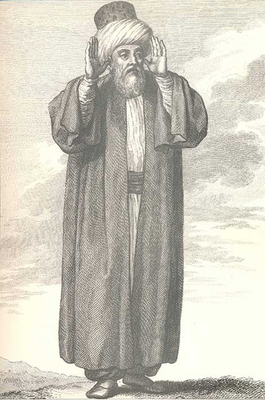
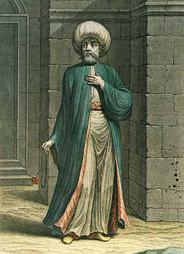
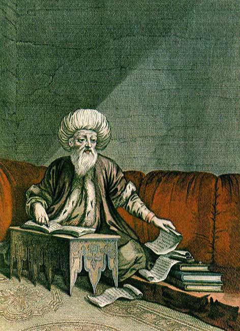
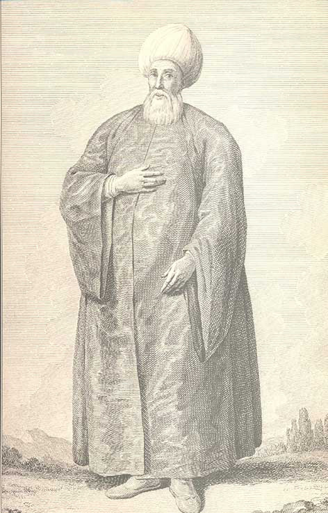
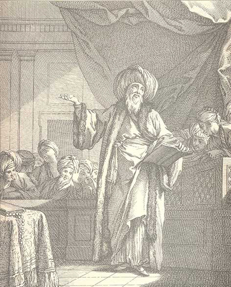
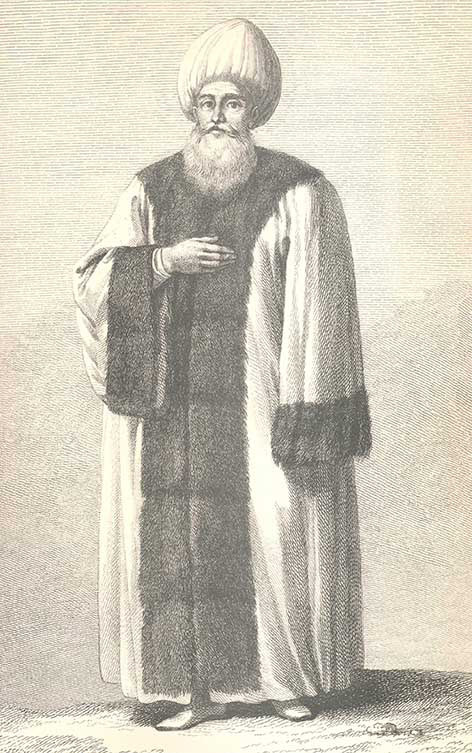
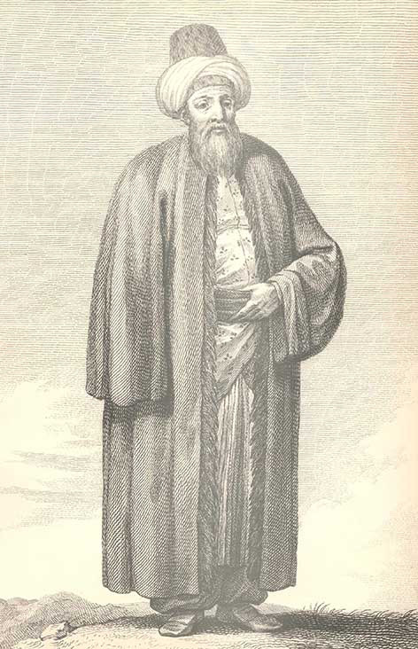
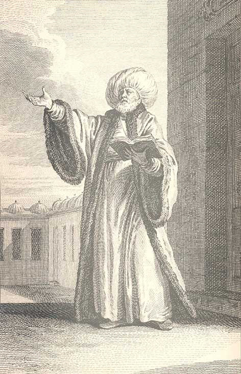
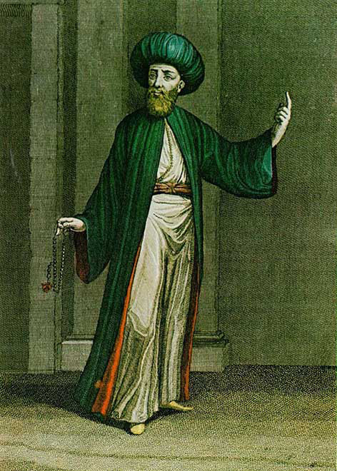

I. Osmanlı Döneminde İmamlar
1. Genel Giriş
Osmanlı Devleti’nde imamlar, Müslüman topluma hizmet veren kadrolar içinde en geniş yeri işgal eder ve hizmet sahaları itibariyle de çeşitlilik gösterir. Toplum örgütlenmesi içinde mahalle imamları ayrı bir konuma sahip olmakla beraber, sivil ve askerî kesimlerde hizmet vermek üzere özel ve resmî kimlikleri içinde de geniş bir kitle oluştururlar. Resmî kimlikleri içinde imamlar, padişah beratı ile hizmete alınmaları itibariyle Osmanlı devlet sistemi içindeki tabiri ile askerîden sayılmaktaydılar. Bilindiği üzere ehl-i berât olmak reâyâyı askerîden ayıran en önemli özellik idi. Berat ile atanan imam, müezzin ve bir caminin hatibi vazîfe süreleri müddetince, raiyyet rüsûmu ve avârızdan muaf tutulmuşlardır. “E’imme ve huteba muktedâ-yı nâs oldukları i‘tibârıyla rusûm-ı ra‘iyyet ve bilâ-emr-i şerîf tekâlif-i şakka mutâlebesiyle ta‘addi olunmak hilâf-ı kanûndur.” hükmü bu durumu teyid eden bir örnektir.1 XVI. yüzyıldaki uygulamalarda bazı yerlerde müezzin resm-i raiyyet’e tâbi görünmekle beraber, genelde müezzin, hâfız, mu‘arif ve kayyum gibi din hizmetlileri aynı muafiyetten istifade ile avârızdan hariç tutulmuşlardır. Bunlar, vazîfeleri sona erdiğinde tekrar raiyyet olur ve raiyyet rüsûmu öderlerdi.2
İmamlar; halife, fakih veya molla sıfatlarıyla anılır3 ve hizmet verdikleri mescid ve camilerin sair görevlileri için de geçerli olduğu gibi genelde bu kurumların vakıflarından maaş (vazîfe) alırlardı. Dolayısıyla vakıflar, bu gibi görevlilere geniş bir iş sahası yaratan kurumlar olarak öne çıkmaktadır.4 İmamlar içinde timar sahibi olanlara da rastlanabilmekte; bazılarına bir takım bağ, bahçe, mezra ve tarlalardan gelen gelirler tahsis edilebilmekte ve aşağıda belirtileceği gibi sair değişik kalemlerden de maaşlarının karşılanması söz konusu olabilmekteydi. Tayinleri genelde vakıf mütevellisinin veya nazırının teklifi ve bazen mahal kadısı başta olmak üzere örnekleyeceğimiz çeşitli merciilerin arzı ile gerçekleşmekle beraber, özellikle mahalle veya köy imamlarının, ahalinin kabul edebileceği bir şahıs olması öngörülürdü. Kasımpaşa’da Sururî Mahallesi’ndeki aynı isimli mescidde günde 6 akçe ile imam olan Salih b. Süleyman’ın imameti kendi rızasıyla aynı mahalleden Mehmed’e devr etmek (ferâğ ve kasr-ı yed) istediğinde, adayın her vechle imamete kadir olması yanında mahallelinin de rızası ve onayının alınmış olduğunun ve kendisine berat verilmesinin semtin bağlı olduğu Galata kadısı tarafından arz edilmesi, bu tür uygulamaya bir örnektir.5 Yine Ayasofya Camii civarında İshak Paşa Mahallesi ahalisi 41 mühürlü olarak verdikleri arzuhalde, Hafız Halil’in vefatı ile uhdesinde olan imamet ve hitabet cihetlerinin, ulûm-ı Arabiyyeye vâkıf, hüsn-i ahlâk ile mevsûf ve herkesin kendisinden hoşnûd olduğu büyük oğlu Nazif’e tevcihini istirham etmekteydiler. Nazif’in, Ahırkapı’da İshak Paşa Mescidi vakfından imamet için günde 9 akçe ve hitabet için I. Mahmud kütüphanesi vakfından günde 10 akçe vazîfe ile tayininin gerçekleşmiş olduğu anlaşılmaktadır.6
Ahalinin onayı ile beratsız olarak imamet hizmetinde bulunanlar da söz konusu olabilmektedir. Bunlara 16. yüzyılda namazcı denilmekte olduğu ve resmen imam unvanıyla anılmadıkları bilinmektedir.7 Bu tür imamlara, özellikle kırsal kesimde XIX. yüzyılda da rastlanmaktadır: Nitekim Trabzon’a bağlı Yoros nahiyesi Livari köyünde beratsız ve hasbî olarak imam ve hatiblik yapmakta olan Ahmed b. Ömer, tekâlif-i şakka mutalebesiyle ta‘addi edilmekte olduğuna dair şikâyetini dile getirdiğinde, e‘imme ve huteba muktedâ-yı nâs olarak kabul edilmelerinden ötürü emr-i şerîf isdarıyla muafiyyetini tescil ettirmiştir.8 Yine Muş kazasına bağlı Musyan köyü camii imamı Hüseyin’in bu şekilde hizmet vermekte ve vergi mutalebesiyle rencide edilmektedir. Beşiktaş Sarayı bahçesinde rençber olarak çalışan oğlunun vasıtasıyla imamet ve hitabet cihetlerinin kendisine tevcihi için berat taleb etmekte ve vergiden muafiyyetini dilemektedir (1844).9

Müezzin
Asrın sonlarında bu gibi imamların askerlik hizmetine celbleri ile ilgili meselelerine aşağıda ayrıca değinilecektir. Cihetlerin beratsız ifası genelde kabul görmediği ve bir resmiyyet arzetmediği gibi, beratların saltanat tebeddülünde tecdidi ve kaybedilmesi halinde de muhakkak surette bir yenisinin çıkartılması icab etmekteydi. İsdar edilen beratların ise altı ay içinde alınması gerekmekteydi.10 Tecdid sebebiyle iade edilen beratlardan arşivlerimizde çok sayıda bulmak ve bu türdeki örneklemeleri mebzulen yapmak mümkündür. Mesela, Manisa’da Kara Yunus Mahallesi’ndeki mescidde günde 5 akçe ile imam olan Mustafa, atîk beratını İstanbul’a getirterek, bu beratı mucebince bir yenisini almıştır.11 Reisülküttab Abdullah Efendi’nin Üsküdar’da Kapuağası Çeşmesi kurbundaki mescidinde, evkafından günde 2 akçe ile salâ müezzini olan Lutfullah İsmail’in beratı zayiinden ötürü yenilenmiştir.12 Kayseri’nin Talas köyünde Şah Alioğlu Camii’nde günde 1 akçe ile imam olan Ahmed b. Abdullah’a zayiinden dolayı yeni bir berat verilmiştir.13 Evkaf-ı Hümayun’a mülhak sadr-ı esbak Elhâc Mehmed İzzet Paşa vakfından günde 30 akçe vazîfe ve senede 18 kuruş Ramazaniyye ile vaiz ve ders-i âmm-ı Risâle-i Birgivî cihetlerine mutasarrıf olan Mehmed b. Mustafa’nın, beratını kaybettiği vakıf mütevellisi tarafından duyurulduğunda, kendisine bir yenisi verilmiştir.14 Bu tür işlemlerde atîk berât zuhûr ederse i‘tibâr edilmemesi kaydı düşülmektedir.
Vakıfların zamanla yalnızca kâğıd üzerinde görünür olması ve gerçek gelirlerini kaybetmeleri neticesinde vazîfelerin maddi yükünün karşılanması için başka kaynaklar aranmaya başlanmış ve giderek merkezî idarenin bunlara değişik kaynaklardan (çeşitli gümrük, mukataa, cizye gelirleri, rusûm ve vergiler, Selâtin vakıfları, Haremeyn hazinesi, Hazine-i amire, Evkaf-ı hümayun Nezareti) maaş tahsisi zarureti hâsıl olmuştur. İmam atamalarında genelde bu hizmeti yerine getirmek için yeterli donanımda, dolayısıyla dinî bilgilerle mücehhez ve iyi ahlak sahibi olmak şartları aranmakta, ancak eğitim durumları için belirli bir kural her zaman için söz konusu olmamaktaydı. Dolayısıyla imamlık, özellikle küçük yerleşim birimlerinde ve kırsal kesimde babadan oğula veya aile bireylerinden teklif edilen birine geçebilmekte; büyük yerleşim birimlerinde bu atamalar yanında, ortaya çıkan diğer adaylar arasında cereyan eden imtihanlar amir bir rol oynayabilmekte ve mevrus adaya göre dinî bilgilerde daha üstün donanımda olanların tercih edilmesi söz konusu olabilmekteydi. Bursa’da Mecnun Dede Mescidi imamının vefatı üzerine yerine kardeşinin atanması ve bunun da vefatı akabinde imamlık hizmetinin diğer kardeşine tevcihi, ancak bu arada başka bir adayın ortaya çıkması ve uygulamaya itirazı üzerine yapılan imtihanda, Kuran-ı Kerîm’den birer ‘aşir ve Gürer’den bir mıkdâr ibâre okutulması ve tecvîdden yapılan imtihanda bu adayın faikiyetinin görülmesi üzerine imam olarak tayininin tahakkuk etmiş olması (1711) bu tür uygulamalara örnek olarak gösterilebilir.15
2. Mahalle İmamları
Osmanlı şehir örgütlenmesi içinde mahallenin özel konumu, mahalle imamlığını önemli bir vazîfe olarak öne çıkarmıştır. Büyük yangınların yol açtığı olağanüstü hallerde mesken sıkıntısına çözüm bulmak amacıyla kefere ile aynı evi paylaşmaya, şi‘âr-ı İslâmiyye’den hâric ve şer‘-i şerîfe ve kanûn-i münîfe mugayır olması gerekçesiyle getirilen yasaklamaların da işaret ettiği gibi,16 aynı çatı altında olmamak kaydıyla veya XVI. yüzyıl örneklerinde olduğu gibi, henüz ayrı bir mahalle teşkil edecek kadar nüfûs etkinliği içinde bulunmama sebebiyle17 gayrımüslim halkı da içine alabilmekle beraber, Müslüman mahallesi, genel olarak İslam ahali ağırlıklıydı. Mahalle, merkezde yer alan ve camiden ziyade bir mescid etrafında gelişir ve mescide minber ilavesi ile oluşan camiler zamanla yeni mahallelerin de doğuşuna yol açabilirdi.18 Mescidin minber ilavesiyle cami haline getirilmesi genelde ahalinin ihtiyacı ve mahallenin belirli bir nüfusa ulaşması neticesi olarak gündeme gelmektedir. Minber vazetmek isteyen hayır sahibi, hatiblik cihetiyle ilgili ödemeleri de üstlenirdi. Bu konuda yapılan başvuru, mahal kadısının arzıyla bildirilir ve minber vaz‘ı izn-i sultanî ile gerçekleşirdi.19
Kanuni zamanında 219 Müslüman mahallesi olduğu bildirilen20 İstanbul’da genelde her mahalle, bir mescid veya cami ile donatılmış bulunmaktaydı. Bir mahallede birden fazla cami olması sözkonusu olabildiğinden imamlarının sayısı mahalle sayısını aşabilirdi. Bu tür fazla camilere mahallesiz kaydıyla işaret edilmektedir. Nitekim XVI. yüzyılda Edirne’de 134 mahalle olmakla beraber 168 mihrab mevcuttur. Dolayısıyla bu sayı kadar imam, müezzin ve hatib bulunmakta ve mahallelerin ancak üçte ikisi kadarında yalnızca bir mescid, dolayısıyla imam ve müezzin yer almaktaydı.21 Bir şehzâde tahtgâhı olması hasebiyle özel bir gelişme durumu arzetmiş olan mahallere örnek olarak Manisa’da XVI. yüzyılda 34 mahalle ve mescidi ve ayrıca 12 büyük camii bulunmaktaydı.22 XVII. yüzyılda ise şehrin gösterdiği gelişme doğrultusunda oluşan yeni mahallelerin ilavesiyle mevcut mescidlerin sayısı 57 olarak belirtilmektedir.23 Kayseri’de 1500’de 35 mahalle ve mescid; Ankara’da 126 cami ve mescid;24 Musul’da ise 20 Müslüman mahallesinde 22 mescid bulunmaktaydı.25 Bununla beraber, bu tür büyük merkezlerin dışında kalan şehirlerdeki mahalle sayılarının -Diyarbakır, fethinden hemen sonra 1518’de 4, ancak 1540’da 28- daha az olduğu gözlenmektedir. Gayrımüslim mahalleleri genelde kilise ve sinagog çevresinde gelişmekte ve buralarda da imamların gördükleri vazîfelere benzer işler genelde ilgili cemaatin papası vasıtasıyla yerine getirilmekteydi.
Mahalle imamlarının vazîfeleri çeşitlilik arzetmektedir: Tanzimat devrine gelinceye kadar imam, devleti temsil etmek üzere mahallenin önde gelen sorumlusuydu. Vazîfelerinin ifası sırasında kadılar tarafından teftiş edilir; ahalinin imam hakkında vaki haklı şikâyetleri azillerine sebep olabilir ve cezalandırılmalarına yol açabilirdi. Dolayısıyla belirli bir murakabenin kaydı altında bulunurlardı. Manisa’da Yarhasanlar Mahallesi’ndeki Karaburç Mescidi imamı Ahmed b. Mahmud’un bî-namâz olduğu töhmeti ile bir kısım ahali tarafından istenmemesi üzerine, bizzat imamın, kendi hakkında tahkikat açılması talebiyle mahkemeye müracaat etmesi ve sair cemaatin şehadetiyle kendisini temize çıkartması26 veya İstanbul’da Ördek Kassab Mahallesi ahalisinin mahalle imamı Elhâc Halil’in, hal ve evza‘ ü etvârından hoşnûd olmadıklarından, ahaliye şetûm-ı galiza ile şetm etmekte olduğu, kendisinden herkesin müteneffir ve mütezarrır olup emn ü rahatlarının kalmadığı şeklindeki şikâyetleri üzerine kadıya yapılan başvuru neticesinde, adı geçen imamın kendi rızası ile vazîfeden ayrılmasının temini ve muhtar-ı cemaat olan başka bir kişinin imam olarak atanması bu tür denetime birer örnektir.27
İmamlar kadıların yerine getirmesi gereken birçok işte onların doğal yardımcılarıydı. Mahallenin düzeni, asayiş ve inzibatının sağlanması; içki içilen yerlerin tesbiti ve fuhşiyat ile iştigal eden kadınların belirlenerek mahalleden sürülmeleri; mahallelinin gerekli İslâmî âdâb içinde yaşamlarını sürdürmeleri ve dinî vecibelerini yerine getirmeleri imamlar tarafından gözlenir, özellikle vakit namazlarının ihmali ile ilgili olarak son zamanlarda sıkça isdar edilen fermanların tatbiki ve özellikle kadınların kılık-kıyafeti ile ilgili düzenlemelerin, zinâ’-i ayn fesâdına yol açan alışılmamış renkler ve yeni moda elbise kesimleri gibi hususlarda kaffe-i ahvâl u etvâr-ı ibâdın hudûd-ı şer‘iat-ı mutahharaya tatbîki emrine dikkat edilmesi28 gibi sair hükümet emirlerinin duyurulması29 ve bunlara uygun davranılmasının temini, hatta kadınların camilere sokulmaması30 gibi yasaklamaların uygulanması kendilerinden beklenirdi. 3 Kasım 1839’da Tanzimat Fermanı’nın okunuşu münasebetiyle sarayın Gülhâne Meydânı’nda tertiplenen büyük merasime, sair hademe-i şeri‘at ve meşâyih-i tarîkat yanında, bu fermanın içeriğini mahalle halkına iletmeleri kendilerine havale edilen İstanbul’daki bütün hatib ve imamların da davetli olarak hazır bulundukları bilinmektedir.31
İmamların mahallelerinde oturanlar hakkında tam bir bilgi sahibi olmaları beklenirdi: Her imâmın mahallesinde kaç hâne vardır ve sâhib-i mülk ve müste’cir, kibâr ve esnâf ve erâmil cümlesinin isimleri ve dirlikleri ve san‘atları tasrihiyle defterlerinin tanzimi,32 mahallede oturanların kimliklerinin belirlenmesi, gelen yabancıların veya yeni taşınanların tesbiti ve kayıt altına alınması işleri; yeni gelenlerin kefalete rabtı, keza ya bu rabtın bizzat kendisi tarafından üstlenilmesi veya genel kefalete bağlanarak bu işlemin mahalleli adına yapılması, mahalle sakinlerinin ikamet mahal ve sürelerinin belirlenmesi, mürûr tezkireleri’nin elde edilmesi ile ilgili ilk işlem olmak üzere ikametgâh ve kimlik belgelerinin tanzimi,33 imamlar tarafından görülür ve kefilsiz olanların mahallede barınmasının sorumluluğunu taşırdı. Hapis ve tevkifi icab eden kadınların imamların evinde mevkuf tutulmaları söz konusu olabilmektedir. Nitekim Belgrad’da imam Hüseyin’in hanesinde habsedilen bir kadın için günde bir ekmek ve geceleri mum verilmesi ve sair masrafının görülmesi için imama ayda 80 kuruş ödenmesi, bu tür uygulamalara bir örnektir.34 Bilâ vâris veya vâris-i ga’ib olarak vefât edenlerin bildirilmesi,35 ölüm ve defin, doğum kayıtları, nikah akdi gibi işlemler imamlar tarafından yürütülür, bazı beledî işlerin görülmesi, bu meyanda mahallenin temizliğine dikkat edilmesi ve çevre temizliğinin sağlanması,36 yangına karşı evlerdeki ocakların iyice söndürülmesi ve temizlenmesinin temini,37 keza vazîfeleri arasına sayılırdı.

İmam
Nikah ve cenaze işlerinden belirli bir ücret alınmakta olması sebebiyle, birden fazla cami ve mescidin bulunduğu mahallelerde imamlar arasında çekişmeler yaşanabilmekteydi. İstanbul’da Emîn Sinan Mahallesi imamı Hüseyin’in, nikah ve defin işlerine, aynı yerde bulunan ancak kendisine mahsus bir mahallesi bulunmayan Hamza Paşa Mescidi imamı Elhâc İsmail’in müdahale etmekte olduğu ve bu tür hizmetleri gördüğüne ve bunun önlenmesine dair İstanbul kadısına yaptığı şikayet (1743), aydınlatıcı bir örnektir.38 Bunun önlenmesi amacıyla, bu tür işlerin taksim edilmesi ve bu gibi hizmetlerden elde edilen gelirlerin eşitce bölüşülmesi söz konusu olmakla beraber, hizmeti görenin elde ettiği geliri paylaşmaya yanaşmamasından ötürü aralarında kimi zaman bazı anlaşmazlıkların çıkabildiği gözlenmektedir.39
Muhtar ve mahallenin ileri gelenleri ile birlikte fırınlarda ekmeklerin kontrolü ve ihtikar ve sahtekarlıkların önlenmesi gibi işler yanında, yakın zamanlarda iâne ve kurban derilerinin makbuz karşılığında toplanması da yine kendilerine havale edilmiş, 1908’den sonra yapılan seçimlerde, seçmen kütüklerinin hazırlanmasında vazîfe almışlardır.40
Mahallede cami;, vâkıf ve sair hayır sahiplerinin önemli maddî katkısıyla ayakta duran ve bütün mahallelinin de iştirakinin söz konusu olduğu avârız vakfı, bir nevi yardımlaşma kasası olarak imamın sorumluluğu altında muhafaza edilir ve burada toplanan para faizle işletilir ve hâsıl olan meblağ, mahalledeki hastalara, fakirlere, yardıma muhtaç evleneceklere, fakirlerin cenazelerinin kaldırılmasına, su yollarının onarımına, cami veya mescidin tamirine, köylerdeki avarız vakfı örneklerinde olduğu gibi kimi yerlerde imam başta olmak üzere buradaki hizmetlilerin maaşlarının ödenmesine,41 yeni gelenlere yerleşme veya memleketlerine döneceklere yol parası verilmesine ve buna mümasil gerekli yerlere sarf edilirdi. Ancak bu paraların Mısır valisi Mehmed Ali Paşa’nın isyanında askerî harcamalar için zabtedildiği bildirilmektedir.42
İmamlar resmî soruşturmaların ve hazırlanan resmî belgelerin imza ve mühür sahibleri arasındadır: Mahalle adına verilen arzuhallerde ve mahalleli arasındaki anlaşmazlıkların çözümünü tanzim eden belgelerde yer alır. Gayrımüslimlerin herhangi bir şekilde kilise ihdası, mevcutların tamiri ve bunun gerekli olup olmadığının tahkiki ve tamir akabinde vaz‘ı kadîmi dışında herhangi bir ilavenin söz konusu olmaması için kurulan teftiş heyetlerinin doğal üyesidir. Bunun gibi mesela, mukataaların tesbit edilen muaccelesi dâhilinde tâliplerine usûlünce satılması işlemlerine nezaret eden şahitler heyeti (şühûdü’l-hâl) içinde bulunurlar.43 Özellikle Tanzimat devrinde nüfûs, emlak ve vergi tahriri işlerinde ve kırsal kesimdeki ahaliye isabet edecek olan vergi dilimlerinin tesbitinde kendilerine de bir rol verilmiş olması44 ve askere alınacakların kur‘a çekilişlerine nezaret etmeleri ve bununla ilgili olan işlemleri yürütmeleri45 ve öğrenim gördükleri süre içinde askerlikten muaf tutulan gençlerin (talebe-i ulûm)46 eğitim durumlarının tesbitiyle gerçekten öğrenci olup olmadıklarının yoklanması amacıyla yapılan imtihanda, bu iş için oluşturulan kur‘a meclisinin bir üyesi olarak yer almaları47 önemlerini ayrıca arttırmaktaydı.
İmamların vazîfelerinin din işleri ile kısıtlı olmadığı ve genelde mahallenin yönetimiyle ilgili vazîfelerinin daha ağırlıklı olduğu ve köylerde ise ahali üzerinde etkili olmasından ötürü köy hayatının önde gelen simaları ve dolayısıyla idaresinin nüfuzlu şahsiyetleri arasında yer aldığı görülmektedir. Trabzon’daki sıbyan mekteplerinin durumunun suret-i matlûbede olup olmadığının tahkiki ve çocukların okula devam etmeleri ve okulu ihmal ile herhangi bir işte çalışıp çalışmadıklarına nezaret etmek üzere köylere müfettiş yollanması düşünüldüğünde, köylerdeki okullara nezaret işinin imamlar ve ihtiyar heyeti tarafından yapılmakta olduğunun belirtilmesi (1869),48 son zamanlarda böyle bir vazîfenin de kendilerine havale edilmiş olduğuna işaret etmektedir.
İmamların yönetim ağırlıklı konumu Tanzimat devrine kadar değişmeden kalmıştır. II. Mahmud devrinde kurulmaya başlanan muhtarlık teşkilatı, imamların yönetici kimliklerini giderek artan bir hızla ikinci plana atmıştır. Vakanüvis Lütfi’deki kayda nazaran, 1828-29 Rus Harbi sebebiyle İstanbul’da erkek nüfusun tesbiti ve sicile kaydı icabettiğinden, bu hususta imamların musâmaha edememesi içün her mahalleye ahalinin önde gelenlerinden evvel ve sânî olmak üzere ikişer muhtar tayin edilmesine karar verilmiştir.49 Anadolu’da muhtarlığın ilk ihdas edildiği yer olan Kastamonu’da bu kuruluş ayânların nüfuzunun kısıtlanmasında bir araç olarak düşünülmüş olmakla beraber50, yaygınlaşması imamların aleyhine bir netice vermiştir. Bununla beraber bu gelişmeyi, modern şehir hizmetlerinin ve çağdaş mahallî idare düzenlemelerinin kaçınılmaz bir sonucu olarak görmek gerekmektedir. Dolayısıyla bu gelişmeyi, halkı imamların zülmünden ve istibdadından kurtarmak51 haksız töhmetiyle yorumlamaya da imkân olmadığı açıktır.52 Taşrada muhtarlıkların ayânların keyfi idarelerine karşı bir tedbir olarak ve nihayet ayânlık idaresinin yerine kaim olmak üzere kurulduğu ve imamların mahalle halkına ve muhtarlara kefil olmalarının (...Bir mahalle ahâlîleri birbirlerine ve muhtârlar mahalleleri ahâlîlerine ve imâmlar dahi topuna kefîl olarak...)53 sağlanmasıyla da bunların itibarlarının korunmuş olduğu ayrıca gözlenmektedir. Bu gelişme doğrultusunda mahalle imamlarına da muhtarlar gibi Darbhane-i amire’de hakkedilen resmî mühürler hazırlanmıştır.
Son zamanlarda nüfus kayıtlarının tutulması ve mahalledeki ölümlerin kanunun öngördüğü zaman içinde bildirilmesi kaydıyla ilmühaberler vermekle yetkili olmaları çeşitli meselelerin oluşmasına yol açmıştır. Her türlü ilmühaberin tanziminde 5 kuruş ücret-i tahtimiyye alınması gerektiği halde fazla para taleb edilmesi ile ilgili şikayetler yanında bu gibi vefiyyatın kanunun öngördüğü süre içinde ihbar edilmemesinden ötürü haklarında pek çok davalar açılmış ve para cezaları verilmiştir. Ancak imamların yapmakta olduğu yönetim ile ilgili işlerin muhtarlara devredilmeye başlandığı, en nihayet nikah işlerinin de ellerinden alındığı ve aşağıda değinileceği üzere giderek imparatorluğun son senelerindeki şikayetleri doğrultusunda yalnızca gassallık hizmeti ile yetinmek mecburiyetinde kaldıkları ve üstelik geçim sıkıntısı içine de girmiş oldukları tesbit edilmektedir.
3. Askerî İmamlar
Resmî konumlu imamlar arasında orduda hizmet görmekte olanların önemli bir yer işgal ettikleri açıktır: Eski askerî sistem dâhilinde özellikle Yeniçeri Ortaları’nda, Nizâm-ı cedîd ile kurulan talimli asker ocaklarında, serhadlerdeki müstahkem mevkiilerde, askerî teknik sınıflar içinde (top ve humbarahanelerde), askerî eğitim müesseselerinde (deniz ve kara mühendishanelerinde) donanma ve Tersane’de ve nihayet yeni kurulan askerî hastahanelerde (Maltepe Hastahanesi, h. 1243) dinî hizmetlerin imamlar eliyle gerçekleştirildikleri ve bunların padişah beratı ile tayin edildikleri ve muayyen maaşlara bağlanmış oldukları bilinmektedir. III. Selim devri Nizâm-ı cedîd uygulamaları içinde yeni ihdas edilen askerî kuruluşlardan olan Levent Çiftliği’nde, askerlerin dinî eğitimi için imam kadrolarına yer verilmiştir. Nizâm-ı cedîd askerinin her bölüğüne, askerlere beş vakit namaz kıldırmak ve ta‘lîm-i aka’id-i diniyye lâzıme-i guzzât-ı İslâm olmağla bunlara Birgivî Risâlesi’ni okutmak üzere tayin edilen imamlara günde 80 akçe yevmiyye tahsis edilmiş bulunuyordu.54 Yine III. Selim devrinde imamet ve hitabet cihetlerinin nâ-ehle tevcih olunmaması için bir nizamname yürürlüğe konulmuştur (1798).55 III. Selim’in, imâmet ve hitâbet bundan sonra kimsenin ref‘inden ve kasr-ı yedinden ahâr kimseye verilmesin ve verildiği vakit de müstehakkına verile hattı bu düzenlemenin ana kurallarını belirten bir beyandır.56 Ancak bu uygulamada ve genelde ilmiyye sınıfında yapılmak istenen islahatta ulemanın genel direnişleri sebebiyle başarılı olunamadığı belirtilmektedir.57
Yeniçeri Ocağı’nın ilgası akabinde (1826) kurulan yeni ordu teşkilatında (Asâkir-i Mansûre-i Muhammediyye), mansure alayları ve taburları içinde imamlara özel bir önem verilmiştir. Bu ise, II. Mahmud’un Yeniçeri Ocağı’nın ilgasında ve yeni askerî düzenlemelerde kendi tarafında saf tutmaları için gerekli tedbirleri ustalıkla almış olduğu ulemanın tatmin edilmesi kaygusunu da taşıyan ve siyasî incelik içeren bir iş olarak görünmektedir. Mazulleri dâhil olmak üzere bütün yüksek ulemanın biraz zorlanmış olarak olsa dahi Sultanahmet Meydanı’ndaki o kritik günde (15 Haziran 1826) Sancak-ı şerîf altında toplanması ve yeniçerilerin imhasını sağlayacak çatışmalara cevaz vermeleri, teşebbüsün başarı ile sonuçlanmasının başlıca etkenleri arasında olduğuna şüphe yoktur. Bu gelişmede mahalle imamlarına da büyük işler düşmüştür: Ocağın ilgasına ve yeni bir askerî teşkilatın kurulduğuna dair ferman suretleri halka duyurulmak üzere mahalle imamlarına dağıtılmış,58 gizlenen yeniçerilerin ihbarı ve yardımda bulunanların cezalandırılacaklarının ilanı,59 herkesin elinde bulundurduğu esame varakalarının senede tebdili için ilgililere teslim etmesi gerektiği60 ve Bektaşi tekkelerinin kapatılmasından sonra hazırlanan, ahalinin lâzime-i diyânete i‘tinâ ve ihyâ-yı sünen-i seniyyeye ikdâm-ı gayret içinde bulunmasına dair olan fermanlar yine mahalle imamları tarafından halka duyurulmuştur.61 Yine aynı hadise akabinde asayişin temini babında yatsıdan sonra sokaklarda gezinilmemesine dair olan fermanın tamimi imamlara havale edilmiş olduğu gibi, mahalle bekçileri de imamların ve ahalinin tekeffülüne alınmıştır.62 Hadise günü yanlarına mahalle ihtiyarlarını ve medrese talebelerini de katarak halkı kendi önderliğinde toplayan ve gazaya gider gibi tekbir getirerek padişahın emrine uymak üzere Atmeydanı’na doğru sevkeden imamların katkıları63, II. Mahmud’un ehl-i ırzın kendi kazanlarını evlerinin önüne koymaları özlemini nihayet gerçekleştirmiş ve halkın geniş katılımı böylece sağlanmıştı. Yoğun halk kitlelerini harekete geçirmede etkili olan imamlara aynı şekilde imparatorluğun sair yerlerinde de bu mesele ile ilgili olarak büyük bir görev düştüğünü söylemek yanlış olmaz.64

İmam Efendi
II. Mahmud’un dinî çevrelerin desteğini sağlamak amacıyla aldığı tedbirler arasında 1824’de çocukların dinî eğitimlerine itina gösterilmesi ve işe verilme gerekçesiyle bu eğitimden kaçınılmasını önlemeye matuf girişimleri, imamlara bu anlamda önemli vazîfeler yüklemiştir. Küçük çocukların aileleri tarafından okul yerine işe verilmeleri söz konusu olursa bu durum mahalle imamları tarafından izlenecek ve kadılara ihbar edilecekti.65
Yeniçeri Ocağı’nın kaldırılışına takaddüm eden günlerde her biri 150 kişiden oluşmak üzere 51 Orta halinde kurulan Eşkinci Ocağı’nın beher bölüğüne, İstanbul kadısı marifetiyle imtihana tâbi tutularak birer imam tayin edilmesine ve bunlara maaş olarak İstanbul gümrüğünden günde 120 akçe tahsisine karar verilmiştir (29 Mayıs 1826). Bunlar, eratın vakit namazlarını kıldırma dışında, dinî eğitimle de meşgul olacaklardı. Hizmet süreleri beş sene olarak belirlenmiş olup bu süre sonunda çeşitli yerlere kadı olarak tayinleri mümkün olabilecekti.66
Yeniçeri Ocağı’nın ilgası üzerine 17 Haziran’da kurulduğu ilan edilen Asakir-i Mansûre-i Muhammediyye teşkilatıyla askerî yenilenmeye, Eşkinci tatbikatına yeni bir şekil verilerek başlandı. Bu kuruluşta da ulemanın etkisi ağırlıklı olarak devam etti ve yeni askerî teşkilatın din hizmetlerini ellerinde tutmayı başardılar. Özellikle en az 15 yaşında olmak kaydıyla acemi kışlalarında eğitilmek üzere askerliğe kabul edilen gençlerin dinî eğitimlerinin sağlanmasında bu tür imamlardan önemli işler beklenmekteydi: Her gün sabahları birer növbet Kur’an-ı Kerîm ve avâma lâzım olacak mesâ’il-i diniyye ve ilm-i hâllerini ve resm-i hat ve kabiliyetlerine göre ulûm-ı sâ’ireyi ta‘lîm ve evkat-ı hamseyi cemâ‘atla edâ eylemelerine azîm ihtimâm eylemek kanunnâmenin öngördüğü vazîfeleri arasındadır.67 Yeni ordu bölüklerine yüz kişiye birer tane olmak üzere imam tayini ve vazîfelerinin belirlenmesine uygulamanın hemen akabinde girişilmiş (7 Temmuz 1826) ve askerin günlük ibadeti ve dinî eğitimleri kendilerine tevdi edilmiştir. Aynı şekilde yeni ihdas edilen Mu‘allem Bostaniyân-ı Hassa Ocağı’nın 1512 nefer olarak tesbit edilen mevcuduna 24 Aralık 1826 tarihli nizamnamesine göre 12 imam tayin edilmiştir.68
İstanbul’da imam adaylarının tesbiti İstanbul kadısına; taşralarda ise yerel ulemanın dayanışmasını celbetmek amacı ile mahal kadılarına bırakıldı. Askerlerin eğitiminde yardımcı olabileceği düşüncesiyle dinî meselelerde bir el kitabı olan ve İmamzade Esad Efendi tarafından şerh edilen Dürr-i Yektâ adlı eser çok sayıda basılarak dağıtıldı.69 Askerî imamlar için önceleri ayda 30 kuruşluk bir maaş öngörülmüş olup bu paranın geçinmek için yetersizliği ve hâl ve haysiyetlerine nazaran kifayetsiz olduğu kısa zamanda ortaya çıktığından, 1826 Ağustos‘unda kisve-i behâ adı altında 30 kuruş daha zam yapılarak maaşları 60 kuruşa çıkartılmıştır.70 Bu imamların talebeden ve fukaradan olmaları, elbise parasını maaş olarak kullanmaları ve kendilerinin askerî imamlar olduklarını fark ettirecek surette elbiseler tedarik edemedikleri müşahade edildiğinden, asker ve zabitlere her sene Rûz-ı Hızır’da birer takım elbise verilmesinin öngörüldüğü gibi imamların da mahzûn olmamaları içün bu uygulama içine alınmasına ve kıyafetlerinin devlet tarafından sağlanmasına karar verilmiştir. Tahsis edilen giyeceklerinin dökümü; birer adet dayanacak renkte mollâ kavuğu ve birer destâr ve boy cepkâni biçiminde çaprastsız birer adet çuka entâri ve Magnisa ve bunun emsâli alacadan birer yelek ve çuka sıkma ve ikişer adet gömlek ve gömlek işi ve kırmızı serhâdli ayakkabı ve Kasım’da birer adet kırmızı çizme ve beher sene ve eskidikce bolca yenlü yağmurluklar ve birer münâsib zâbit kılıcı ve çanta ve matara ve üç senede bir defa Çerkesî biçiminde darca ve dâhil olduğu tertîbin elbiseleri rengince çukadan birer ferâce şeklindedir.71 Kavuklarının üzerine şürefadan olanların yeşil, olmayanların ise beyaz veya siyah bez sarmak hususu kendi ihtiyarlarına bırakılmıştır.72 Bu arada yeni askerî kıyafetlerde kullanılmaya başlanılan ay-yıldızların sair halk tarafından da istimali ve bazı kayık ve sair mahallere konulması yasaklanmış ve bu hususta isdar edilen emirname mahalle imamları vasıtasıyla halka duyurulmuştur.73
Teşebbüsün başarı kazanması kısa bir zaman sonra yeni askerî teşkilatın mevcudunun arttırılmasını gerektirmiş, bu ise imam sayısının da arttırılmasını zorunlu kılmıştır. Bu gelişme doğrultusunda İstanbul dışındaki Mansure alay ve taburlarına ilk birkaç sene içinde 167 imam tayin edilmiştir.74 Ordudaki imamların okur-yazar olmayanları eğitmesi de beklenmiş olmakla beraber, bunda pek başarılı olamadıkları anlaşılmaktadır. Okur-yazar olmayan subayların yükselebilmeleri için imamlar tarafından eğitilmesi gündeme geldiğinde (1838), bizzat imamlardan pek çoğunun okur-yazar olmadıkları ortaya çıkmış ve böyle bir uygulamanın mümkün olamıyacağı görülmüştür.75 Yapılan inceleme ise orduda imam olarak hizmet görmek üzere vasıfsız kişilerin vazife aldıklarını ortaya çıkartmıştır. Askerî imamların sayılarının azaltılarak daha yüksek bir maaşa bağlanması ve mesleğin câzip hale getirilerek vasıflı kişilerin imam olmasının sağlanması çözüm olarak düşünülmüştür. Bu münasebetle görüşünü açıklayan II. Mahmud’un tesbiti; alây ve taburlarda bulunan imâmlar hem lüzumundan ziyâde ve hem de ekserîsi ceheleden ve ehl ü erbâb olmadıkları doğrultusunda idi.76

Molla
Mevcud kadı kadrolarının normal kadılara tahsisi gerektiği sebebiyle, askerî imamların hizmet süreleri hitamında başlangıçta öngörüldüğü gibi kadı olarak kazalara tayinlerinin mümkün olamayacağı da anlaşılmıştır.77 Bu gelişmede, sivil kadılık kadrolarındaki darlık ve bunların askerî imamlara tahsis edilmesinin şeyhülislamlıkça mahzurlu görülmesi yanında, her bir taburda vazîfe gören 4 ve beher alayda mevcud 16 imamdan çoğunun askerîden ve ceheleden olmaları, edâ-yı salâta dâ’ir mesâ’il-i dîniyyeyi bile bilmedikleri78 gerçeğinin de etken olduğu anlaşılmaktadır. Böylece Kasım 1838’de askerî imam sayısının azaltılmasına teşebbüs edilmiş, alaylardaki imam sayısı 5 kişiye indirilmiş ve içlerinde âlim ve fazıl olan birisinin 500 kuruş aylık ile başimam olarak atanmasına ve diğer 4 imama ise ayda 160 kuruş verilmesine karar verilmiştir.79
Başimama, alay hocası denilmesi teklif edilmiş olmakla beraber, bu ifade uygun görülmemiştir. Bunların hepsinin askerî elbise giymelerine, hizmetleri hitamında yapılan imtihanlarda başarılı olmaları halinde başimamların müderris, tabur imamlarının ise kadı olarak atanabilecekleri hususuna yer verilmişse de bunun da tatbiki, boş kadroların ancak sivillere yetmekte olmasından ötürü zor ve hatta asker kökenli olarak ilmiyye sınıfına geçmeleri ve müderrislik ve kadılık gibi makamlara yükselmeleriyle, bunlara hocalık hakkı sebebiyle askerler tarafından itibar edileceği ve efrâd-ı askeriyyenin taraf-ı sâ’ire erbâbı ile ihtilâtı mahzûrdan sâlim olamıyacağı kaygusuyla sakıncalı görülmüştür.80 Bunda, yakın dönemlerdeki asker-ulema ittifakının sebeb olduğu olayların, isyanların, hal ve iclâsların hâlâ yaşamakta olan kötü hatırasının etkili olduğuna şüphe yoktur. Bu düzenleme ise, giderek yeniçerilerden sonra sıranın kendilerine gelmekte olduğundan kuşkulanan81 ulemanın nüfuzunun kırılması şeklinde yorumlandığından, siyasî iktidar ile özellikle alt kesimdeki ilmiyye mensupları arasında güvensizlik baş göstermesine yol açmıştır.
Topçu ve arabacı sınıflarının ilavesiyle yeniden örgütlenen piyadelerin 100 kişilik 8 bölükten oluşan her yeni taburuna yalnızca 4 imam tayininin kararlaştırılması ile bu sınıflardaki imam sayısı da yarıya indirilmiştir (1827).82 1828’de süvari birliklerinin teşkilatlandırılmasında 400 askerden oluşan her müfrezeye bir imam tahsis edilmiştir.83 Piyade ve süvari birliklerindeki imam sayıları daha sonraki yıllarda azalma göstererek, 1838’de her tabura birer imama kadar gerilemiştir. Ordunun teknik sınıflarındaki imam sayıları ise daha az tutulmuştur: Mevcudu 3600 olan topçulara 4 imam, 2000 kişiyi bulan arabacılara ise 2 imam düşmekteydi. Tanzimat’tan sonra başimamlar alay imamı olarak anılmaya başlanmış ve alaylardaki günlük işlerin düzenli olarak yürütülmesine nezaret etmek üzere oluşturulan alay meclislerinin doğal üyeleri arasında yer almışlardır (1848).84 Ayrıca, askere alınacakların kur‘a çekilişleri ve askerlikten muaf olacakların belirlenmesi amacıyla yapılan yoklamada, bu iş için oluşturulan meclislerin bir üyesi olarak hazır bulunmuşlardır.85
Askerlerin umûr-i diniyye ve i‘tikadiyye hususlarında aydınlatılması ve vecibe-i itâ‘at ve fezâ’il-i cihâdı ta‘lîm ve tefhîm eylemeleri için alaylara ulemadan birisinin alay müftüsü unvanıyla hatib olarak tayin edilmesine karar verilmiş ve uygulamaya geçilmiş olmakla beraber, bunların rütbe ve benzeri mükafata gereği gibi nâil olamamalarından ötürü, daha sonraları açılan kadrolara erbâb-ı fazl ü dânişten tâlibler zuhûr etmemiş ve bu hususlarda liyakat kesb etmemiş olanların tayinleri söz konusu olmuş olduğundan, uygulamaya bir müddet sonra son verilmiştir. 1871’de bu hizmet yeniden canlandırılmış, mevcud alay imamları içinde imtihan neticesinde liyakat kesb edenler ve dışardan talib olanlar seçilerek, bunlara İstanbul müderrisliği unvanı tevcih edilmesi nihayet şeyhülislamın da onayı alınmış olarak takarrur etmiş ve bu unvanın tekrar kullanılmasına karar verilmiştir.86
Bu gelişmelerin de işaret ettiği gibi, 1835’de çıkan ve kalemiyye, ilmiyye ve askeriyye arasındaki rütbe eşitlenmesini öngören kanunun eski devirlerin aksine ulemanın statüsünde bir gerilemeyi yansıtmakta olduğu açıktır. Böylece bir seraskerin rütbesi sadrazam ve şeyhülislam ile eşitlenmiş, binbaşıya kadar olan bütün diğer askerî rütbeler ise en yüksek ulema rütbesiyle eşit hale getirilmiş, dolayısıyla askerî hiyerarşi dinî hiyerarşiden daha üstün bir duruma sokulmuştur.87 Bu gelişme, ulemanın ne derecelerde vüzeraya tasaddur ve takaddüm ettiğini Kemal Paşazade örneğiyle de bildiğimiz eski dönem teşrifatının, dolayısıyla askeriyye karşısında ilmiyye sınıfına gösterilen saygının ve protokolda ön sıralarda olma halinin artık mazide kaldığına işaret etmesi bakımından da anlamlıdır. XVI. yüzyıl vüzerasının idârî, ilmî ve askerî konulardaki üstün nitelik ve donanımlarına rağmen ulemaya göstermiş oldukları bu saygının giderek azalmasındaki en önemli etkenin, bizzat ulemanın daha sonraki dönemlerde içinde bulundukları devrin gelişmelerine yabancı, bilgisiz, ilkesiz ve her türlü sûiistimâle açık ilmî ve ahlâkî genel zafiyetinden kaynaklandığına şüphe yoktur.88 İlmiyye rütbelerinin XIX. yüzyılda daha da ibtizale uğradığı, giderek değersizleşen ve gerçek olmayan (i‘tibârî) ünvanlar haline dönüştüğü, bizzat kadıasker raddelerine kadar yükseldikten sonra tarîkini paşalıkla mülkiyyeye tahvil eden Cevdet Paşa tarafından ifade edilmiş bulunmaktadır.89
4. Eğitim durumları
İmamların eğitim durumlarına işaret eden kayıtlar, bunların genelde muntazam bir öğrenim görmüş oldukları izlenimini vermemektedir. Askerî imamlar örneğinde olduğu gibi içlerinde yeterli eğitime sahip olmayanların da mevcud olduğu ve dinî bilgiler dışında başka konular hakkında fazla bir vukufa sahip olmadıkları gözlenmektedir. Yüksek makam imamlarının ve özellikle selatin camii imamları ise bu yönde birer istisna teşkil ettiklerini söylemek mümkündür. Bununla beraber, devletin son dönemlerinde bazı zafiyet hallerinin bu kesim için de söz konusu olduğu gözlenmektedir:III. Selim devrinde Ramazan ayının girmesiyle birlikte tertiplenen huzur derslerinde hocaların ilmî seviyesi düşük konuşmalarından şikayet edilmekte olması ve hatta bunların padişah huzurunda kavgaya tutuşurcasına ellerindeki kitapları karşılıklı olarak birbirlerine atmaları gibi nâhoş sahneler90 veya II. Mahmud’un, 1828-29 harbi esnasında Rus cephesinden gelen bir meserret mektubunu herkesin duyup sevinmesi için yüksek sesle okunmasını başimamı Zeynelabidin Efendi’den istediğinde, mektubun baş taraflarını okumaya girişen imamın gerisini çıkartamadığından, bizzat padişahın ayağa kalkıp mektubu elinden alarak yüksek sesle okuduğuna dair kayıt,91 bu yöndeki zafiyet hallerine işarettir. Huzur derslerinin seviyesizliği ile ilgili şikayetlerin ise Sultan Reşad devrinde de dile getirilmekte olduğu bilinmektedir.92
Bu durumun, genel bir şikayet konusu olarak özellikle 18. yüzyılın sonlarına doğru gözle görünür bir halde hüküm sürmekte olan yaygın cehaletin bir neticesi olduğunu düşünmek yanlış olmaz. III. Selim devri düşünür ve devlet adamlarından Behic Efendi’nin vurguladığı gibi, Anadolu ve özellikle Rumeli’de dinî bilgiler cihetiyle büyük bir cehalet hüküm sürmektedir ve hemen Edirnekapu’dan başlamak kaydıyla bu konuda çok ciddi tedbirlerin acilen alınması icab etmektedir.
Bu dönemde Anadolu ve Rumeli’deki camilerin cemaat kıtlığı yaşadıkları, medrese talebelerinin azaldığı, ibadet ve eğitime olan eğilimin zayıfladığı, ortalığı ülema kılıklı cehelenin doldurduğu ısrarla belirtilmektedir. Camie müdavemet ve ibadete riayet hususunda bu devirde çıkartılan ve ileride de çıkartılmasına devam edilecek olan fermanların yoğunluğu93 bu kayıtlardaki gerçeklik payını teyid etmektedir. Cevdet Paşa’nın da hem bu devir için hem de kendi zamanıyla ilgili olarak aynı tarzda değerlendirmelerde bulunduğu bilinmektedir.94
Vazîfelerini iyi yapmaları için nahiye, köy ve cami imamlarının üç ayda bir kadılar tarafından teftiş edilmeleri, Müslüman halkın cehaletten kurtarılması için din kitaplarının matbaada basılarak dağıtılması, kadı ve naiblerin gönderilen fermanların dillerini anlamayacak bir hale geldikleri, oysa din adamlarının kendi sahalarında ve dünya ahvalinde kendilerini iyi yetiştirmiş olmalarının ve böylece bunların bulundukları yerlerde özellikle siyasi ve mülki meselelerin çözümünde görüşlerinden ve kendilerinden istifade edilen bir kesim haline gelmelerinin gerektiği önemle vurgulanmaktadır.95 Medreselerde ve camilerde verilen derslerin kalitesinin yetersizliği, eskiden verilen derslerle kıyas edildiğinde, onların yanında çocuk oyunu gibi kaldıkları hakkında, genel cahillik ve ilmî zafiyet noktalarını dile getiren bu gibi kayıtlar ayrıca aynı devrin düşünürlerinden Ömer Faik tarafından da acı bir şekilde dile getirilmiştir.96 Ulemanın alt kesiminde geniş bir yer tutan imamların da bu olumsuz gelişmelerden ziyadesiyle etkilenmiş oldukları açıktır. Bununla beraber, hatiblerin ulema zümresi mensubu olarak addedilmelerinden ötürü, imamlar içinde aynı zamanda hitabet hizmetini de üstlenmiş olanların, hiç olmazsa dinî bilgiler açısından daha iyi bir eğitimden geçtiklerini ve yalnızca imamet hizmetini sürdürenlere kıyasen daha donanımlı olduklarını kabul etmek gerekmektedir. Nitekim hatiblerin tayinlerinin izn-i sultânî ile gerçekleşmekte olmaları (hitâbet ciheti izn-i hümâyûna mütevakkıf mevâddan olmağın) ve ancak böyle bir iznin akabinde kendilerine berat verilmesi ve hitabet cihetine de talib olan bir imam adayı için yapılan teklif ile ilgili işlemlerin, her iki cihet için ayrı ayrı tanzim edilen evrak üzerinde müstakilen tekemmül ettirilmesi ve her iki cihet için müşterek bir berat verilmekle beraber, hitabet için ayrı bir izn-i sultânî’ye ihtiyac duyulması, bunlara verilmek istenen özel konumun ifadesini taşımaktadır.97 Bu telakki dâhilinde imamların ulemadan addedilmedikleri anlaşılmaktadır.

Müftü
İmamlık cihetinin babadan oğula devredilmesi şartının geçerliliği, bu iş için gerekli dinî eğitimin aile içinde alındığı ve imamların çocuklarını kendilerine halef olmak üzere yetiştirdikleri kanaatini uyandırmaktadır. Bu eğitimin kalitesini ölçmek mümkün olmamakla beraber, özellikle küçük yerleşim birimlerinde ve köylerde bunun kifayetsiz kaldığı ve zafiyet hali arz ettiği ve genelde âvama lâzım olacak mesâ’il-i diniyye ve ilm-i hâl bilgi düzeyini pek aşmadığı anlaşılıyor. Bununla beraber imamların kendilerince oğullarının eğitimi ile yakından ilgilendikleri, İstanbul’da Soğanağa Camii imamı örneğinde olduğu gibi açıkca görülmektedir: Cami imamı Mehmed Efendi’nin oğullarından Nurbaba, Ağustos 1809’da ilk hatmine başlar ve Temmuz 1811’de itmam eder. Hatme önce yarım ve bir cüz halinde başlanır ve giderek cüz sayısı arttırılır. Bu sayı sonunda beş cüze kadar çıkar. Diğer oğlu Mehmed Emin ilk hatmine Ağustos 1808’de başlamış ve Haziran 1811’de 24. hatm-ı şerîfede hatmini itmam etmiştir. Bu münasebetle düzenlenen merasimde davetlilere hatmini 8 saatte dinletmiş, ertesi perşembe günü camide duası okunmuş ve ziyafet verilmiştir. Mehmed Emin, Mart 1812’de Soğanağa Mahallesi’ndeki Derviş Efendi evkafında 23 akçe ile cüzhânlık yapmaya başlamıştır.98
Soğanağa Camii imamı Mehmed Efendi gibi mahallesinde ve şehirde olup bitenleri kaydederek bir cerîde tutan ve dolayısıyla bir eser sahibi olan imamlara nadir de olsa raslanmaktadır.99 Eyüp Camii ikinci imamı Hafız Mustafa, telif ederek takdim ettiği El-âsârü’l-Mecidiyye fî’l-Menâkıbi’l-Hâlidiyye ünvanlı kitabının basılması ricasıyla takdim ettiğinde, bu şeyhülislam tarafından incelenmiş ve basılmasını tavsiye etmiştir.100 Trablusgarb nizamiyye askerî taburu imamı Mehmed Rıza da bir risale telif ederek takdim ettiğinde, eser yine şeyhülislam tarafından incelenmiş ve fukaha beyninde muhtelifü’l-fihâ olan bey‘-i bi’l-vefâ101 ile mu‘âmele-i şer‘iyye mes’elesinde kütüb-ı mu‘teberede mastûr ve mübeyyin olan ba‘zı akvâli cem‘ ve tertîbden ibâret olduğuna dair rapor vermiştir. Mehmed Rıza bu vesile ile alay imamlığına terfi ettirilmesini rica etmekle beraber, münhal yer olmadığından atama yapılamamış, ancak kendisine 2500 kuruş atiyye ihsan edilmiştir.102
Son zamanlarda askerî imamlar için muntazam bir eğitim görmüş olma şartının sıkı bir şekilde arandığı anlaşılmaktadır: 1281 (1864) tarihli olarak neşr ve ilan edilen E’imme Nizâmnâmesi, tabur imamlarının alay imamı unvanıyla tayinlerini ve hitabete mezun olacakların yeterliliğinin yoklanmasını öngörmekteydi. Mesela, Bosna’da 1. nizamiye alayı 1. taburuna alay imamı ünvanıyla imam olarak tayin edilen Hacı Hasan Efendi’nin hitabete de mezuniyetini havi berat isdarı, Kadıasker Cevdet Efendi (Paşa) tarafından bu nizâmnâme uyarınca inha edilmiştir.103 Keza, Mirliva İsmail Paşa livasının memuren Girit’te bulunan 2. alayının başimamı olmadığından, Kandiye’de sakin hutebadan Hasip Efendi talib olduğunda, bizzat İstanbul’a gelerek şeyhülislamlıkça yapılan imtihanda ehliyetini ispat etmiş ve 500 kuruş maaş, bir yem arpa ve saman; dört nefer tayin tahsisi ile alaya başimam olarak atanmıştır.104 23 RA. 1332 / 19 Şubat 1914 tarihli olarak Harbiyye nazırı Enver Paşa imzasıyla Şurâ-yı devlet’e havale edilen ve 4 CA. 1332 / 31 Mart 1914’de mevki‘-i mer‘iyye vaz‘ı ve nizâmât-ı devlete ilâvesi Sultan Reşad’ın onayı ile yürürlüğe giren bir nizamname, tabur imamlarının Darülmuallimîn Rüşdiyye kısmı derecesinde tahsil görmüş olanlar içinden atanmasını ve bunların taburlarda ifa edeceği işleri tanzim etmekteydi. Buna göre; alay ve tabur imamları tabur mekteplerinin müdürü olarak kabul edilmektedir. Bunlar, kıtaları efradına Türkçe okuma-yazma, hesap ve aka’id-i diniyyeyi talim edeceklerdir. Bu vazîfenin ifası için Darülmuallimîn ibtidâîye kısmından mezun olanlar kadar bilgili olmaları şarttır. Mevcud imamlar içinde bu okulun programı dâhilinde yapılacak bir imtihan neticesinde bu şartı haiz olmayanlar bir sene için bu okula devam ettirilecek ve sene sonunda yapılacak imtihanda başarılı olarak şahadetname alanlar vazîfelerinde ibka ve başarısız olanlar emekliliklerini ahzetmişler ise emekli ve aksi takdirde ordudan ihrac edilecektir. Yeniden alınacak imamlarda, Darülmuallimîn rüşdiyye derecesinde tahsil görmüş olmaları şartı aranacaktır. İmtihanlar alay kumandanlarının nezaretinde olarak oluşturulacak üç kişilik bir heyet tarafından yapılacaktır. Medresetülvâizîn’den mezun olanlar eğitim yeterliliği sebebiyle bu uygulamanın dışında tutulmuşlardır.105 Enver Paşa’nın, ordunun etkin bir yapıya kavuşturulması ve gençleştirilmesi ile ilgili olarak giriştiği tensikat teşebbüsleri kapsamında yer alan bu uygulamanın da kısa bir zaman sonra çıkan büyük savaşın etkisiyle hayatiyyete geçirilemediğini söyleyebiliriz.
Mahalle imam ve hatiblerinin de eğitilmeleri için h. 1300/m. 1882-83 senesinde Menşe’-i e’imme ve hütebâ adıyla üç adet mektep açılmış olmakla beraber, bunların semereli olamadıkları görülmüştür. 1888 senesinde kabul edilen mahalle imamlarının eğitimleri ve tayinleri ile ilgili yeni nizâmnâme tatbikatından ötürü de bu mekteblerin kapatılması cihetine gidilmiştir.106 1913’te açılan Medresetü’l-e‘imme ve’l hüteba, imam ve hatibler yetiştirecek bir kurum olarak düşünülmüş; imam ve hatibler için Kur’ân nazariyatı ve tatbikatı, malumat-ı kanuniyye, ilm-i kelâm ahkamı, nikah ve talak, Arapça ve Türkçe hitabet nazariyyatı ve tatbikatı, ahkam-ı ibadet gibi dersler konulmuş; müezzinleri için bu gibi dersler dışında ezan ve ilahî nazariyyatı ve tatbikatı gibi derslere yer verilmiş olmakla beraber, bundan da beklenen fayda hâsıl olmamış ve Cihan Savaşı’nın patlaması üzerine uygulama tamamen kağıt üzerinde kalmıştır.107
Özellikle köylerde dinî eğitimin sağlanması için cami ve mescidlerin yanında her zaman mevcut olmadığı belirtilen birer de mektep açılması söz konusu olduğunda, hazırlanan Maarif Nizâmnâmesi’nde ilk tahsilin mahalli cemaatin ianesine tevdi edilmesine karar verilmiştir (1892). Ahalinin mektep hocası ve cami imamı için ayrı ayrı yardımda bulunmaması için (Buralardaki imamlara ahali tarafından ücret mukabili olmak üzere buğday, çavdar, arpa ve sair mahsulattan aynî yardım yapılmaktadır.) bu iki hizmetin birlikte yürütülmesinin uygun olacağı düşünülmüş, dolayısıyla buralarda hizmet verecek imamların eğitim işlerini de üstlenmeleri düşünülmüştür. Ancak, bu tür imamların genelde câhil ve kahil olmaları sebebiyle eğitim hizmetinde istihdamlarından herhangi bir fayda umulmadığının dile getirilmekte olması, genel eğitim durumlarını son dönemlerde aydınlatan bir kayıt olarak önemlidir.108
5. Tayin ve azilleri
Vakfiyyesi olanlar, vakıf mütevellisinin ve/veya vakfa nezaret eden mahal kadısının teklif ve arzı ve nihayet şeyhülislamın işareti neticesinde isdar olunan berat ile vazîfelendirilmekteydiler. II. Mahmud devrinde özellikle dağılmış ve gelirleri kalmamış olanlar da dâhil olmak üzere pekçok vakfın bir nezaret altında birleştirilmelerinden sonra tayin teklifleri Evkaf-ı hümâyûn Nezâreti tarafından yapılmaya başlanmıştır.109 Taşradan yapılan başvurular kadı ilamları ve her hangi bir cihet için başvuran adayın arzuhali ve varsa vakıf mütevellisinin arzı ile birlikte yapılırdı. Bu resmî işlem dışında bazı nâfiz ricalin, vilayetlerde valilerin, orduda ise kumandanların ve saraya yakın kimselerin tavassutları ayrıca bu gibi tayinlerde etkili olabilmektedir. Bahriye ve bahrî işlere ait müesseselerdeki (Tersane, boğaz kaleleri gibi) ve yerleşim birimlerinlerindeki (Çanakkale, Kasımpaşa gibi) tayinler genelde Kaptan Paşa tarafından teklif edilmekteydi.110 Sivil ve askerî amirlerin kayırmaları, saraya mensubiyet, selatin camii hademesinden olma ve bizzat padişah vakıfları ve özellikle Haremeyn evkafına bağlı ibadetgâhlara ait cihetlerin sözkonusu olması korunma ve kayırılma babında ayrı bir muamelenin işaretlerini vermektedir.
9 Şubat 1870 tarihli Tevcihât-ı cihât Nizâmnâmesi çeşitli cihetlere yapılacak tayin usûllerini tanzim etmekte, bunların ehil olmak kaydıyla babadan oğula intikalini uygun görmekte, birden fazla olması halinde oğullarından hangisine geçeceğini veya akrabaların tercihi ile bir yabancıya hangi şartlarla tevcih edileceğini usûle bağlamakla beraber, bu noktada daha önceki uygulamalardan değişik bir husus içermez. Cihetlerin müşterek kullanılmasının giderek önlenmesine matuf bir tedbir olarak hisselerin, vefatlar halinde diğer hisse sahiplerinden müstehak olana tevcihi ile bu tür paylaşımlara vecihetlerin yetersiz gelirlerinin böylece bölüşümüyle kimseye ekonomik bir fayda sağlayamama haline giderek bir son vermeyi amaçlar. Nizâmnâmenin önemli noktası, hitabet ve imamet gibi ehliyet ve istihkak gerektiren cihetleri için imtihan öngörmüş olmasıdır. Ancak bunun nasıl yapılacağı belirtilmemiştir.111 1874 senesinde ise yeni bir Tevcîhât-ı cihât Nizâmnâmesi’nin çıkartılmış olduğu bildirilmektedir.112
Mahalle imamlarının tayinlerinin belirli vasıf ve esaslara bağlanması için Evkaf-ı hümâyûn Nezâreti’nce teşkil edilen komisyon tarafından hazırlanan ve 10 C. 1305 / 23 Şubat 1888 tarihinde tasdike sunulan yeni bir Tevcîhât-ı cihât Nizâmnâmesi bu konuda tanzim edilenlerin en etraflısıdır. İmamların eğitimli ve iffet ve istikamet sahibi olmaları zaruretinin dile getirildiği bu nizâmnâmenin hazırlanmasında, özellikle imamet ve sair cihetlerin ehil olmayan kişiler eline geçmeleri ve hiç bir vasfı olmayanlar dâhil olmak üzere kasr-ı yed edilmesi gibi uygulamaların sakıncalarının giderilmesi amaçlanmaktaydı. Buna göre, uhdelerine imamet, hitabet ve müezzinlik cihetleri tevcih edilecek olanlar İstanbul’da Mahkeme Teftiş Heyeti huzurunda; taşralarda ise İdare Meclisleri’nde hakim, müftü, evkaf muhasebecisi ve mahalli ulemadan oluşacak bir heyet tarafından, fıkıh kitaplarının cihetlere müteallik meselelerinden, tecvîd ve kırâ‘atden imtihana tâbi tutulacaklardır. İmtihanda başarılı olmalarından başka salâh-ı hâl ile muttasıf bulunduklarına dair verilen şahadetnâmeler muvacehesinde İstanbul’da Mahkeme-i Teftîş ve taşralarda İdare Meclisleri tarafından tahkik edildikten sonra tevcihleri cihetine gidilecektir. Kayyum, ferraş, âbkeşlik gibi bedenen çalışmayı icab ettirecek cihetlerin tevcihinde bu hususta da yeterlilik aranacaktır.
İmamlar, nikah işleri ve bunların ihbarında vazîfelerini ihmal ve kötüye kullanmaları, imamete yakışmayan davranış ve fiilleri işlemeleri halinde vazîfeden uzaklaştırılacaklardır. İki camide birden imamet ve müezzinlik gibi hizmetlerin ifası mümkün olmadığından bu gibi cihetlerin aynı şahısta toplanmalarına izin verilmeyecektir. İki ayrı camiide hizmet görenler bunlardan birini tercih edecektir.113
Mahalle mescid ve camilerinde imamet ve hitabet gibi cihetlerin aynı şahıs tarafından yürütülmesi ise mümkündür. Birden fazla imam, hatib veya müezzin bulunan camilerde mahlul vukuunda tayinler kıdem esasına göre yapılacaktır. Nizâmnâme bütün cihetler için kasr-ı yed etme usûlüne prensip olarak bir son vermektedir. Ancak, babadan oğula, kardeşlere veya damada intikal edebilme uygulamasını haleflerde ehliyet ve liyakat şartı aranmak kaydıyla devam edilebileceğini kabul etmekteydi. Çok çocuğu olanların en büyüğünün ve dışarıdan yapılacak tayinlerde ölenin akrabasının öncelik hakkının bulunduğu ve yine ehil olma şartı esas olmak kaydıyla mümkün kılmaktadır. Cihât sahiplerinin askerlik yaşını aşmaları şartı muhafaza edilmiştir. Haremeyn-i şerîfeyn cihetlerindeki tayinlerin ise bunlara mahsus olan husûsi nizamnameleri dâhilinde yapılmaya devam edileceği vurgulanmıştır. Ayrıca 1874 senesinde çıkartıldığı bildirilen Tevcîhât-ı cihât Nizâmnâmesi ve Evkaf Nizâmnâmesi’nin bu yeni nizâmnâmeye aykırı olan maddeleri yürürlükten kaldırılmaktaydı.114
Mahalle imamlarının tayinleri hakkında son düzenleme, 23 Temmuz 1329 (5 Ağustos 1913) tarihli Tevcîhât-ı cihât Nizâmnâmesi’yle ve 4 Haziran 1323 (4 Haziran 1917) tarihli olarak çıkartılan Müftilerin Vezâ’ifine Dâir Nizâmnâme ile tekrar tesbit edilmiş ve imametin bu nizâmnâmeler mucebince teşekkül edecek bir hususi heyet tarafından icra edilecek imtihanda başarı kazanmış olanlara tevcih edilmesine karar verilmiştir. Yine buna göre bazı mahallelerde cami mevcud bulunmadığı halde mahalle imamı bulunabilecektir. Bir mahallede birden fazla camii ve imam bulunması halinde imamlara mahsus olan resmî mühür teamülen mahallenin imamı addedilen zâta teslim edilecektir. Resmî mührün ahalinin seçimi ve müdahalesiyle bir imamdan alınıp diğerine verilmesi mümkün olamayacaktır.115 Köy ve mahallelerdeki imamların, sair papas ve hahamlar gibi ihtiyar heyetlerinin doğal üyesi olduklarına dair duyulan tereddüd ise yapılan bir açıklama ile giderilmiştir.116
Sıkça çıkartılan bütün bu nizâmnâmeler, istenilen düzenlemelere arzu edildiği derecede erişilemediğinin ve kalıcı çözümler getirilemediğinin birer delili olsa gerektir. Nitekim bütün bu düzenlemelere rağmen köy ve taşralardaki mahalle imamlarının tayinleri hakkında bir usûl ve kanûn olmadığı ve her yerde başka başka uygulamalara tevessül edildiği ve istihdam edilen imamların bazı resmî muamelat icrasında yolsuzlukları görüldüğü ve bunlardan dolayı mesul ve muateb tutulamadıklarına ve imamların tayin ve intihâbları hakkında bir usûl vaz‘ ü icâdı doğrultusunda yapılan şikayetler devam etmektedir.117 İmtihan keyfiyetinin köy ve mahalle imamlarına da şamil olup olmadığı sorun çıkarmış olduğundan, 21 Haziran 1914 tarihinde buna getirilen bir açıklamada bu tür imamların bu keyfiyet şumulü içinde olmadıkları duyurulmuş olmasından, imamların her yerde ve özellikle köylerde imtihandan geçirilerek tayinlerinin öngörüldüğü gibi pek de tatbiki mümkün bir usûl olmadığı anlaşılmaktadır.
Saltanat ve hilafetin ilga ve nihayet cumhuriyetin ilanı ile beraber tayin mekanizmasında da bazı değişikliklerin meydana geldiği anlaşılmaktadır: Bu anlamda köylerde imam, Teşkilât-ı cedîde ve Köy Kanunu’nun ilgili maddesi gereğince ahali tarafından seçilmekte ve hatiblerin tesbiti ise Tevcîhât-ı cihât Komisyonu’nca yapılmaktadır. İmamların seçimden sonra muhtar tarafından tanzim edilen ve ihtiyar heyeti azalarının da imzaladığı bir dilekçe kaymakamlığa iletilir ve adliyece sabıka kaydı tahkikinden sonra resmî tayin işleminin tamamlandığına ve tayinine dair adaya bir buyruldu verilirdi. Ancak köylerde imamet ve hitabet hizmetini görebilecek nitelikte kişilerin her zaman mevcud olmadığı, bundan başka kimse bulunmadığı ve mücavir yerlerden imam celb edildiği veya oralardaki camilere gidildiği yolundaki açıklamalardan anlaşılmaktadır. Bu tür seçimler köy ahalisi tarafından her zaman kabul edilir kişiler üzerinde tahakkuk etmemiş ve itirazlara sebebiyyet vermiştir. Nitekim Tirebolu kazasına bağlı Kuluncak köyü118 muhtar ve ihtiyar heyetinin tanzim ettiği ve ahaliden ileri gelenlerin de mühürledikleri bir dilekçe ile kaymakamlığa itirazda bulunulduğu görülmektedir. Dilekçede yer alan, imamet ve hitabet vazîfesini sürdüren Kara Mustafa oğlu Ali’nin vefatı üzerinden 4 sene geçtiği kaydı, muhakkak ki savaş sebebiyle yeni bir tayinin yapılamadığı gerçeğine ışık tutmaktadır. Ancak aynı köyden Haşim b. Mahmud’un, Teşkilât-ı cedîd ve Köy Kanunu’nun ilgili maddesi gereğince imam olarak seçilmesi zarureti hâsıl olmasına rağmen, bu zoraki adayın geçmişinin iyi olmadığı, dinî bilgiden yoksun ve hattâ okuryazarlığının da bulunmadığı gerekçesi ve ahalinin de kendisini kabul etmek istemediği beyanıyla değiştirilmesi arzedilmekteydi.119 Yine Tirebolu’nun Tekye köyünde120 imam olarak seçilen Hüseyin’in Tevcîhât-ı cihât Komisyonu reisi Müftü Ahmet Necmeddin Efendi tarafından imtihanı yapılmış ve kaymakam tarafından verilen bir mürâsile-i şer‘iyye ile tayin işlemi tekemmül etmiştir (19 Aralık 1920). Ancak köyün ihtiyar heyeti, muhtar seçimi bahanesi ile mührünü elinden almak ve imameti bir başkasına vermek istediğinden aralarında geçimsizlik ve anlaşmazlık hali zuhur etmiş olduğunu bir dilekçe ile Giresun Evkaf Müdürlüğü’ne aksettirmektedir. İmparatorluğun son ve cumhuriyetin ilk senelerinde aynı yöre için söz konusu olan bu örneklemeler, savaş senelerindeki dağılma ve yeniden kurulma dönemlerinin toplumsal kargaşasının ve huzursuzluğunun işaretini taşımakta olduğuna şüphe yoktur.
Vazîfeden ayrılma ve gerektiğinde azilleriyle ilgili uygulamalar çeşitlilik arzetmektedir: Mescid ve cami cihetlerinin sahipleri, vefatları dışında hastalık ve ihtiyarlık gibi sebeblerden ötürü vazîfelerini başkalarına devr ve ferağ edebilmekte veya başka vazîfelere geçebilmekteydiler. Nitekim Asakir-i hassa 8. alay 2. tabur imamı Raşid Efendi, yaşlılığı ve hizmete adem-i iktidârı sebebiyle ve bilfiil imam olmasına rağmen tekrar yapılan imtihanda, mesâ’il-i diniyyede ehliyyeti tebeyyün ettikden sonra 250 kuruş maaş ile Maltepe hastahanesinde açık bulunan imamet hizmetine kaydırılmış;121 Mekteb-i harbiyye camii ikinci imamı Ahmed sar‘a illetine mübtela olduğundan almakta olduğu 100 kuruş maaşı ile emekli edilmiş;122 Rumeli ordusu süvari 1. alayı imamı Babadağlı Receb illet-i cününa müptela olduğundan ayda 40 kuruş maaş ile emekliliğe sevkedilmiştir.123 Rumeli ordusu muvazzaf süvari 1. alayındaki münhal binbaşılığa alay emini Mehmed Nuri’nin nasbı ile boşalan alay eminliğine aynı orduda piyade 1. alayı imamı Ali’nin tayin edilmesi ise,124 başka bir vazîfeye kaydırılmanın örneğini vermektedir.
Vefat sebebiyle imamlık hizmetinin devredileceği kişilerin genelde kendi oğulları olması şartı aranmakta olmasından125 ötürü vefat eden imamın bir oğlu olup olmadığı özellikle tahkik edilir (bilâ veled vefti vâki‘ ise) ve hizmetin varsa oğluna, hatta oğullarına, yoksa ehil olan bir başkasına tevcihine dikkat edilirdi. Mesela, Kastomonu’da halife zaviyyesi vakfından olmak üzere vazîfe-i mu‘ayyene ile imâm olan esseyyid Şeyh Mehmed Efendi, bilâ veled-i zükûr fevt olup yeri hâlî ve hidmet-i lâzimesi mu‘attal kalmağla yerine isti‘dâd ve istihkakı lede’l-imtihân zâhir olan Mehmed Said b. Ebubekir’[in]her cihetle lâyık ve mahall ü müstahikk olduğundan tayin edilmesi,126 bu gibi işlemlerde sorgulanan ana ilkeleri ve aranan şartları gözler önüne serer.
Nizâmî ordunun kurulmasından sonra ayrıca bu gibi adayların askerlik yaşını aşmış olmaları şartı aranmaktaydı.127 Mesela, Konya’da Saidili kazasına bağlı Kadın Hanı derbendi mahallatından Karahisarlı Mahallesi’nde yeni inşa edilen mescide minber ihdasıyla, Hafız Ömer b. Mehmed mahallelinin de onayı ile hatib olarak atandığında, askerlik yaşını128 aşmış olduğu özellikle belirtilmekte olup kendisinin 26 yaşında olduğu anlaşılmaktadır.129 Geride kalan çocukların küçük olmaları halinde, imamet hizmetini yerine getirebilecekleri yaşa gelene kadar uygun birinin vekaleten tayin edilmesi de söz konusu olabilmekteydi.130 Ayrıca hitabet hizmetinin de bu şekilde tevcihine dair çeşitli örnekler vermek mümkündür. Nitekim Evkaf-ı hümâyûn’a mülhak Harput kazasına bağlı Hasnik köyündeki camide hitabet cihetine mutasarrıf olan İbrahim vefat ettiğinde, tahsîl-i ilim ile meşgul olan oğlu Mehmed’in bu işi yapmaya yaşca küçük olmasından ötürü kesb-i liyâkat edinceye kadar hitabet hizmetinin aynı köy sakinlerinden ve imtihan neticesinde liyakati açığa çıkmış olan Ömer b. Mehmed Emin Efendi’ye niyâbet suretiyle tevcihine karar verilmiştir.131 İstanbul’da Baruthane’deki camiide imamet ve hitabet cihetlerine mutasarrıf olan İbrahim’in vefatı üzerine, oğulları Mustafa ve Ahmed’in yaşlarının küçük olmalarından ötürü, cihetler, istihkak kesb edecekleri yaşa gelinceye kadar ve bi’l-vekâle edâ-yı hidmet etmek üzere Esseyyid Hüseyin’e tevcih edilmiş olması,132 niyabetin birden fazla çocuk için de söz konusu olduğuna işaret etmektedir.
Müezzinlik hizmetleri de babadan oğula intikal edebilmektedir: Tersane zindanı dâhilinde vaki cami müezzini Hafız Celil vefat ettiğinde oğlu Mehmed Rıza müezzinliğin kendisine tevcihini niyaz etmiştir. Adayın müezzinlik hizmetini edâya iktidârı olduğunun tahkiki üzerine, Tersane İcare Sergisi’nden 5 kuruş aylık ve zindan fırınından günde bir çift ekmek tayiniyle atanmasına karar verilmiştir.133
Cihetlerin müşterek hisseler halinde paylaşılması yaygın bir uygulama olarak devam etmiştir. Bursa’da Alacamescid Mahallesi Hacı Hamza Mescidi’nde Elhâc Mustafa b. Elhâc Selim üçte iki hisse ile imamet cihetine mutasarrıf iken vefat ettiğinde, bu hissesi oğlu Mustafa Tahir’e tevcih edilmiştir (1821).134 Keza, Edirne’de Mehmed Fehim ve Abdülcelil, Sarı Yakub Mahallesi vakfından günde 1 akçe ile imamet etmektedirler. Abdülcelil yarım akçelik hissesini Osman isminde bir başkasına devretmiştir (1764).135 Niğde sancağında Nevşehir kazasına tabi Nar köyünde Hacı Bayram tarafından inşa edilen camiide, Mehmed ve Mustafa günde yarım akçelik hisselere, Osman b. Ömer ise geriye kalan yarım akçelik hisseye sahib olmak üzere, 3 imam bulunmaktaydı. Daha sonra Mehmed yaşlılığını ileri sürerek yarım hissesini oğlu Ahmed’e devretmek istediğinde, atama daha önceleri vefat etmiş olan Ömer’den mahlul kalan yarım akçelik hisseyle birleştirilerek gerçekleştirilmiştir.136 Cüz’î gelirleri içeren bu iş için mahallelinin kayırmasını içeren 14 mühürlü bir arzuhal ile başvurulmuştur. Günde yarım akçelik bir hissenin devredilmesi ve sahiplenebilinmesi için bu kadar uğraşılmasının, ancak belirtilen maaş dışında daha başka bazı gelirlerin ve ahaliden daha bazı sebeblenmelerin söz konusu olması halinde ekonomik bir mantığı ve anlamı olabileceği açıktır. Cihetlerin bu şekilde hisselere bölünmesi, zaten kifayetsiz olan maaşların daha da azalmasına yol açmaktaydı. Son zamanlarda imamların vazîfe sahalarını kısıtlayan düzenlemelerin neticesi olarak, tasarruf edilen cihetler dışında elde pek fazla gelir getiren başka işlerin de kalmamış olmasından ötürü, cihetlerin hisseler halinde tevcihi uygulamasına bir son verilmesine teşebbüs edildiğine yukarıda ayrıca işaret edilmiştir.
Bazı özel durumlarda muallimlik hizmeti görecek imamların olgun ve yaşlıca olmasının tercih edildiği anlaşılmaktadır. İstanbul’da Muslihiddin Mahallesi imamı Mehmed Arif inas rüşdiyesine tahvil edilmiş olan cıvardaki Yusuf Paşa mektebinin muallimliğine tayin edilmek için başvurmuş ve aranan şartları haiz bir gençtir. Ancak maarif meclisi, adayın bu hususa dair verdiği itiraz dilekçesindeki ifadesiyle, başkaca bir kusur bulamayup, sakalında pek beyaz yok, daha kemâlice ve musinn ü ihtiyâr birisinin atanmasının daha iyi olacağı kararı ile genç imamın başvurusunu geri çevirmişti.137
Vefat ve kendi istekleriyle ayrılma dışında vazîfeden el çektirilme sebeblerinin içinde ahlakî zafiyyet, imamet vazîfesinin yerine getirilmesindeki ihmal ve kusurları ve liyakatsiz olmaları sebebiyle halkın şikayeti ve çeşitli yolsuzluklar başta gelmektedir: İmamlar arasında kalpazanlık (Bendereğli [Karadeniz Ereğlisi] Sultan Selim Camii imamı Elhâc Mustafa tam ayar altın sikkelerin kenarlarınıtırtıklıyor.)138 veya hırsızlık yapanlara (Kırcalar köyü imamının çaldığı eşyalar, 1583), kadınlara sarkıntılık ve tecavüze yeltenenlere ve (Saka köyü imamının tecavüz teşebbüsü, 1582) saldırıya uğrayarak öldürülenlere (Teraş köyü imamı, 1582) rastlanabilmektedir.139 İstanbul’da Gedikpaşa Camii imamı Abdulbaki, mahalle halkının şikayet ve azlini icab ettiren sû-i ahvâlinin ihbârı ve buna dair İstanbul kadısının ilamı üzerine azl edilmiştir.140 Yine İstanbul’da Ahî Çelebi Camii’nde vaiz olan Şeyh İsmail b. Ömer, kendisini ölmüş olarak gösterip vaizliği üzerine geçirmiş olan Hüseyin’i şikayet etmekte, ber-hayat ve hitabet cihetinin uhdesinde olduğunu teyid ettirmektedir.141 Samoka’da Şeyh Camii hatibi Abdullah b. Elhâc Mustafa nâ-ehl ve ceheleden ve erbâb-ı istihkākdan olmayıp vazîfesini layıkıyla yapmadığı gerekçesiyle Samoka kadısı Altıparmakzade İbrahim Efendi’nin ilamı üzerine azl edilmiş ve yerine bu vazîfeye talib olan Yusuf b. Derviş Mehmed atanmıştır.142 Lofça kasabasına tabi Pelsinç köyünde dört beş senedir imamlık yapan Mehmed ile muhtarı Hızır askere gideceklerin kur‘a ile tesbitinde asker adaylarını gizlemek ve hayatta olanları ölmüş gibi göstermek gibi suçları işlemelerinden ve yapılan tahkikatta 160 kadar nüfûsu gizlemiş oldukları meydana çıktığından 3 sene için sürgün cezası ile tecziye edilmişlerdir.143 Keza, Aksaray’da Murat Paşa Mahallesi imamı Aziz Efendi emlak vergisi ile ilgili bir işlemden Maliye Nezareti beytülmali kassam kâtiblerinden Sadık Efendi ile 14 lira (1400 kuruş) ketm ve irtikab etmelerinden ötürü vazîfeden el çektirilmiştir.144 Kıztaşı’nda Mustafa Bey Camii imamı Mehmed Kemaleddin Çırçır harîk iâne komisyonu heyeti ile birlikte 13683 kuruş dolandırmak suçuyla mahkemeye verilmiştir.145 Feriköy Camii imamı Ebulhayr ve müezzini Ahmet Sezaî aralarındaki münaferet ve husumet sebebiyle vazîfelerini ifa etmediklerinden, imamet ve müezzinlik işlerinin mahalle bekçisi ve arabacı gibi esnaf tarafından yerine getirilmekte olduğu Pangaltı umûr-ı inzibâtiyye memuru Mirliva Mehmed Paşa tarafından tezkire ile bildirilmiş ve haklarında soruşturma açılmıştır.146 Çeşitli tarihlerden seçilen bu örneklemeler yapılan suçlamaların çeşniliğini aksettirmektedir. Ramazanlarda Ayasofya Camii’nde vaaz veren ve hitabet ciddiyetine uygunsuz davranışlar sergileyen, konuşma esnasında el-kol hareketleri ve taklidlerle tasvîr-i mes’ele ederek cemaati güldüren ve vaazı çocuk oyununa çeviren Şehzade Camii vaizi Hamza Efendi’nin, bu sebebten ötürü azl edilerek vilayeti olan Adana’ya sürülmesi (h. 1209), konunun ilgi çekici örneklerinden bir diğerini teşkil eder.147
Son dönemlerde imamların, nüfûs Nizâmnâmesi’nin 38. maddesi uyarınca kendilerine havale edilmiş bulunan vefiyyât ilmühaberlerinin ilgili nüfûs dairelerine vaktinde teslim edilmemeleriyle ilgili olarak mahkemeye verilme hadiselerine sıkça rastlanmaktadır. Bunların kimi beraat etmekte ve kimine ise para cezaları (yarım altın) kesilmekte olduğu, pek çoğunun ise bunu ödemekten aciz bulundukları ayrıca tesbit edilmektedir. Macuncu köyü Uzun Yusuf Mahallesi imamı Hafız Ahmed’in, vuku bulan 73 vefiyyatı müddet-i mu‘ayyenesinde nüfûs dairesine bildirmediğinden ötürü mahkemeye verilmesini örnek olarak ele alabiliriz: İmam savunmasında, vefiyyat ile ilgili ilmühaberleri yazıp mahalle bekçisi İsmail Ağa’ya teslim ettiğini, ancak bekçinin bunları iletmediğini ve bu arada vefatı söz konusu olduğunu, ilmühaberlerin ise vefatından sonra damadı tarafından getirilip kendisine verildiğini, dolayısıyla belgelerin vaktinde teslim edilmemesinin bu sebebten kaynaklandığı beyan etmekte ve kendisinin bu ifadesi şahitlerce de teyid edilmektedir. Davanın görüşülmesi sırasında ise nüfûs nizamnamesinde bu tür evrakın kimler tarafından teslim edileceğine dair sarahat olmadığı görülmüştür. Neticede imamın beraatına, ilmühaberlerin ise bundan sonra ibrâz edilmemesinin esâs mes’uliyyet addolunmasının usûl ittihâz edilmesine karar verilmiştir.148 Ancak, bunların kimler tarafından teslim edilme mecburiyeti olduğu hususuna açıklık getirilememiş olduğu bir başka hadiseden anlaşılmaktadır. Aynı şekilde vefiyyat ilmühaberlerini kanuni süresi içinde teslim etmemiş olmalarından ötürü Üsküdar’da Kefcedere Mahallesi imam ve muhtarından nüfûs Nizamnamesi’nin 57. ve 59 maddeleri uyarınca Şurâ-yı devlet Bidâyet Mahkemesi’nce yarımşar altın ceza taleb edilmiş ve iktizasının ifası Sicill-i nüfûs İdâre-i umûmiyyesi’nden verilen tezkirede ifade edilmiştir (Eylül 1901). İmam ve muhtar verilen para cezasını ödemekten ictinab ederler. Vefatı ihbar edilmesi söz konusu olan Emine 15 Ocak 1901’de ölmüş olup gereken ilmühaber imam tarafından cenaze sahibi Fatma’ya verilmiş olmakla beraber, bunun Fatma tarafından zamanında iletilmemiş olduğu anlaşılıyor. Bu gibi evrakın imamlar veya cenaze sahibleri tarafından teslim edileceğine dair açıklık olmama halinin sürdüğü görülmektedir.149
İstanbul’da Kadırga cıvarında Bostan Ali Mahallesi’nde vuku bulan 18 vefiyyatı icabeden zamanı içinde nüfûs idaresine bildirmediği için, mahalle imamı Hafız Mustafa, muhakeme neticesinde, nüfûs Nizâmnâmesi’nin 4. ve 5. fasıllarına tezyîl kılınan nizâm hükmünce beher vefiyyât için yarımşar Mecidiyye altını cezaya çarptırılmış ve ayrıca mahkeme masraflarını ödemesine karar verilmiştir. İmamın büyük bir şaşkınlık ve çaresizlik içine düştüğünü, 50 seneyi aşan bir zaman içinde mahallesinde kusursuz hizmet verdiğini ve bu parayı ödemeye mecali olmadığını belirtip vaktiyle bildirmemesinin nizamnamenin neşr ve ilanından haberi olmadığından kaynaklandığını ileri sürmesinden ve bunca senelik hizmetine, yaşlılığına ve fakr ü zaruret haline merhameten cezasının affını rica etmekte olmasından anlamak mümkündür. Ancak, bu şekilde bir tavassutun mahkeme vezâ’ifi ile te’lîf edilemiyeceği ve nasıl bir işlem yapılması gerektiğinin dâhiliye dairesine tezekkür için havale edilmesine dair bir karar verilmesinden, kanunun hükmü olmakla beraber imamı maddî yönden zora sokan bu karar karşısında mahkeme heyetinin de tereddüd içinde kalmış olduğunu anlamaktayız.150
Kamu hizmeti gören devlet memuru addedilmelerinden ötürü bu gibi imamların nerede muhakeme edilecekleri de tartışma konusu olmuş, durum Şurâ-yı Devlet Bidâyet Müdde‘î-yi Umûmîliği’nden sorulduğunda, bilcümle imamların vezâ’if-i mülkiyyelerinden ötürü vilayet memuru sayıldıkları ve vazîfe-i memuriyyetlerinden mütevellid cürümlerinden dolayı devlet memurlarına öngörülen Memûrîn Muhâkemât Kanûnu usulleri dâhilinde idarî mahkemelerde yargılanmaları gerekeceği açıklığa kavuşturulmuştur.151
6. Maaşları, Emeklilik ve Ekonomik Durumları
Mevcut vakıflar içinde hâlâ belirli bir gelire sahib olanların mütevellileri, tayin edilmesini istedikleri adayları bildirmeye devam etmekle beraber, vakıf gelirlerinin kifayetsizliğinden ötürü çoğunlukla bunlara verilmekte olan maaşların devlet hazinesinin çeşitli kalemlerinden takviyesi veya doğrudan üstlenilmesi söz konusu olmaktaydı. Evkaf Nezâreti’nin kurulması ve bu nezaret dışında bırakılan vakıfların ise gelirlerinin kuruması ve kifayetsizliği, tayin ve maaş takdirinin Evkaf Nezâreti, dolayısıyla merkezî idare eliyle gerçekleştirilmesini kaçınılmaz kılmıştır. Bu gelişme ise imamları, maaşları hazine tarafından üstlenilen birer devlet memuru haline getirmekteydi. Feyziyye Camii’nde imam ve hatib olarak çalışan Feyzullah Efendizade Raşid Efendi’nin, camiin Evkaf-ı hümayun’a ilhakıyla kendisine maaş bağlanması ile ilgili olarak yapılan işlem böyle bir gelişmeyi aksettirmekte olan bir örnektir.152 Zaman içinde harab olmalar ve yangınlar sebebiyle pekçok cami153, medrese154 ve meşruta hanelerin, bakım ve onarım masraflarının karşılanması yanında, zabtedilen evkaftan dolayı muhtaç hale düşen yetim ve dulların maaşa bağlanmaları gibi azim masrafları icab ettiren harcamaları göğüslemek durumunda kalan Evkaf-ı hümâyûn Hazinesi’nin tasarrufu altına aldığı vakıf gelirlerinin büyük bir kısmına hazinenin ihtiyacı sebebiyle el atılmasının ve özellikle askerî ihtiyaçlar başta olmak üzere çeşitli kalemlere sarfedilmek mecburiyetinde kalınmasının, maaşların düşük tutulmasında ve sözü edilen binaların ihmalinde önemli bir etken olduğu anlaşılıyor. Mesela, Varna’da Hayriyye Camii görevlilerinin maaşlarına yapılması düşünülen zammın, Varna gümrüğünün fazla malından karşılanması icab ettiği, ancak padişaha mürettep emvalden olan bu gelirin umûr-ı hayriyyeye tahsis kılınmış olduğu bildirilmektedir. Bununla beraber, yapılmak istenen zammın cüz‘iliğinden ötürü senede 1000 kuruş ödenmesine karar verilmiştir.155 Kanuni evkafından Cihangir Camii görevlilerinin maaşlarının yetersiz olduğu ve fodula tayinatlarının bulunmadığı sebebiyle, zam ve tayinat tahsisi taleb edildiğinde, camiin aslında Anafarta-i kebir ve tevâbii mukatasından senelik 45000 kuruş geliri olduğu görülmüş ve senede 530 kuruş tutacak olan zammın buradan ayrılarak verilmesi düşünülmüştür. Nitekim Mehmed Emin Rauf Paşa’nın birinci sadaretinde (1815-18) buna onay verilmiş olmakla beraber, böyle birşeye niyetlenilmiş olması, sâ’ir vakıf hademesine sirâyet ederek hayli tasaddîye yol açtığından, üzerinden 7-8 sene geçmesine rağmen uygulanmamıştır.156 Yine, Evkaf-ı hümayuna mülhak Yanbolu’daki Cami-i Kebîr görevlilerinin maaş ve kandiller için yağ ihtiyacını karşılamak üzere tahsis edilen mukataa gelirleri mevcud ise de kendilerine bırakılan gelir kifayet etmemektedir. Mukataatın senelik geliri 12000 kuruştur. Mukataa yed-i vâhid usulü ile 7500 kuruş bedel ve asakir-i muntazama masraflarına tahsisen 2500 kuruş semere ile defter-i iltizama idhal edilmiş olduğundan, camiin kaynak sıkıntısı, gelirlerine rağmen sürmektedir.157 Öte yandan, Saray-ı cedîd ağası nezaretindeki evkaftan Balıkesir’deki Bayezid Camii ise, zamanla harab olmuş ve tamire muhtac bir hale gelmiştir. Vakıf iki köyden gelen senelik 10000 kuruşluk bir gelire sahibtir ve bu müderris ve sair camiideki cihet sahiblerinin maaşlarına mahsustur. Ancak, müderris tedris etmediği gibi, diğer cihet sahibleri de dışarda başka işlerle meşgul olmaktadır. Vakıf gelirleri ise mütevellisinin elinde kalmıştır.158 Bu durumda sözü edilen cami tamirinin doğrudan hazineye havale edilmekte olması, yukarıdaki örneklerin tersi bir uygulamanın da söz konusu olabildiğini gösteriyor.
Selatin camiilerinde kadro şişkinliği olduğu ve aynı cihete mutasarrıf müteaddid kişilerin istihdam edilmekte olmaları,159 harcamaları artırıcı bir unsur olurken, maaşların düşük tutulmasına da sebebiyyet vermekteydi. Bu durumda herkesi memnun etmek pek mümkün olamamaktaydı. Ayrıca buralarda, ancak cihet sahibinin vefatıyla silsile yürütülmesi suretiyle terakki edilmesi söz konusudur. Bu durumun iş görme şevkini kırdığı, maaşların azlığı ve işe devamsızlık ve başka işle meşgul olma halinin vazîfelerde tekasüle sebebiyyet vermekte olduğunun tesbiti üzerine, mesela, İstanbul’da Murad Paşa Camii görevlileri içinde gereği gibi hizmet vermeyenler ayıklanarak işten atılmıştır. Buna rağmen camiide 18 kişinin vazîfelerinde ibka edildiğinin belirtilmekte olması, görevli sayısının bu orta büyüklükteki camii için ne kadar fazla olduğunu ortaya çıkartmaktadır. Geriye kalan bu 18 kişinin hepsi için ayda toplam 378 akçe gibi cüz’i bir ödemede bulunulacağı, bunların bu tasaruftan önce daha da az maaş aldıklarına işaret etmektedir.160

Şeyhülislam
1856’da yalnız İstanbul ve Bilâd-ı selâse’de mevcud selâtin camii hatib, imam vesair hademesinin maaşlarının aylık tutarı 57600 kuruş tutmakta ve kifayetsizliği sebebiyle yapılan zamlar neticesinde bu harcama 1857 senesinde ayda 80692 kuruşa yükselmiş bulunmaktadır.161 Bu durumda mesela, daha önce Hamidiyye ve Lâleli evkafından mürettep dûâgûy vezaifi mahlulatından h. 1236 (1821-22) tarihine kadar birikmiş bulunan meblağ, şeyhülislamın onayıyla hazinece borç adı altında alınarak kullanılmış olmasına ve dûâgûy vazîfesi tutarı olarak h. 1242 (1827-28) senesine gelinceye kadar birikmiş olan 3359 akçe gibi mutevazı bir meblağın dahi tekrar hazineye iâne yoluyla kaydırılmış olmasına şaşmamak lazımdır.162
Bazı camiilerin yanında zaviyelerin de tamiri ve hademesine ve meşayihine maaş ve tayinat tahsisi icabetmekte olmasından ötürü, Evkaf-ı hümayun hazinesinin veya bunun kuruluşundan evvel mîrî hazinenin, bu anlamda ayrıca önemli harcamalar ihtiyar etmek mecburiyetinde kaldığını ortaya çıkarmaktadır. Genel bozulma bu kesim için de söz konusu olduğundan, tekke ve hangâh meşîhatının nâ-ehl elinden kurtarılması için bazı tedbirler alınmasına teşebbüs edilmiş ve bu konu ile ilgili olarak bazı fermanlar isdar edilmiştir.163 Bunların ihtiyaclarının karşılanması üzerinde hassasiyetle durulmakta ve dar zamanlara rağmen kaynak oluşturulmasına çalışıldığı anlaşılmaktadır. Mesela, Bektaşi tarikatından Hacı Melek Baba’nın Şumnu’da postnişîn olduğu Hafız Baba tekyesine müceddeden cami ve medrese odaları ve çeşme ve havuz inşa edilmiş olup medrese odalarında fukara ve ahâlî-i fuzalânın aka’id-i islâmiyyelerini tashîh ve ta‘lîm için hergün camiide ders vermek ve dersten sonra devâm-ı eyyâm-ı şâhânelerine dû‘â etmek üzere bir müderris ve namaz kıldırmak için bir imam tayin edilmiş ve bunlara münasib mukataat ve cizye malından yeterli vazîfe tayin edilmiştir.164 Daha önceleri Bursa’da tanımış olduğu İstanbul’daki Selimiyye tekkesi şeyhi Behçet Efendi’yi tebdilen ziyaret eden Sadrazam Hurşit Ahmet Paşa, (1812-15), şeyhin ihtiyarlığından ve cuma edası için dışarı çıkamadığından şikayet ile tekke derunundaki mescide minber ihdası ricasına iltimas etmesi üzerine, hitabet ciheti tayini, II. Mahmud’un da onayı ile hazineden karşılanarak yapılmıştır.165 Kapan-ı dakik cıvarında ihya olunan Seyyid Şeyh Ahmed el-Neccârî hangâhı derununda yeni inşa edilen camiin görevlilerine maaş bağlanması ve kandilleri için yağ ve ayrıca oradaki fukara ve dervişlere fodula tahsisi söz konusu olduğu gibi, bu tahsisatın arttırılması Şeyh Mehmed Refikî Efendi tarafından rica edildiğinde, camii görevlilerine zam yapılması ve şeyhin almakta olduğu senelik 2580 kuruşa 4860 kuruş ilave ile ceman 7140 kuruşa çıkartılmasına karar verilmiştir.166 Bunun ise zamanı için yüksek bir ödeme olduğu anlaşılmaktadır. Yine İstanbul’da Üsküdar cıvarında medfun Sarı Gazi’nin bina eylediği camii ve mektebin imam ve hoca cihetleri olan aylık 8 kuruş, burasının fukara ve dervişlerin gelip gittikleri bir yer olması ve başkaca bir gelirlerinin olmadığı da dikkate alındığından kifayetsiz görülmüştür. Ayrıca türbedeki türbedarın da maaşı yoktur. Neticede, maaşlarının yetersizliği teslim edilmiş ve evkafın kudreti yettiği oranda zam yapılmasına karar verilmiş olup imam ve hoca maaşları 22 kuruş zam ile 30 kuruşa çıkartılmış ve ilk oluşacak ma‘âş mahlûlünden karşılanmak üzere türbeye de ayda 50 kuruş taamiyye tahsisi uygun görülmüştür.167 Yaptığımız bu örneklemeler, harcamalarla ilgili olarak karşılaşılan güçlüklerin büyüklüğü ve çeşniliği hakkında bir fikir vermeye yeterlidir.
Tahsis edilmekte olan maaşlar (vazîfe) mıkdar olarak çeşitlilik göstermekle beraber, değinildiği üzere genelde düşük ve hüküm süren hayat pahalılığı ile başedemiyecek düzeydedir. İstanbul’daki imamların ise başşehre özgü bir uygulama olarak daha şanslı olduklarını söylemek mümkündür. Maaşlarının yükseltilmesi için yaptıkları başvurular ve taleb ettikleri pahalılık zamları, taşraya sirâyet etmemek kaydıyla kabul görmekte ve böylece bir mıkdar arttırılması temin edilebilmekteydi. Mesela, sayıları 25 olarak verilen selatin camii şeyhleri, bayramlarda muayede vesilesiyle sundukları niyâznâmelerinde ihtiyac hallerini beyan ile kendilerine maaş bağlanmasını rica ettiklerinde, Ayasofya ve Sultan Ahmed gibi büyük camiilerin şeyhlerine farklıca, dolayısıyla merâtib ve haysiyyet-i zâtiyyelerine göre taksîm edilmek üzere topluca 3000 kuruşluk bir maaş tahsis edilmiştir. Aynı şekilde sayıları 114 olarak bildirilen yine selatin camiilerinde vazîfe gören imam ve hatiblere de bayramlarda İmam-ı şehriyarî tarafından verilmekte olan 20’şer kuruş pek az görüldüğünden 80 kuruş zam ile 100 kuruşa çıkartılmıştır (1846). Dolayısıyla, imam ve hatiblere iki bayram hesabıyla Hazine-i amire’den senede 22800 kuruş dağıtılmaktaydı. Aynı imamlara ayrıca her sene sürre ihracında Evkaf-ı hümayun hazinesi’nden 50’şer kuruş (ceman, 5700 kuruş) ihsan edilmekteydi.168
İstanbul’daki imamların Ramazan ayı ve bayram münasebetiyle de ek gelirlere nail oldukları anlaşılmaktadır: Sultan Bayezid Camii’nde Ramazan’da âşir okumakta olan Hafız Mustafa b. Ali bu iş için 30 kuruş almakta ve kendisine berat verilmiş bulunmaktadır.169 Bunun gibi mesela, Sadrıazam Mehmed İzzet Paşa Camii vaiz ve ders-i âmmı Mehmed b. Mustafa senede 18 kuruş Ramazaniyye almaktadır.170 Keza, Ayasofya hatibi Ahmed Latif’in vermiş olduğu arzuhalinden beher sene Ramazan Bayramı’nda sabah namazı okumakta olduğu ve bu iş için kendisine, ber-mutad-ı kadîm i‘tâ ve ihsân buyurulduğu üzere, 25 kuruş verildiği anlaşılmaktadır.171
İstanbul dışında, özellikle Bursa gibi eski bir payıtahttaki bir selatin camiinde hizmet görenlerin de zaman zaman kayırıldıklarına dair örnekler bulunmakla beraber, bunların genelde sıra dışı uygulamalar olduğu anlaşılmaktadır: Bursa’da II. Murad Camii ikinci imamı Hafız Hasan, camiide imam ve hatib olanlara senede 6000 kuruş tahsis edilmiş olduğundan bahisle, kendisine düşen hissenin kifayetsizliğinden ötürü geçim sıkıntısı çekmekte olduğunu beyan etmektedir. Konu Meclis-i vâlâ’da görüşüldüğünde, kendisine açıktan maaş tahsîsi müesses olan nizâma mugayir addedildiğinden ve bi’l-farz İstanbul hademesine tatbikan vazîfe-i kadîmesine bir mıkdâr zam yapılacak olsa, bu da vezâ’if hakkında olan nizâmın dahi İstanbul’a mahsûs olması cihetiyle bu gibi taşra evkafı hademesine şümûlu sâ’ire sirâyet edebileceği mahzûrundan ötürü sakıncalı görülmüştür. Ancak, Hasan’ın bu ümid ile İstanbul’a kadar gelmiş olması sebebiyle, meyusen avdetine yol açmamak için kendisine padişah adına Evkaf-ı hümayun tarafından 1500 kuruş ihsan edilmesine karar verilmiştir. Bursa’daki diğer imamların bu uygulama sebebiyle İstanbul’a akın etmediklerine bakarak, yapılan kayırmanın istisnâî olduğu hükmüne varabiliriz. Hasan’ın arzuhalinin bizzat Hüdavendigar eyaleti müşiri tarafından İstanbul’a bildirilmesi ve kararın on gün içinde alınması, belki de kendisinin bu şekilde özel bir muameleye tâbi tutulmasının sebebini ifşa etmektedir.172
Maaşların mıkdarı ile ilgili olarak çeşitli seneler itibarıyla bazı örnekler üzerinde durulması durumu daha iyi aydınlatacaktır: İşkodra sancağında Ülgün Kalesi’ndeki Sultan Selim Camii’nde hatib olan Mustafa, günde 10 akçe; aynı camide farraş olan Hüseyin günde 5 akçe;173 Kefe’de Sultan Selim Camii’nde ikinci imam olan Seyyid Mehmed Tahir günde 10 akçe;174 Elmalı’da vaki cami hatibi esseyid Süleyman oğluna devrettiği hitabet hizmeti için günde 3 akçe;175 Mora’da Moton Kalesi’ndeki Fethiyye Camii hatibi Abdullah oğluna devrettiği hitabet hizmeti için günde 20 akçe;176 Mora’da Gördüs Kalesi’nde Sultan Mehmed Camii’nde imam ve hatib olan İbrahim imamet için günde 25, hitabet için 15 akçe; aynı camiide müezzin ve kayyum olan Ahmed müezzinlik için 10, kayyumluk için 5 akçe; salâ müeezzini olan İbrahim günde 4 akçe;177 Üsküdar’da Reisülküttap Abdullah Efendi’nin mescidinde salâ müezzini olan İsmail günde 2 akçe;178 Mardin’de Şeyh Çapuk Mescidi imamı Hafız Abdullah günde 2 akçe;179 Larende kasabasında Arapzade Camii hatibi Mehmed günde 2 akçe;180 İzmir’de Camii-i atik Mahallesi’ndeki Ali Yazıcı Mescidi imamı Mehmed günde 20 akçe;181 Galata’da Karaköy Camii hatibi seyyid Mehmed ayda 5 kuruş;182 Kapan-ı dakik’de Üçmihrablı demekle maruf Hoca Hayreddin Camii imamı İbrahim imamet için günde 16, yasinhanlık için 2, amin ve resulhanlık için 5 akçe;183 Erzurum’da Hasan kalesinde Kasım Bey Camii imamı Hasan günde 8 akçe;184 Edirne’de Zağnos Subaşı Mescidi imam ve müezini Mahmud günde imamet için 8, müezzinlik için 5 akçe;185 Topkapu’da Sadrazam Ahmed Paşa Camii imamı Mehmed günde 10 akçe;186 Baruthane Camii’nde imam ve hatibi olan İbrahim imamet için senede 320, hitabet için ise 400 kuruş;187 Nevşehir’de Narköyü Camii imametine iştiraken tasarruf eden Mehmed ve Mustafa ayda 15 akçe;188 Bağdad Kaplaniyye Camii imam, hatib ve müezzini olan Mustafa hepsi için ayda 43 kuruş 26 para;189 Dolmabahçe Camii imamı Edhem ayda 170 kuruş;190 Topkapu imamı Hasan imamet için ayda 150 kuruş;191 Deyrülkamer kasabası camii imamı Halil ayda 250 kuruş;192 Boğaz’daki Macar, Poyraz, Kılburnu kaleleri ve Telli Tabya Camii imamları ayda 150’şer kuruş;193 Bilecik’te hükümet dairesi camii imamı ayda 100 ve hatibi 50 kuruş194 almaktaydılar.
Birden fazla cihetleri elinde tutanlara rastlanmakla beraber, bu sahada rekor herhalde Tophane’de Çavuşbaşı’nda bulunan Divân-ı hümâyûn kesedarı Elhâc Mehmed’in bina ettirdiği camide günde 7 akçe ile imam olan Hafız esseyyid Mehmed Emin’indir: Kendisi imamet hizmeti dışında hitabet (günde 6 akçe), müezzinlik (5 akçe), kayyumluk (3 akçe), devrhanlık (2 akçe) çırağlık (2 akçe), ikad-ı kanâdil (2 akçe), âbkeş ve farraş-ı kenef (7 akçe), muallim-i mekteb (4 akçe), serdevr (1 akçe), ihlashan (2 akçe), binahan (2 akçe), yasinhan (5 akçe) olmak üzere ayrıca 13 değişik cihet tasarruf etmektedir. Günde toplam 51 akçe tutan bu cihetler kendisinin vefatı üzerine aynı zamanda vakfın mütevellisi olan oğlu Abdülkadir’e tevcih edilmiştir.195

Müezzin
Özellikle kırsal kesimde imamların, imamet vazîfesini yerine getirdikten sonra kendi tarla ve bahçelerinde çalışmakta oldukları ve muhtemelen de esas geçim kaynaklarını bu tür işlerden sağladıkları istidlal edilmekte; şehir ve kasabalarda ise ticaret ve esnaflık dâhil daha başka işlerle iştigal etmeleri kaçınılmaz olarak doğal karşılanmaktaydı. 1844’de Muğla’da Bâlî Hoca Mahallesi’ndeki hamamın, Kiramüddin Mahallesi imamı Ömer tarafından işletilmekte olması,196 şehirlerdeki bu tür sair iştigallere bir örnektir. Ancak aşağıda değinileceği üzere başka işlerle uğraşmaktan ötürü esas vazîfelerini ihmal ettiklerine dair son zamanlarda vaki olan şikayetler doğrultusunda birtakım önleyici tedbirlerin alınması kaçınılmaz olacaktır.
Daha evvelki yüzyıllarda görülen timar sahibi imamların varlıklarına Kemah’ta kale camii imamı Yusuf’un imamete mahsus gedik timarı tasarruf etmekte olması (1871) örneğinin gösterdiği gibi timar sisteminin ilgasına rağmen hâlâ raslanabilmektedir.197 Yusuf, kale ve camiin harabiyetinden ötürü ahalinin burayı terk ile Mektebönü Mahallesi’ne taşınmış olduklarından bahisle, imamete mahsus olan gedik timarının bu mahalledeki Habib Ağa Camii imametine tahsis edilmesini ve kendisine yeni bir berat verilmesini istemekteydi. Çeşme’de Sultan Bayezid Camii imamet ve hitabet cihetlerine gedik timarı ile mutasarrıf olunmak üzere berat isdarı münasebetiyle yapılan işlemden (1916), bu uygulamanın son döneme kadar vaki olduğu ortaya çıkmaktadır.198
Bolu sancağında bulunan çeşitli köylerin mahsulat, rusumat ve aşaratının Ayasofya Camii’nde hatib olanlara timar olarak meşrut olduğu, Bolu voyvodası olan Yusuf’un bu köyleri kendi mukataası sınırları içinde olduğu iddiası ile el koyması üzerine yapılan şikayetten anlaşılmaktadır (1760). Şikayet sahibi olan Ayasofya Camii hatibi Mehmed’in, bu timarlara dedesi Ahmed Efendi zamanından beri mutasarrıf olduklarını kayıtlardan hareketle tevsik ettirmesi, hitabet hizmetinin üç nesildir aynı aile içinde kaldığı gerçeğini de ortaya çıkartmaktadır. Bu köylerin ise daha önceleri Havass-ı hümayun’a dâhil oldukları ve Şevval 1031/Ağustos 1622 tarihinde Ayasofya hatiblerine tahsis edildikleri anlaşılmaktadır.199
II. Mahmud devrinde kara kaleleri muhafızları ile ilgili olarak yapılan düzenlemeler çerçevesinde Kayseri kalesinde 1 dizdar, 2 imam, 1 müezzin ve 2 topçu ibkası hususuna karar verilmesi üzerine, kalede imam olan esseyyid Mustafa’nın imamete mahsus Cebel-i Erciyas nahiyesinde 1000 akçelik gedik timarı nemasızca olduğundan yine uhdesine ibka ile kendisine berat verilmiştir. Aynı kalede imam olan Osman b. Elhâc Hafız Osman ise açıkta kalmıştır. Bunun üzerine, Mustafa’nın alîl ve astımlı olduğu beyan ederek timarının kendisine verilmesini inha ve istida eder. Gerçekten de bu timar kendisine tevcih edilir. Bir müdddet sonra İstanbul’a Kayseri naibinin ilamıyla ahalinin mahzarı gelir. Bunda Mustafa’nın ulemâdan ve erbâb-ı istihkakdan olduğu ve elinden alınan timarı ile eskisi gibi imamet hizmetinin kendisine verilmesi istenmektedir. Mustafa da hakkını aramak üzere İstanbul’a gelmiştir. Bu gibi kalelere terk edilen timarların tevcihatlarının İstanbul’dan yapılmayıp, mahal valisinin arzı ve hakim i‘lamıyla olmasının kanun muktezası olması sebebiyle, meselenin çözümü padişah katına havale edilir. Bu arada Mustafa’nın ulemâdan olduğu ve astım illetine mübtela olmadığı anlaşılır. Çözüm olarak münavebe ile hizmet etmek şartıyla timarın müştereken kullanıldırılması akla gelir. Ancak bu arada daha önceleri Kayseri kalesi mustahfızı olup sonraları kaleyi terk eden ve ikinci imamlık uhdesinde olarak Sahra nahiyesinde Karaayuk köyünden 1500 akçe gedik timarına tasarruf etmekte olan seyyid Ebubekir’in varlığı ortaya çıkartılmış olduğundan ve müşterek atama halinde kalede üç imamın bulunacağı söz konusu olacağından, bu da nizama aykırı görülür. Ebubekir’in ise Kayseri ağalarından Gubguboğlu demekle maruf olduğu ve imamlıkla katiyyen ilgisinin bulunmadığının tesbit edilmesi üzerine, II. Mahmud’un emriyle timarının ref‘iyle Mustafa’ya tevcih edilmesine karar verilir ve mesele böylece bir çözüme kavuşturulur.200 Kale imamları olmaları hasebiyle pek de başkaca gelirlerinin olamıyacağı düşünülen ve ayda 125 akça ancak tutan bu gibi küçük maaşlar için yapılan bu mücadeleye, çeşitli yalan, iftira, isnad ve haksız istishab hallerinin refakat etmekte olması düşündürücüdür.
Askerler içinde timar sahibi olanlar da sistemin ilgasından sonra maaşa bağlanmış olup bu meyanda timar sahibi olan bölük imamlarına senede 1000 kuruş ödenmesine karar verilmiştir (1844).201
Edremit’e bağlı Bayındır köyü camii imamete meşrut mezra‘a sahip bulunmaktaydı (1742). Aynı zamanda mezra‘dâr olan imam Halil’in vefatı üzerine imamet ve mezra‘dârlık cihetleri oğlu Mehmed’e tevcih edilmiştir.202 İskilip kasabasında Meydan Mahallesi’nin Tuzcuoğlu Oymağı’nda kain Köse Ağa Camii imametine bahçe meşrut olup 3078 kuruş ile istibdal edilmekteydi.203 Erzurum’un Gercanis kazası Halansar köyündeki camii imam ve hatiblerine meşrut olmak üzere Mehmed isminde bir hayırseverin arsa vakf ettiği, buna Kara Haliloğlu Baki ve Teskinoğlu Kasım’ın dahl u taaruz etmekte olmaları üzerine yapılan şikayetten ve men‘i için verilen fermandan anlaşılmaktadır.204
Kalyoncular Kışlası içinde yapılan camiin hitabeti, kışla önünde bina ve vakf edilen dükkanların kiralarından olmak üzere günde 10 akçe vazîfe ile Hafız Mustafa’ya ve Levend Çiftliği’nde yapılan camiin hitabet vazîfesi ise günde 16 akçe olmak üzere Mehmed Said b. Elhâc Mehmed’e tevcih edilmesi bizzat Kaptan-ı derya Gazi Hasan Paşa tarafından inha edilmekte olup üç gün içinde şeyhülislamın işareti ile tevcihi gerçekleşmiştir.205 Saray-ı atîk’de tabbâhîn imamı olan esseyid Hafız Ahmed, Harc-ı hassa-i İstanbul malından günde 8 akçe vazîfealmakta ve Saray-ı atîk pazarbaşıların tarafından da ayda 2 kîl pirinç, 4 vukiyye sadeyağ ve 3 çift fodula verilmekteydi. Vefatıyla yerine Şehremini arzıyla Ahmed b. Süleyman atanmıştır.206 Tersane-i amire Divanhanesi’de vaki Sultan Mehmed Camii’ne her sene 50 vukiyye zeytinyağ ve üç vazîfeli için günde 20 kuruş vermek kaydıyla, Azapkapusu’ndan Mahzen-i surb önüne gelinceye kadarki sahilde midye ve istiridye çıkartma hakkı Sava isimli bir zimmiye ait olup bunun da bu hakkını oğlu Perasku’ya devrettiğinin öğrenilmekte olması (1799),207 vazîfelerin kaynak çeşniliğine işaret eden örnekler cümlesindendir.
Çeşitli mukataa gelirlerinin kaynak gösterildiği camiilerin cihetlerine ödemeler senelik olarak yapılmaktaydı: İstanbul’da Akşemseddin Camii’nde günde 2 akça ile sermahfil ve devrhan olan Hafız Ahmed b. Musa ve yine günde 2 akçe ile salâ müezzini olan Mehmed Emin b. Ahmed, maaşlarını Akmişe mukataası sandal damgası malından ve sene hitamında işlemiş olarak toptan almaktaydılar.208 Arapgir’de Osman Paşa Camii görevlileri ve mektebindeki çocuklara yapılan günde 100 akçelik ödeme Tokad boyahanesi damga mukataasından ödenmekteydi.209 İşkodra sancağında Ülgün Kalesi, Sultan Selim Camii’nde günde 10 akçe ile imam olan Mustafa ve 5 akçe ile farraş olan Hüseyin’in maaşları senelik olarak yarısı Draç mukataasından diğer yarısı ise mîrîden olmak üzere ödenmektedir.210 Mora’da Gördüs Kalesi’nde Sultan Mehmed Camii’nde günde 25 akçe ile imam ve 15 akçe ile hatib olan İbrahim ve aynı camiide günde 10 akçe ile müezzin ve 5 akçe ile kayyum olan Ahmed ile günde 4 akçe ile salâ müezzini olan İbrahim’e yine ödemeleri Gördüs mukataasından olmak üzere211 ve yine Mora’da Moton Kalesi’ndeki Fethiyye Camii’nde günde 20 akçe ile hatib olan Abdullah’a Mora muhassıllığı malından olmak üzere212 senelik olarak yapılmaktaydı.
Ekonomik sıkıntılar saikiyle imamların kendilerine yakıştırılmayan bazı hareketlere tevessül etmekte oldukları ile ilgili şikayetler eski tarihlerden beri söz konusu edilmiştir: Allahu ta‘alâ hazretlerinin rizâ-yı aliyyesiçün imâmet ve mü’ezzin olanlar cümleden ziyâde zühd ü takvâya muvâzabet ve perhîzkâr olup, Hakk sübhane ve ta‘alâ hazretlerine ibâdet ve mahremiyyâttan ictinâb ve ittika eylemek üzerlerine farz ve sünnet iken, ashâb-ı hayratın ta‘yîn eylediği vezâ’ife kanâ‘at etmeyüp, mahallelerinde fevt olanlardan gassâliyye ve iskat akçesi ve nakliyye ücretinden başka düğün oldukta nikâh akçesi ve yağlık ve yemeni alup, imâm ve mü’ezzin ve kayyum ve mahalle bekçisi ortak ve ferîk olarak cema‘at-i müsliminîn mağdûriyetine yol açmakta olduğu, bu tür kadrolardaki bozulmanın tesbitleri olarak kayıtlardaki yerini almaktadır.213 Bu tür güçlüklerin XVIII. yüzyılın son dönemlerinden itibaren kendisini giderek daha kuvvetli bir biçimde hissettirdiği, özellikle II. Mahmud devrinde yaşanan büyük tağşişin ve bunun neticesi olan ağır enflasyonun para değeri kaybına ve hayat pahalılığına yol açtığı, 1808-1844 arasında cari para birimi olan kuruşun gümüş içeriğinde % 83 oranında bir azalmanın meydana geldiği ve 1780-1850 arasında gıda fiyatlarının on kattan fazla artmış olduğu gibi hususlara dair yapılan tesbitler,214 maaşları değişmeden kalan cihet sahiplerini daha da zora koştuğuna, dolayısıyla başka işlere ve yollara daha fazla yönelmiş olduklarına şüphe yoktur. Geçim sıkıntılarının özellikle son devirlerde maaşların tedahülde kalması gibi sebeblerden ötürü daha da arttığı ve infial noktasına vardığı gözlenmektedir.
II. Abdülhamid devrinde mülkî ve askerî memurların başına gelen bu durumdan cami imam, hatib ve dersiâmlarının da nasibini aldığı yapılan şikayetlerden anlaşılmaktadır. İmam ve hatiplerin evkaf hazinesince verilmeyen ve tedahülde kalan maaşlarının ödenmesi istemiyle harekete geçen Eyüp Sultan Camii başimamı Arif Efendi ve diğer imamlar ve hatiplerin, bu talebleri doğrultusunda arzuhaller vermeye hazırlandıkları ihbar edilmiş ve bunların istekleri yerine getirilmeyecek olursa ellerindeki berâtları terk ile câmi‘ kapularını kapamak gibi bazı uygunsuz hâllere dahi tevessül edebileceklerini belirtmiş olmaları, olayın ne şekillerde gelişebileceğini gözler önüne sermiştir. Bunların fukaradan ve ma‘âşlarının ise cüz’iyâttan olması sebebiyle ödemelerin acilen yapılması için evkaf nezaretinde bir komisyon kurulması ve maaşların bundan böyle de muntazaman ödenmesi çaresine bakılmasına karar verilmiştir. (27 Ocak 1884).
İstanbul gibi hayat pahalılığının hüküm sürdüğü bir şehirde geçim sıkıntısından fazlaca etkilenmiş oldukları anlaşılan Fatih, Bayezid, Ayasofya dersiâmlarının 27 imzalı olarak verdikleri ortak arzuhalleri bu tür şikayetlere ayrı bir etki katmıştır. Almakta oldukları maaşlar ile geçinmelerinin zaten mümkün olmadığını dile getiren dersiâmlar, üstelik bunların 6 aydır duhûlda kaldığını belirtmekteydiler ve ceman birikmiş olan 47448 kuruşun ödenmesini taleb etmekteydiler. (21 Mayıs 1884). Bu gelişmeler karşısında maaşların ödenmesi ile ilgili işlemlere hemen ertesi gün başlanmıştır.215 II. Abdülhamid’in son senelerinde, Eyüp, Ayasofya, Fatih, Sultan Ahmed, Yeni Camii, Bayezid, Süleymaniyye, Sultan Selim, Şehzade, Nur-ı Osmâniyye, Lâleli, Rüstem Paşa, Hidâyet ve Arap Camii’nde çalışmakta olan tüm hatib, imam, müezzin ve kayyumlardan oluşan toplam 108 cihet sahibi tarafından mühürlenmiş olarak takdim edilen arzuhalde,216 maaşların arttırılmasının istirham edilmekte olması, bu anlamdaki sıkıntıların daha sonraki tarihlerde de devam etmekte olduğuna işaret etmektedir.
Cihan Savaşı sebebiyle ekonomik durumların daha da zorlaştığı ve özellikle yer yer işgal gören bölgelerde büyük sıkıntılar çekildiğine işaret eden örnekler, birer acı feryad haline dönüşmektedir: Trabzon’da Yeni Cuma Camii’nde 41,5 kuruş aylık ile imamlık yapan Osman, ilk eşinden olan çocuklarının ticaretle iştigali gerekçesiyle emsallerinin istifade etmekte olduğu tahsisât-ı fevkalade ve pahalılık zammı ve ekmek bedeli alamamaktadır. İstila sebebiyle evi tamamen yıkılmış olup şu andaki eşi ve çocuklarına bakmak zorundadır. Bi’l-fi‘l namaz kıldırmak hizmeti mukabiline ayda 41,5 kuruş revâ görülmesi hakkındaki Trabzon idare meclisinin vermiş olduğu karar adl ü hakka açıkca mugayir olduğundan, verilen kararın tekrar incelenmesini istemektedir. Durumu kendi ifadeleri ile takib edecek olursak, imparatorluğun son senelerinde -hatta bu kesim örneğiyle asker/sivil diğer bütün memurlar için bir genelleme de yapılması kaydıyla- şartların tahammül sınırını çoktan aşmış olduğuna şahid oluruz: “41,5 kuruş maaş ile imâmlık yapılamıyacağı derkârdır... Şimdiki ekmek fiyâtı mukabelesinde günde 1 kuruş 13 para kazanıyorum ve bi’l-fi‘l hizmet-i imâmeti ifâ ediyorum... Bu para ile ailemi iâşe edeceğim ve imâmet hizmeti de göreceğim... Bu hale adalet, akıl ve mantık ne suretle bakacağına mütehayyir olarak... dâ‘ileri de imâmet hizmeti de istid‘â-yı adâlet eyliyoruz!”217
Askerî kadrolardaki imam maaşlarının genelde daha dolgunca oldukları tesbit ediliyor: Yukarıda değinildiği gibi, Asakir-i mansure alay ve tabur imamlarının maaşları önce 30 kuruş olarak belirlenmiş olmakla beraber, kısa bir zaman sonra da 60 kuruşa yükseltilmiş; 1838’de tabur imamlarına 160, alay başimamlarına ise 500 kuruş maaş verilmeye başlanmıştır. Bununla beraber, Donanma-yı hümayun gemilerindeki imamların maaşlarının 100 kuruşa yükseltilmesi Bahriye Meclisi tarafından teklif edildiğinde, karşılığı olmaksızın yeniden maaş tahsisi ve zam olunmasının bâ-irâde yasak olduğu gerekçesi ile neticesiz kalmıştır.218 Mirliva İsmail Paşa livasından Girit’te vazîfe gören 2. alayın başimamı olmadığından Kandiye’de hatib olan Hasib Efendi’nin atanması 200 kuruş maaş ile tahakkuk etmiş olup aynı tarihte bir yüzbaşıya 180 kuruş maaş verilmekte olması ise dikkat çekicidir.219 Askerî kurumlarda çalışanlardan olarak Darüşşura-yı askerî dairesi imamı Ömer Lütfi’nin maaşı 1858’de 200 kuruşa çıkarılmıştır.220 Aynı tarihte Gülhane askerî hastahanesinde cerrah muavini Süleyman’ın maaşının 300 kuruşa yükseltilmiş olması iki ayrı meslek arasındaki maaş farklılığının pek fazla olmadığına işaret edebilir.
“200, 300, 400 kuruş maaşı ölmeye fazla ama yaşamaya yetmez.” olarak niteleyen çağdaş bir değerlendirmeyi221 bir tarafa bırakarak, bu maaşların ne anlama geldiğine, imamlara verilen kira bedelleri ve oturdukları vakıf evlerinin tamirleri ile ilgili olarak yapılan harcamalarla bir açıklık getirmek mümkündür: Sultan Selim Camii 2. imamı Hacı Şakir’in oturmakta olduğu meşruta hane harabiyyetinden ötürü tamire muhtaç olduğundan yapılan keşfi neticesinde onarım bedelinin 15917 kuruş tutacağı görülmüştür.222 Mimar Sinaneddin Yusuf Ağa Camii müezzini seyyid Hasan’ın meşrut hanesinin tamirinin 12800 kuruş tutacağı hesaplanmış ve kendisinin kira verecek halde olmadığından evinin onarılmasına karar verilmiştir.223 Bahçekapusu’nda Arpacılar Camii imamına meşrut olan hanenin tamirat masrafının 38500 kuruş tutacağı tahmin edilmiştir.224 Süleymaniye Camii imamına meşrut hane oturulamaz durumda olduğu için 11750 kuruşluk bir keşifte bulunularak onarılmasına karar verilmiştir.225 Bursa’da Şerefeddin Paşa Camii imamının zelzeleden yıkılan meşrut hanesinin onarım bedeli 6000 kuruş tutmuştur.226 Mescid-i Şerif-i Kâbe hademesinin iskanına meşrut hanelerin tamirlerinin 20000 kuruş masrafla vücuda geleceğini anlaşılmış ve keşfi üzerine tamirine girişilmiştir.227 İstanbul Vaniköy Camii imamına meşrut hanenin onarım bedelinin de 14600 kuruş tutacağı hesaplanmıştır.228
Onarım maliyetlerinin ve ev fiyatlarının almakta oldukları maaşlarla karşılaştırılması neticesinde imamların ev sahibi olabileceğini düşünmek mümkün olmadığı gibi, bu maaşlarla kira ödemekten de tamamen aciz oldukları açıkça görülmektedir. Camilerde hizmet veren diğer cihet sahiblerinin daha az paralarla geçinmek durumunda kaldıkları düşünüldüğünde229, yalnız maaşa kalmış olmaları halinde günlük maişetlerini de karşılamakta zorluk çekecekleri açıktır. Sıkça gündeme gelen zam, ihsan, iane ve tayinat yardımları ve tahsislerine dair yapılan taleplerin çokluğu da muhakkak ki bu anlamdaki bir zaruretin varlığına işaret etmektedir. Bu gibi taleblere genelde olumlu cevaplar verilmekte ve yetersiz de kalmış olsa gerekli maaş zamları ve iaşe ve kira yardımları yapılmaktaydı.
Rami kışlası içindeki camii imamına hane kirası olarak ayda 40 kuruş yardım yapılması ve bunun kifayet etmediği doğrultusundaki müracaatı neticesinde ödeneğinin 100 kuruşa yükseltilmesi230 veya Trablusgarb’da askerî hastahanede imam olan Halil’in 100 kuruş olan maaşının erzak tayinatı yapılarak 150 kuruşa çıkartılması,231 II. Mahmud vakfından Üsküdar’da Şemsi Paşa Kasr-ı hümayununun cıvarında Adliye Camii imam-ı evveli Hacı İbrahim Edhem’e ayda 100 kuruş hane kirası tahsisi232 bu gibi pek çok uygulamalara yalnızca bir örnektir. Böylece kira için yapılan ödemelerin maaş olarak verilenlerin çok üstünde olduğu ortaya çıkmaktadır.
Çeşitli zaruret içinde bulunma ve merhamete şâyân olma hallerinden ötürü ihsân ve atiyye adı altında yapılan nakdi yardımlar eksik olmamaktadır: Babıali’de 1245 tarihinden beri imamet hizmeti gören Hafız Halil’e 5000 kuruş atiyye ihsanında bulunulmuş,233 Ayasofya Camii ikinci imamı Hafız Mustafa ve üçüncü imam Hafız Osman’a ev almaları için 5000’er kuruş verilmiştir.234 Parmakkapı’da Kaliçeci Hacı Hasan Ağa Camii imamı merhum Seyyid Ali evkafı mütevelliyesi olan ve Cebeali yangınında eşyasıyla birlikte evi de yanmış olduğundan zor durumda kalan Şerife Hanife Hanım’a, ev alması için vakıf musakkafatından hazine-i Haremeyn’de mevcud 4 bin küsür kuruş tutan muaccele akçesi, ricası üzerine kendisine verilmiştir.235 İstanbul’da Halıcılar köşkü nam mahalde Molla Ali Ensarî Camii imamı Mehmed, cami yanında olan kira evinde ikamet etmekte olduğunu beyan ile bu evin 1500 kuruşa kendisi için satın alınmasını istemektedir. Ev sahibinin 2000 kuruş istemesi üzerine, yine o cıvarda Taşçı Mustafa’nın evi 1400 kuruşa alınarak yaşlı, fakir ve şâyeste-i merhamet olan Mehmed’e verilmiştir.236 Harem-i şerif e‘imme ve hutebasından sâdâdtan seyyid İzam Efendi’nin 40-50 bin kuruş borcu olduğunu beyan ile yardım istemesine 20000 kuruşluk bir ihsan ile mukabele edilmiş,237 70000 kuruşluk bir borca gark olarak hanesini son bir ümitle yol parası için rehin edip İstanbul’a gelen yine Harem-i şerif-i hazret-i Nebevî imam ve hatibi seyyid Mehmed’e, eli boş olarak geriye göndermemek için 10000 kuruş atiyye olarak ihsan edilmiştir.238 Maaş ve ücretlerin kifayetsizliği ile ilgili bu tesbitler karşısında, hâtib ve imâm-ı hazret-i mihrâb-ı Nebevî ve türbedâr-ı vâlid-i mâcid-i hazret-i Peygamberî Müftizade esseyyid Esad Efendi’ye Abdülmecid tarafından ihsan edilen 150.000 kuruş atiyyenin tam anlamıyla bir servet olduğuna şüphe yoktur. Esad Efendi, padişahın 2 Mayıs 1853’de ölen ve cenazesine, devir, dua ve sadaka hizmetleri için o zamana göre kezâ büyük bir servet sayılacak bir meblağ olarak 79.000 kuruş harcadığı annesi Bezmiâlem Sultan’ın,239 ferâşet hidmeti vekâletiyle ölümünden beri ervâh-ı aliyyeleri için Kur’ân-ı Kerîm tilâvetiyle hidmet-i uhreviyyelerine müdâvemet etmiş olup, valide sultanın vefatından sonra ise medâr-ı ta‘ayyüş olan ihsân-ı aliyyelerinden mahrûmiyetten dolayı giriftâr-ı duyûn olmuştur. Padişahın ihsanı, bu hususu dile getiren arzuhali üzerine gerçekleşmiştir. Esad Efendi’nin, buna teşekküren ve taraf-ı hazret-i hilâfet-penâhîlerinden bedelen edâ-yı fariza-i hacc-ı şerîf etmiş olduğu ve bunu teyiden Mekke kadısından tasdikli bir i‘lâm-ı resmî getirerek takdim ettiği, sunmuş olduğu teşekkürnâmesinden ayrıca anlaşılmaktadır (1858). Padişahın Mekke kadısının ilamını nezdinde mahfuz tutması ve konu ile ilgili sair evrakı sadarete iade etmesi, buna verdiği önemi ifşa etmekte olması bakımından ayrıca önemlidir.240 Bu durumda Esad Efendi’nin Abdülmecid’e vekaleten hacca gitmiş olduğu ortaya çıkmaktadır ki, padişahların bizzat hacca gitmediklerinin bilinmesi karşısında başka bir emsali olmayan bu bilginin ayrıca ilgi çekici olduğuna şüphe yoktur.241
Evkaf-ı hümâyûn hazinesinden mazbut bazı camii hademelerinin maaşlarına zam yapıldığının -muhakkakki propoganda maksadıyla- Takvîm-i Vekayi’de yayınlanmasını istediğini bildiğimiz II. Mahmud’un,242 bunu ulemayı el altında tutan siyasî programının bir yatırımı olarak düşünmesi gibi; Abdülmecid’in de bu davranışını ve sergilemekte olduğu bu şahane cömertliği, özellikle Müslüman ahali üzerinde 1856 İslahat Fermanı’nın ilan ve tatbikinden oluşan infial ve hoşnutsuzlukların yumuşatılmasına yönelik bir hareket olarak yorumlamak mümkündür.
Emeklilik maaşları, vazîfeden ayrılma sebebleri gibi çeşitlilik arz etmektedir. Köy ve mahalle imamları için genelde yaşlılık ve hastalık emeklilik için gösterilen sebebler arasında ağırlıklı bir yer tutmakla beraber hizmet süreleri tahdid edilmemiştir. Askerî kadrolardaki imamların emeklilik hizmet süreleri ise belirlenmiştir. II. Mahmud devrinde yeni kurulan orduda imam olarak 12 sene çalıştıktan sonra ayrılarak kadılığa geçebilecekleri öngörülmüş olmakla beraber, bu terakki usûlünün tatbik edilmesinin mümkün olmadığı görülmüştür. Emekliye ayrılmanın hangi yaşta olacağına dair bağlayıcı bir kural tam olarak yerleşemediğinden ve daha sonraları çıkartılan Tahdîd-i sinn Nizâmnâmesi’nde alay ve tabur imamları hakkında bu husus ile ilgili olarak bir kayıt yer almamış olduğundan, bunların kaç yaşında emekli olacaklarına, hatta Askerî Teka‘üd Kanûnnâmesi’nin 21. maddesinde yer alan yalnız zâbitândan ma‘dûd olanlar ifadesi ele alınarak, bunların da zabitan gibi emekli olacakları hususuna,243 daha sonraları bir açıklık getirilme mecburiyeti hâsıl olmuştur. Emeklilik yaşı ile ilgili görüşmeler çerçevesinde Harbiyye ve Bahriyye nazırları bunların 60 yaşında emekli olmalarını teklif etmekteydi. Bu yaş, ortalama yaşam süresi dikkate alındığında yüksek olarak addedilmiş olmakla beraber, esâsen bir faaliyet-i bedeniyye ibrâzına mecbûr bulunmadıkları ve yalnızca bazı vezâ’if-i diniyyenin tefhîm ve telkîni ile meşgûl olduklarına binâen, uygun karşılanmıştır.244 Hükümet ise, alay, tabur ve bahriyyedeki imamların meşâkk-ı seferiyye ve ta‘limiyyeye ma‘rûz kalmayacakları gibi tarîk-i ilmiyyeye sâlik ulemânın sinni arttıkca o nisbette ma‘lûmâtı ve mütâla‘âtı tekemmül edeceği varsayımından hareketle, emeklilik yaşının 65 olarak tesbitini ve Tahdîd-i sinn Kanunu’nun 2. maddesinin bu istikamette değiştirilmesini, görüşülmek üzere meclise havale edilmesine karar vermiştir.245 Bu açıklamalardan ayrıca imamlık hizmetinin fazla yıpratıcı bir iş olarak görülmediği anlaşılıyor. I. Cihan Savaşı esnasında yapılan bir değişiklikle 15 seneyi ikmal etmeyen askerî imamların istifalarının kabul edilmemesi ve 15 seneyi ikmal ile istifa edenlerin ihtiyat zabitleri gibi rütbelerini muhafaza etmeleri ve bu değişiklikten önce istifa edenlerin, 15 sene hizmetten sonra istifa etmiş gibi addedilmeleri ve rütbelerini korumalarına karar verilmiştir.246
Emekli maaşı takdiri değişkenlik arz etmekle beraber, genel olarak en son aldıkları maaşın tenzil edilmiş mıkdarı ile yetinmek gerekiyordu. Bu tenzilatın ise bilfiil alınmakta olan maaşın 1/6 oranında olduğu anlaşılıyor. Mesela, Deyrülkamer kasabasında bulunan camii imamı Halil, kasabanın Cebel-i Lübnan’a ilhak edilmesi ve ahalinin de tamamen Hıristiyan olması sebebiyle imama ihtiyac kalmadığından emekliye ayrıldığında, emekli maaşı ka’ide-i muttahaze üzere 1/6 oranında tenzil edilerek bağlanmıştır.247 Ölümleri halinde bu maaşlardan dul eşlerin ve çocukların istifadelerinin temin edilmesi yaygın bir uygulamadır: Bahriye askerî imamlarından Bilal vefat ettiğinde 2 yaşındaki oğlu Şükrü ile kızı Hadice’ye emsâl ve nizâmına tevfiken 85’er kuruş maaş bağlanmıştır.248 Karadeniz Boğazı topçu alayı 4. tabur imamı Hafız Ahmed’in vefatı ile ortada kalan eş ve çocuğuna yine nizâmına tevfiken maaş tahsis edilmiştir.249 Hicaz ve Irak ordusu piyade 2. alayının 3. tabur imamı Osman, hasta ve emekdar olduğundan tekaüd edilmiş ve kendisine 90 kuruş emekli maaşı bağlanmıştır.250 Aynı tarihlerde mahlulen emekli olan Redif alayı yüzbaşısı Mahmud Ağa’ya ayda 90 kuruş; piyade askeri 2. alayı 4. taburunun 4. bölüğü çavuşu Zileli Ahmed 20 kuruş maaş ile emekli olmuşlardır.251 Askerî olmayanlar için de bu tip uygulamalara özellikle son devirlerde sıkça rastlanabilmektedir: Atik Ali Paşa Camii ikinci imamı Ahmed vefat ettiğinde Nur-ı Osmaniyye’de münhal kalan hanesinde zevcesi Fatma’nın oturmasına izin verilmiştir.252 Kezâ, Şam’da Denizli Camii imamı İsmail öldüğünde mahlul kalan 25 kuruş maaşı zevcesi Rabia’ya terk edilmiştir.253 Padişah müezzinlerinden olarak tekaüd olan ve Halep’te ikamet eden Derviş Salih vefat ettiğinde, almakta olduğu 100 kuruş maaşı hanımı Esma ve kızı Cemile’ye tahsis edilmek istenmiş, ancak Esma’nın Salih Efendi’nin boşanmış eşi olduğu ve vefatında Emine Hanım’la evli bulunduğu ve bu sebebten ötürü maaşın nasıl bir muamele ile tahsis edileceği sorgulanmaktadır. Bu konunun ise bizzat maliye nazırı ve sadrıazamı işgal etmekte olması ayrıca dikkati çekmektedir.254
Maaşların hazineden ödenmesi, münhal maaşların gerekli görülen yerlere ve kişilere dağıtımı ve kaydırılmasına kolaylık getirmekteydi. Nitekim, Topkapu imamı Hasan Efendi vefat ettiğinde, mahsus ve münhal olan 150 kuruşluk maaşının, İstabl-ı âmire’den çıkma Seyisbaşı Amasyalı Mehmed Ağa’ya255 veya Saray-ı hümayun’dan çıkma Nesim-i sâbâ Usta’nın vefatı üzerine maliye hazinesinden mahsus ve münhal kalan 1530 kuruşluk maaşından 1500 kuruşunun sabık ikinci imam Ali Efendi’ye tahsis edilmiş olması256 bu tür uygulamaya örnektir.
7. Saray İmamları
Saray-ı hümâyûn padişah imamı olma en fazla kayırılma sebebi olmakla beraber imam-ı evvel ve sânî olanların dışında kalanların maaşları düşüktür. Bununla beraber, III. Selim’in ikinci imamı İzzet Efendi’nin maaşı günde 50 akçe olup257 aradan geçen uzun zamana rağmen değişmeden kaldığı, II. Mahmud’un ikinci imamı Mehmed Arif’in de günde 50 akçe almakta olmasından anlaşılmaktadır.258 İmam-ı evvel olanların ise daha yüksek ödeme, tayinat ve ihsanlara nâil oldukları, binmeleri için kendilerine özel sandal tahsis edildiği ve ilmiyye sınıfının en yüksek mevkiilerine yükselebildikleri bilinmekte ve nihayet içlerinde şeyhülislam olanlara rastlanmaktadır. İkinci imamlara da her üç senede bir yenilenmek şartıyla bir kayık tahsis edilmekteydi.259 III. Mustafa devrinde imam-ı evvel olanlara senede 40200 sağ akçe ve mestânî ve nevrûziyye-behâ verilmekteydi.260 1868’de emekli olan ikinci imam Ali’ye ise maliye hazinesinden 1500 kuruş maaş tahsis edilmiştir ki, devrin sair imamlarıyla kıyas edildiğinde bunun çok yüksek bir ödeme olduğu görülür.261
Sarayda padişah imamları dışında en iyi ödeme ve tayinata sahip olanlar Darüssaade ağalarının imamlarıdır. II. Mahmud devri Darüsaade ağası imamlarından Elhâc Mehmed Tahir, vefat etmiş olan selefi Elhâc Mustafa’nın tahsisatı ile tayin edilmesini rica ettiğinde, bu tahsisatın günde 6 çift ekmek, 2 vukiyye et, ayda 5 kile pirinç, yine vukiyye olarak 2 kahve, 15 sadeyağ, 15 mercimek, 10 nohut ve 2 şeker ve 5 kuru üzüm olduğu anlaşılmaktadır.262
Saray imamlarının müstakilen ele alınması icab eden bir konu olduğuna şüphe yoktur. Haremeyn evkafına nezaret, Darüssaade ağalarına havale edilmiş olduğu gibi, bazı vakıflar da imam-ı evvellerin nezaretine tevdi edilmiş bulunmaktaydı. Bu durumda bunların buralara yapılacak tayinlerde nâfiz bir rol oynamakta oldukları açıktır. Mesela, imam-ı evvel idaresindeki evkaftan İstanbul’da Kabasakal Camii’ ne hayır sahiblerinden Ahmet Ağa’nın ihdas eylediği minber ve şeyhulkura vakfı tevliyetine günde 10 akçe ile mutasarrıf olan cami imamı Elhâc Halil bilâ veled vefat ettiğinde, yerine Abdullah b. Salih’in hem imâmete lâyık hem de tevliyete iktidârı olması hasebiyle atanması İmam-ı evvel Mehmed Emin Efendi’nin mühürlü arzuhali neticesinde tahakkuk etmiştir.263 Aynı şekilde, Darüssaade ağalarının idaresindeki evkaftan olarak Tophane’de top arabaları imalathanesi [Arabacılarkârhanesi] civarında merhum Darüssaade Ağası Mahmud Ağa Camii vakfından günde 5 akçe ile mu‘allim-i mekteb ve 13 akçe ile halife-i mekteb olan Ahmed b. Abdullah’ın bu cihetleri Hafız Abdullah b. Abdullah’a ferağ ve kasr-ı yed etmesi Darüssaade ağası olan Hafız Mustafa Ağa’nın mühürlü arzuhaliyle gerçekleşmiştir.264 Bu tür örnekleri ise çoğaltmak mümkündür.
İmamlık hizmeti toplumun bütün kesimlerinde, makam ve müesseselerinde geniş bir yaygınlık göstermektedir: Rical ve kibar konaklarında özel hizmet veren imamlar yanında, yabancı ülkelere çeşitli sebeblerle gönderilen fevkalâde elçilerin maiyetlerinde, daimi elçiliklerin ihdasıyla sefarethanelerde, şehbenderliklerde,265 yurt dışında açılan sergilerde266 varlıkları vazgeçilmezdir. Mâlikî ve Şâfî gibi değişik mezhebe mensup imamların varlığının da söz konusu olduğu bilinmektedir.267 Rical ve kibar konaklarında hizmet gören imamların zaman içinde saygınlıklarını kaybettikleri ve hanenin sair hizmetkarları gibi sıradan bir muameleye maruz kaldıkları yine III. Selim devri düşünürlerinden Ömer Faik Efendi’nin bir uyarısından anlaşılmaktadır: İmâma ta‘zîm ve hürmet onun zâtına değil hâmil olduğu Kur’ân-ı azîmü’ş-şân’dan ötürüdür. Dolayısıyla, imâma ta‘zîm ve hürmet elzemdir.268 Bu muamelenin son devirlerde daha da sıradanlaştığı anlaşılıyor.269
8. Fethedilen ve Elden Çıkan Yerler
Yeni fethedilen yerlerdeki dinî örgütlenmelerde imamların önemli roller üstlendikleri açıktır. XVIII. yüzyılda özellikle Kafkaslar’daki fetihlerde ahalinin Müslümanlığa geçişi ulemaya duyulan ihtiyacı arttırmaktaydı. Anapa ahalisinin ekser ümerâ ve sipâhilerinin şeref-i İslâma gelmeleri neticesinde şerâ’it-i İslâmı icrâ içün imâm ve hatib ve hoca ve mü’ezzin ve ta‘lîm-i Kur’ân için mekteb ve her mektebe kelâm-i kadîm ve Birgivî risâlesi tedarik edilmesi Faş muhafızı olan Elhâc Halil Paşa tarafından istida edilmekte olması bu anlamdadır. Bölgede ele geçirilen yerlerden 10 adet kilise camie tahvil edilmiş ve kilise olmayan yerlerde camii ve mektepler yapılmış, her camie birer imam ve hatib tayin edilmiş ve mektep hocaları gönderilmiş ve bunların maaşlarının Batum mukataasından karşılanmasına karar verilmiştir (1731).270 Bu uygulama ile Osmanlı sisteminde emsali bu kadar açık olmayacak bir tarzda ahalinin Müslümanlaştırılması eylemi ile karşı karşıya olduğumuza şüphe yoktur. Bu yöredeki şeref-i İslâm ile müşerref olan kabâ’il ve akvâma, artık matbaada basılmakta olan Birgivî Şerhi ve İlmühal Risalesi gönderilmesinin daha sonraki devirlerde de devam etmiş olduğu bilinmektedir.271
Düşman işgaline uğrayan yerlerdeki camiilerin tahribatı söz konusu olduğundan, bunların istiladan sonra yeniden yapılması icab etmekte ve bu gibi sebeblerden ötürü kaçıp gelenlere yenilerinin yapılması yanında maaş bağlanması da gerekmekteydi. Rusların eline geçen Kabartay ulemasından Elhâc İshak Efendi, ailesiyle Karaçay’a gelerek yerleşmiş ve burada yeni bir camii inşa ederek 300 kişi olduklarını belirttiği talebe-i ulûma ders vermektedir. Maddî yönden kendisinin desteklenmesini istediğinde, daha önceleri Anapa müftüsü olarak Ruslara esir düşen ve halâsından sonra hidmet-i fetva’da istihdâm edilen Elhâc Hüseyin’e verilmekte olduğu gibi, kendisine de Anapa gümrüğünden ayda 30 kuruş maaş bağlanmıştır.272

Müftü
1716-18 Venedik-Avusturya savaşlarında düşman istilasına uğrayan yerlerde 0 tahrib olunan camiilerin yeniden ihyası söz konusu olduğundan, buralara yeni camiler ve gerekli tayinler yapılmıştır. Mesela, İnebahtı sancağında Ölendirek kazasında Kapıcı Hamza Ağa Camii istila esnasında yandığından, binası yeniden inşa edilmiş ve günde 3 akçe ile bir kayyum atanmış;273 Karlıeli sancağı Zayid kasabasında Hızır Bey tarafından bina edilen camii yine düşman istilasına maruz kaldığından yıkılmış ve vakfı ve ta‘vizi telef olmuş olduğundan, yeniden ihya edilerek, 10 akçe ile imamet ve 12 akçe ile hitabeti Hasan’a; 6 akçe ile müezzin ve 5 akçe ile kayyumluk cihetleri Mehmed’e tevcih edilmiş ve ödemelerin Karlıeli sancağından Dragoşta mukataası malından karşılanmasına karar verilmiştir.274 1821 Mora’da başlayan Rum ayaklanmasında, daha isyanın ilk günlerinde ceryan eden, Mora’da yaşamakta olan ve sayıları en asgarî hesapla 25 bini geçen Müslüman halkın275 Türkler’e ölüm ilkesiyle ve kökten kazıyıp yok edilmek276 amacıyla kâmilen vahşi bir katliama tâbi tutulması,277 mal ve mülklerinin yakılıp yıkılarak yağma edilmesi esnasında, özellikle İslam mabetlerinin ve kurumlarının tamamen tahribi sistemli olarak yürütülmüş ve bölgedeki halkı dinî önderlerinden mahrum bırakmak gayesiyle, başta imamlar olmak üzere bütün cami ve mescid hüddamı tümüyle katledilmiştir. 1828/29 Rus savaşı esnasında, Bulgar halkın işbirliğiyle gelişen düşman istilası sebebiyle pek çok cami hasar ve tahribat görmüş ve Müslüman ahali yerinden oynamıştır.278 Bu savaş sırasında mesela, Ruslar tarafından kullanılan Tulçu Camii’nin döşeme tahtaları ve minberi harab olmuş, ayrıca ahalisi de yarım saat mesafedeki Eski Tulçu mahalline taşınarak orada yerleşmiştir. 1818/19’da 6281 kuruşluk bir masraf ile yapılmış olduğu bildirilen camiin, bu yeni yerde tekrar inşaasına karar verilmiştir.279
Elden çıkan ve istila gören yerlerdeki Müslümanların dinî hizmetlerinin ne şekilde yürütüleceği, dolayısıyla ulemanın ve imamların durumları, ilgili devletlerle girişilen siyasî görüşmelerin önemli konuları arasındadır. Özellikle imamların tâbi oldukları müftülerin meşîhat makamı tarafından atanmalarının sağlanması önem kazanmaktaydı. Daha önceleri Kırım’ın bağımsızlığı (1774) ve nihayet Rusya’nın eline geçmesiyle (1783) ortaya çıkan meseleler,280 1878’de oluşan Bulgaristan prensliği ile ilgili yazışmalarda da önemini muhafaza etmiş ve ilişkilerin şekillenmesinde ağırlıklı bir yer işgal etmiş olarak konuya istenilen doğrultuda bir çözüm getirilmiş bulunmaktaydı.281 İstila gören mahallerdeki cami, mescid ve kütüphanelerdeki âsâr-ı mevkufe-i kadîme ve kütüb-i nefîse’nin kurtarılması ve muhafaza altına alınması için genelde bu gibi bölgelerin imamları harekete geçirilmekteydi.282 Kırım, Bulgaristan ve Bosna-Hersek’in elden çıkması, devleti bu gibi konularla ilgili olarak yoğun meselelerle karşı karşıya bırakmış olduğuna şüphe yoktur. Bosna ve Hersek’in Avusturya-Macaristan tarafından işgali ve idare altına alınması (1878) Müslüman ahalinin dinî örgütünün başsız kalmasına yol açmıştır. Bir müddet sonra burada dinî işlerin meşîhat makamından müstakil bir şekilde örgütlenmesine girişilmiş (1881) ve Reisü’l-ulemâ adını alacak bir başkan riyasetinde 4 üyelik bir Meclis-i ulemâ kurulması kararlaştırılmıştır (17 Ekim 1882). Meclis üyeleri ve başkan bölgenin yeni hükümdarı olan Kaiser tarafından atanmaktadır. Bunların meşîhat makamı tarafından tayinleri veya bir menşur ile tasdiki yönünde yapılan teklifler kabul edilmemiştir.283 Kadı ve camilerin imamlarının atanmaları bu meclis tarafından gerçekleştirilmeye başlanır.
Bosna ve Hersek’te işgal devrinde bazı camiiler tahrib edilmiş olmakla beraber 150 yeni cami yapılmıştır. Bulgaristan’da Rus işgali esnasında yalnızca Sofya’da mevcud 70 camiden ancak 5 tanesinin ayakta kalmış olduğu düşünülürse Bosna-Hersek’teki şartların daha müsait geliştiği anlaşılmaktadır.284
XIX. yüzyılda, özellikle 93 Savaşı’ndan sonra Rumeli’den akıp gelen büyük göç dalgalarına yeni yerleşim mıntıkaları açılması ve muhacirlerin iskana tabi tutulmalarıyla, meskenler yanında cami ihtiyacının da karşılanmasına çalışılması, imam-hatib ve benzeri hizmetlilere duyulan ihtiyacı önemli ölçüde arttırmış olduğuna şüphe yoktur.285
9. Askerlik Muafiyeti
Köy ve mahalle imamlarının askerlik hizmetinden muaf olmaları 1826’dan itibaren kurulan yeni ordunun asker temini ile ilgili olarak yapılan düzenlemelere kadar devam etmiştir. Bu dönemde artık askerlik yaşında olsalar dahi mevcud imamların askerlikten muaf olarak vazîfelerine devamı, ancak yeni atanacak olanların tayinlerinde askerlik yaşını geçirmiş olmaları şartı aranmaktadır. Yukarıda örneklediğimiz Konya’da Saidili kazasına bağlı Kadın Hanı derbendinin Karahisarlı Mahallesi’nde yeni inşa edilen mescide minber ihdasıyla hatib olarak atanan Hafız Ömer’in askerlik yaşını aşmış olduğunun özellikle belirtilmekte olması bu anlamdadır.286 Askerlik işlerini düzenlemek üzere 23 M. 1265 / 19 Aralık 1848 tarihli olarak çıkartılan yeni askerî kanunnamenin 2. faslının 14. bendi bu hususa bir açıklık getirmekteydi: “Cevâmi‘-i şerîfe hizmet-i müşerrefesinde bulunan e‘imme ve hutebâ ve mü’ezzinân ve kayyûmân ve sâ’ire misillü hademeden bâ-berât-ı âlî cihete mutasarrıf olup, me’mûriyyetlerini dahi vekîl ile idâre etmeyerek bi‘z-zât kendüleri idâre ve ifâ etmekte olan kimseler kezâlik hizmet-i askeriyyeden müstesnâ olacakları cihetle, bu makuleler esnân-ı askeriyyede bulunmuş olsalar dahi kur‘aya idhâl kılınmaya”.287 Aynı kanunnamenin 1. faslının 2. bendi askerlik yaşını da tesbit etmiş bulunmaktaydı: “Esnân-ı askeriyye-i i‘tibârî yirmiden yirmibeşe ya‘ni yirminci sinnin gayetinden yirmibeşinci sinnin nihâyetine değin vâki‘ olan esnân-ı sitte şâmil olarak...”.288 Kanunname ayrıca, merâtib-i ilmiyye rütbelerine sahib olanları, ulema ve meşayihzadeleri ve medreselerdeki talebe-i ulûmu da askerlikten muaf tutmaktaydı. Bu durumda camilerdeki görevlilerin askerlikten muafiyyetinin bilfiil bu vazîfeyi şahsen yapmaları ve vekil bırakmamaları şartına bağlanmış olduğu anlaşılmaktadır ve uygulamanın da bu şekilde yapıldığı görülmektedir.
Bununla beraber, bilfiil imamette bulunanların da yeni orduya kendi istekleriyle asker olarak katılmalarına da engel olunmadığı anlaşılıyor. Mesela, Burdur kazasında Kara Dede Tekyesi’ndeki Osman Camii’nde beratlı imam ve hatibi olan Mustafa Azmi, Teke sancağında yeni teşkil edilen redif askerine gönüllü olarak kaydolan imam kökenli askerlerdendir. Babası eşraftan Salih Efendi’nin vefatı ve asker kayd olurken imameti ferağ ve kasr-ı yed ettiği anlaşılan kardeşinin işleri yürütemediği, baba evini kapattığı, cami cemaatinin ise dağıldığı ve namaz için uzaktaki yerlere gitmek zorunda kaldıklarını ifade ile kendi yerine iki nefer zenci gulam yazdırmak kaydıyla askerlikten affını ve tekrar imam olarak memleketine dönmeyi istemektedir. Verilen karar kendisinin talebi doğrultusunda olmuştur. Ancak bedel ahzı eskiden beri icra ve tatbik edilen bir usul olmakla beraber, zenci gulam ikamesi, bunların silk-i askeriyyede istihdâma elvermemesi ve mukteza-yı anâsır ve mizâcları üzere hidmet-i askeriyyeye dayanamıyarak az vakitte telef oldukları sebebiyle uygun görülmemekte ve mahallinden bir diğerinin celb olunmak üzere kendisinin askerlikten ihracına karar verilmekteydi.289
Son dönemlerde ve özellikle harb senelerinde, ağırlıklı olarak Güneydoğu Anadolu’daki köylerde berâtsız olarak vazîfe görmekte olan imamların çoğunlukta olması ve bunların askere alınması neticesinde dinî hizmetlerin aksama göstermesi yoğun şikayetlere sebebiyyet verdiğinden, bu tür imam ve müezzinlerin de papaslar gibi askerlik hizmetinden uzak tutulmaları taleb edilmekteydi.290 Öte yandan camilerde, içlerinde beratsızların da bulunduğu bir takım imamların çeşitli memuriyetlerle, esnaflık, işportacılık ve ticaretle meşgul olmaları sebebiyle, genelde akşam ve yatsı dışında beş vakti bizzat kıldırmadıkları291 ve vekil bıraktıkları ve sair zamanlarda mescid ve camiilerin kapalı tutulduğu tesbit edilmekte olduğundan, bu gibilerin de askerlik hizmetinden muafiyetinin söz konusu olmaması gerektiği ve muafiyetin hizmetin tam olarak ve bilfiil icrasıyla mümkün olacağı doğrultusundaki mevcud kanun hükmü tekrar teyid edilmiştir.292 Harb senelerinin zaruretinden olmak üzere yaylalardaki imamların da birkaç aylık kısa bir süre için hizmet vermelerinden ötürü askerlik hizmeti içine sokulmak istendiği de ayrıca görülmektedir.293
10. Nikâh Akdi
Köy ve mahalle imamlarının nikâh akdi ile ilgili işlemleri yürütmeleri, zaman içinde özellikle nikâhların önceden alınması icab eden mahkeme iznine tâbi olarak kıyılmasına dair bazı düzenlemeler getirilmiş olarak son devirlere kadar devam etmiştir. Nikah işleminin nasıl bir muameleye tâbi olduğu, nikahtan önce kaide olarak resmî bir iznin alınmış olmasının icab ettiği ve kayıtların zabt edildiğine dair yeterli bilgiler bulunmaktadır.294 Meselâ, Soğanağa Camii imamı, mahallesinde oturmakta olan Cemile Hanım’ın mektep hocası Elhâc İbrahim ile olan ikinci evliliğinin nikahını, müezzin Salih ve Hüseyin ve Çukadar İbrahim Ağa’nın şahadetleriyle, 60 kuruş mehr-i mü’eccel tayini ile akdetmiştir.295 Kezâ, arşivlerimiz ve özel ellerdeki münakahat ve müfarakat defterlerinin varlığı, nikah işlerinin mahkeme iznine tâbi olarak yapıldığı ve bu tür işlemlerin kaydedilmekte olduğunu göstermektedir.296 Bu durum yabancı seyyahlar tarafından da gözlenmiş olup mesela 1587-88’de İstanbul’da bulunan Lubenau, nikah akidlerinin özellikle kararlaştırılan mehrler sebebiyle sicillere kaydedildiğini belirtmektedir.297
İmamların gayrımüslimlerin de nikahlarını kıydıklarına dair bilgiler mevcuttur. Pek alışılmış olmayan bu tür uygulamalar, sıradışı bir tatbikat olarak genelde cemaat içi ve kilise ile olan anlaşmazlıkların bir neticesi olarak ortaya çıkmaktadır. Gayrımüslimlerin nikah, talak ve aralarındaki diğer anlaşmazlıkların halli ile ilgili işlemlere cemaatin metropolit ve vekillerinden başka bir kimsenin müdahale edemiyeceği hususu, bunlara verilen beratlarda yer almış olduğundan, bu tür uygulamalar patriklerin şikayetlerine yol açmaktaydı. Nitekim Sakız ve İstanköy gibi adalarda gayrımüslimlerin imamlara başvurarak nikâh kıydırdıklarına dair yapılan şikayetler doğrultusunda, nizâm ve intizâma aykırı bulunan bu uygulamanın önlenmesi ve gayrımüslimler için nikah ve talak işlemlerinde bulunmamaları için sözü geçen yerlerdeki mahalle imamlarının dikkati çekilmiştir.298 Ermeni patriğinin de bu konuda şikayetler dile getirdiği bilinmektedir.299 Konunun nikah akdi için papasa imamdan daha fazla bir para ödenmesi ile ilgili olan boyutu yanında, kilisece boşanamama gibi sıkıntılardan ötürü imam nikahı ile tekrar evlenme yolunun açılmak istenmesi de bu tür suiistimallerin sebebleri arasındadır.
İmparatorluğun son devirlerinde imamların nikâh işlemleriyle ilgili bir dizi yeni düzenlemelere gidilmiştir: 8 L. 1298 / 2 Eylül 1881 tarihli Sicill-i nüfûs Nizâmnâmesi’nin 23. maddesi, nikahın Müslümanlar için nikah izninin şer‘i mahkemelerden ve gayrımüslimlerin de ruhanî reisleri tarafından verilen izinnameler üzerine icra kılınmalarını ve akdedilen nikahların 8 gün içinde sicill-i nüfûs memurlarına bildirilmesini öngörmekteydi.300 Bu ihbarın kimler tarafından yapılacağı ve haber vermeyenlerin ne gibi bir muameleye tâbi oldukları sözü edilen nizamnamede açıkca belirtilmemiş olduğundan; doğum, taşınma ve nikah ilmühaberlerinden alınan ücretlerin yarısı nizamnamenin 38. maddesi uyarınca imam ve muhtarlara terk edilmekte olmasından ötürü, bu ihbar işlerinin de bunlar tarafından yapılması, aksi halde bunlardan 1 ila 5 mecidiyye nakid cezası alınması hususunun, nizamnamenin 4. ve 5. fasıllarına zeylen ilavesi 22 Z. 1300 / 29 Ekim 1883 tarihiyle Şurâ-yı devlet Tanzimât Dâiresi tarafından teklif edilmiştir. Hükümet nezdinde bunun görüşülerek bir karara bağlanmasının epey zaman almış olduğu anlaşılıyor. Neticede, ilmühaber resimlerinden alınan paranın yarısı imam ve muhtarlara kalmakta olduğundan hareketle, ihbardan bunların sorumlu tutulmaları uygun görülmüş, ancak öngörülen para cezası fazla bulunduğundan iki çeyrek mecidiyeye tenzil edilmesine karar verilmiştir (28 N. 1304 / 20 Haziran 1887).301
1881 tarihli Sicill-i nüfûs Nizâmnâmesi’nin yerine geçen 29 SA. 1318/27 Haziran 1900 tarihli yeni bir nizamname ile nikahtan önce mahkemeden evlilik izni getirilmesi hususu tekid edilmiş ve nikah akidlerinin ve talakların nüfus memurluklarına bildirilmesi süresi 15 güne çıkartılmıştır.302 Bu süreye riayet etmeyen imamların yeni nizamnamenin 26. ve 33. bendlerine göre 2 çeyrek mecidiye (yarım altın) para cezası ile tecziyesi ve para cezasını vermekten kaçınanların ise Ceza Kanunu’nun 37. bendinin ilgili fıkraları uyarınca hapis cezasına çarptırılmaları nüfûs Nizâmnâmesi’nin 59. maddesine istinaden öngörülmüştür. Böyle olmakla beraber, para cezasının nasıl tahsil edileceğine dair açıklık getirilmemiş olduğundan, cezayı ödemekten kaçınanlar hakkında yapılacak muamelede ve nerede mevkuf tutulacakları hususunda tereddüdler hâsıl olduğu görülmekte, ancak 59. maddenin imamlar için de icrasının söz konusu olduğu anlaşılmaktadır.303 Gayrımüslimlerin de nikah akdinden önce rü’esâ-yı ruhâniyye’leri tarafından izinnâme almaları ve nikah muamelesinin ancak ondan sonra icra edilmesi ve vaktinde bildirmeme veya para cezasını ödememe gibi hallerde imamlarla aynı şekilde cezaî muameleye tâbi tutulacakları yine bu nizâmnâme hükmündendir.304 Ceza Kanunu’nun 200. maddesine 14 Ağustos 1913’de yapılan zeyl ile izinname istihsal olunmaksızın nikah akdedenlerin üç aydan iki seneye kadar hapsi ve 25 Ekim 1917 tarihli Hukuk-ı Aile Kararnamesi ise salahiyeti olmadığı halde nikah kıyan imamların 1-6 ay arası hapis cezasına çarptırılmalarını öngörmekteydi.305 Mahkemece izin belgesi olmadan kıyılan nikahlardan veya bunların kanunun öngördüğü zaman içinde bildirilmemiş veya bildirim belgelerinin kaybedilmiş306 olunmasından ötürü vaki olan cezalandırmalarda bazı meselelerin çıktığı, fakr ü zarûretlerine binâen imamlara verilen para cezalarının tahsilinde zorluklarla karşılaşıldığı ve tevkifleri halinde takip edilecek muamelenin henüz açıkca belirlenmemiş olmasının, konu ile ilgili yazışmaların önemli bir boyuta çıkmasına yol açtığı ayrıca gözlenmektedir.
Son dönemlerde mahalle imamlarının eskiden beri ifasına mükellef oldukları vazîfelerden olan cenaze ve nikah işleri dışında kalanların daha önceki tarihlerde muhtarlara ve ihtiyar heyetlerine havale edilmiş olmasından ötürü,307 bu tür işlemlerden almakta oldukları harçlarda önemli bir azalma meydana gelmiş bulunuyordu. 27 Agustos 1914 tarihli olarak çıkartılan Nüfûs Kanûnu’nun ilgili maddesi uyarınca ifasına mükellef oldukları nikah ve izdivac işleri de 25 Ekim 1917 tarihinde çıkartılan Hukûk-ı Aile Karârnâmesi ve bu kararnamenin muamelatına müteallik 31 Aralık 1917 tarihli Nizâmnâme mucebince mahkemelere intikal ettirilerek ellerinden alınmıştır.308 Bu uygulama genelde ekonomik ağırlıklı şikayetlere yol açmıştır. Bütün bu vazîfelerin kendilerinden alınmasıyla, artık geçinmelerinin mümkün olmadığından bahisle içinde bulundukları durumu topluca dile getiren imamlar, eskiden olduğu gibi vazîfe görmelerine ve imâmet mühürlerini bi’l-cümle devâ’ir ve mü’essesâtta mu‘teber addedilmesini istemekteydiler.309 İmamların tabirleriyle, bu gelişmeler neticesinde kendilerine ancak cenaze işleri ve yalnızca gassâllık hizmeti kalmıştır.310
İmamların, ihtiyâr heyetlerine tevdi‘ kılınan vezâ’ifin yine uhdelerine iâdesi ile ilgili taleplerine ise, imam ve dolayısıyla ruhani reislerin ihtiyâr hey’etleri azâsı olmadıkları ve imâmların mahallât umûr ve husûsâtına â‘id vezâ’if-i resmiyyenin kendilerinden nez‘ edilerek muhtâr ve heyet-i ihtiyâriyeye tevdi‘ edildiği, ancak işlerin düzgünce görülmesi için imamların bunlarla işbirliği içinde olmaları ve dolayısıyla imamların köylerdeki ihtiyar heyetlerinin doğal üyesi addedilmeleri gerektiği hususunun tasrihiyle cevap verilmiştir.311
Bu durumda imamların zamanla kaybettikleri diğer vazîfeleri yanında nikah kıyma işlerinin de imparatorluğun son döneminde ellerinden alınmış olduğu ortaya çıkmaktadır. Günümüzde zaman zaman nükseden imam nikahı ile ilgili tartışmaların ise, imparatorluk tarihi ve tatbikatı içinde ilmî bir mesnedi ve geçerliliğinin bulunmadığı açıkça görülmektedir.
Bu genel şartlar dahilinde mahalle imamlarının E’imme-i Mahallât Tevhîd ve Te‘âvün Cem‘iyyeti adı altında bir dayanışma cemiyeti kurmaya teşebbüs etmiş olmalarını doğal karşılamak lazımdır. Cemiyet kurulmasıyla ilgili başvuru incelendiğinde, cemiyet nizâmnâmesinin 2. maddesinin Kanûn-ı esâsî ile idâre-i meşrûta-i meşrû‘amıza muvafık bi’l-cümle mesâ‘i ve teşebbüsâtın icrâ-i hukûk-ı meşrû‘a ve müktesebelerin müdâfa‘a ve mâdden ve ma‘nen tevhîd-i âmâl olunacağı ve 4. maddede Dersa‘âdet ve bilâd-ı selâsede mahallât e’immesi işbu cem‘iyyetin hasbe’l-meslek azâ-yı tabiiyesinden olduğu ifadelerinin üzerinde özellikle durulmuştur. 2. maddedeki ifadenin bu cemiyetin bir nevi sendika mahiyetinde olduğunu gösterdiği ve Ta‘tîl-i Eşgāl Kanûnu’nun 8. maddesinde hidemât-ı umûmiyye ile meşgûl olan müessesât müstahdeminin sendika teşkîl etmeleri men‘ olunduğu ve mahalle imamlarının devlet memuru sıfatını haiz olmaları hasebiyle hidemât-ı umûmiyyeden ma‘dud bulundukları ve özellikle 4. madde ile üyeliğin isteme bağlı olmaksızın zorunlu bir hale getirilmek istendiği, bunun ise hürriyet esasına uygun düşmediği; bununla beraber devlet memurlarının bir sendika kurup kuramıyacağına dair Cemiyetler ve Ta‘tîl-i Eşgāl Kanûnu’nda bir açıklık olmadığı ve sendikanın adi cemiyetlerden farkına dair açıklama yapılması gerekeceği Mülkiyye ve Ma‘ârif Dâ’iresi’nin mütalası olarak Şura-yı devlet’e intikal ettirildiğinde, “…e’imme-i mahallât cânibinden böyle bir cem‘iyet teşkîli ahkâm-ı kanûniyye gayr-ı müsâ‘id bulunmuş ve başkaca bir mu‘âmele ifâsına hâcet görülmemiştir.” kaydıyla yasaklanmasına karar verilmiştir.312 Bu teşebbüs ile İstanbul imamlarının, kendi işkollarında sendikacılık tarihimizin öncüleri arasında yer aldıklarına şüphe yoktur.
11. Sonuç
Aile bireylerinin de hesaba katılmasıyla imparatorluk coğrafyasının her köşesindeki yaygınlıkları yanında önemli bir nüfûs oluşturduğuna da şüphe olmayan, başta imamlar olmak üzere sair tüm câmi hüddâmı, bu genel tablonun da ortaya çıkarttığı üzere, özellikle imamların sosyal hayattaki etkinlikleri ve devlet organları içinde çeşitli vazîfeler üstlenen konumlarıyla -ve başka bir çalışmada ele almayı düşündüğümüz gayrımüslim ruhbanıyla beraber-, idarî mekanizmaya işlerlik kazandıran başlıca unsurlardan birini teşkil etmekteydiler. Vakıf sistemi, bu kesimin en başta gelen işveren konumu olarak, önemini sistemin bozulması dönemlerinde de muhafaza etmiş, ancak ekonomik yönden bu tür işletmelerin zaman içinde görevlerini yerine getiremez duruma düşmeleri, sistem ile birlikte bu kesimi de zor duruma sokmuştur. XVIII. yüzyılın son çeyreğinden itibaren özellikle Rusya ile girişilen uzun savaşlar ve bunun neticesi olan büyük mali buhran ve meydana gelen hayat pahalılığı, belirlenmiş ve genelde değişme göstermeyen yetersiz maaşlarıyla başbaşa kalan bu kitleyi de ağır bir şekilde vurmamış olmasını düşünmek mümkün değildir.
II. Mahmud devrinde vakıfların devlet kontrolü altında bir araya getirilmesi ve merkezî bir idareye kavuşturulmaları, vakıf gelirlerini, maruz kaldığı talan ve yağmadan ve şahsî tasarruflarla heder olma halinden kurtarmış olmakla beraber, imam ve sair câmi hüddamının maaşa bağlanması sonucunu da beraberinde getirmiş olması itibarıyla, neticede bu kesimi, devletin eline bakan geniş bir memur kitlesi durumuna sokmuştur. Bunun kaçınılmaz sonucu muhakkak ki, dinî kurum ve mekanizma üzerinde devletin mutlak gücünün tekemmül etmesidir. Başlayan yenilenme ve yeniden yapılanma devrinde, bu kesimin devlete bağımlılığının hayati bir önem arz ettiği açıktır.
Eğitim durumlarını, daha XVI. yüzyılda dile getirilmeye başlanan bu konudaki genel zafiyetten soyutlayarak değerlendirmek; rüşvet, irtikab, suiistimal, yolsuzluk gibi bireysel ahlâkî sıkıntıların, devrin ekonomik durumuyla olan ilintisini kurmamak kadar hatalı olurdu. Bu konuda söylenenler, muhakkak ki toplumun diğer kesimleri için de söz konusu olmuştur. Yaptığımız değerlendirmede bu hususlara dair yeterli örneklemelerde bulunulmuştur.

Emir
İmamların, idarî ve eğitim görevlerinin giderek ellerinden alındığı ve nihayet imparatorluğun son dönemlerinde nikâh işlerinden de uzaklaştırılmaları neticesinde, kendilerine cenaze, defin ve -yapılan şikâyetlerde çarpıcı bir şekilde dile getirilen ifadeyle- yalnızca gassallık hizmetinin kalması, çağdaş bir devlet mekanizmasının kurulmasıyla ilgili gelişmelerin kaçınılmaz neticesi olduğuna şüphe yoktur. İmparatorluğun son döneminde yoğunluk ve hayatî bir zaruret arz eden yenilenme ve yeniden yapılanma sürecinin son aşaması olan Cumhuriyet Döneminde, bu konudaki gelişmeleri sıhhatle değerlendirme yolunun, imparatorluk devrindeki durum, süreç ve şartların iyi tesbit, tefrik ve tahlilinden geçtiğine şüphe yoktur. İçinde bulunduğumuz şu günlerde imamlara sendika kurma ve bir sendikaya üye olma hakkının verilmiş olması, bu tarihî gelişmenin en çarpıcı örneklerinden biri olarak görülmelidir.
1 BOA. Cevdet-Evkaf, nr. 27252, Ayancık kazasında Alizâde Hacı Ahmet Camii’nde imam ve muallim-i sıbyan olup aynı zamanda Emir Sultan Camii’nde bâ-berât hatib olan hafız Ahmet b. Osman’ın tekâlif-i şakka mutalebesiyle ta‘addi edildiğine dair yaptığı şikayete verilen cevaptan. Tarih: Gur. RA. 1228 / 4 Mart 1813.
2 H. İnalcık, “Osmanlılarda Raiyyet Rüsûmu”, Osmanlı İmparatorluğu. Toplum ve Ekonomi üzerinde Arşiv çalışmaları, İncelemeler, İstanbul 1993, s. 50-51, 52.
3 Ö. Ergenç, XVI. yüzyılda Ankara ve Konya, Ankara 1995, s. 134.
4 B. Johansen, “The Servants of the Mosquues”, The Maghreb Review, VII/1-2, 1982, s. 23-31.
5 BOA. Cevdet-Evkaf, nr. 29173. Tevcih tarihi: 6 ZA. 1191 / 6 Aralık 1777.
6 BOA. Cevdet-Evkaf, nr. 11892. Tarih: 27 N. 1273 / 21 Mayıs 1857.
7 Ziya Kazıcı, “Osmanlılarda mahalle imâmlarının bazı görevleri”, İslam Medeniyeti, V/3, İstanbul 1982, s. 30-31.
8 BOA. Trabzon Ahkâm Defteri, nr. 4, s. 6. Tarih: Evâhir-i Ş. 1233/23 Ağustos-2 Eylül 1818.
9 BOA. İrâde-Dahiliye, nr. 11336. Tarih: 2 N. 1260 / 10 Ekim 1844.
10 Ziya Kazıcı, “Osmanlılarda mahalle imâmlarının bazı görevleri”, s. 30-31.
11 BOA. Cevdet-Evkaf, nr. 19051. Tarih: 16 L. 1143 / 24 Nisan 1731.
12 BOA. Cevdet-Evkaf, nr. 18556. Tarih: 25 ZA. 1193 / 4 Aralık 1779.
13 BOA. Cevdet-Evkaf, nr. 31100. Tarih: 18 C. 1181 / 12 Ekim 1767.
14 BOA. Cevdet-Maarif, nr. 2364. Tarih: 10 B. 1247 / 15 Aralık 1831.
15 Bkz. Ziya Kazıcı, “Mahalle İmamlarının bazı görevleri”, s. 30; Hikmet Taşkömür, “Osmanlı mahallesinde Beşeri Münasebetler”, İslam Geleneğinden Günümüze Şehir ve Yerel Yönetimler, I (Yay. Vecdi Akyüz-Seyfettin Ünlü). İstanbul 1996, s. 441.
16 BOA. Mühimme Defteri, nr. 234, s. 27-28. sene h. 1227.
17 XVI. yüzyılda Akşehir’deki gayrı müslimlerin ayrı mahalle teşkil etmeyip, müslüman mahallelerde sakin olduklarına dair, bkz. İ. Şahin, “Akşehir”, DİA, II (İstanbul 1988, s. 299.
18 Bkz. Gökbilgin, XV. ve XVI. Asırlarda Edirne ve Paşa livasındaki Has-mukataa, Mülk ve Vakıflar, İstanbul 1952, s. 57; Özer Ergenç, “Osmanlı şehrindeki mahallenin işlev ve nitelikleri üzerine”, Osmanlı Araştırmaları, IV, İstanbul 1984, s. 69-78.
19 İstanbul’da Kâtib Sinân Mescidi’ne mahalle halkından Elhâc Mehmed Efendi tarafından minber konularak cuma ve bayram namazlarının kılınmasına ruhsat verilmesiyle ilgili olarak bkz. BOA. Cevdet-Evkaf, nr. 7225. Tarih:9 SA. 1150/8 Haziran 1737. Yine İstanbul’da Sarrâc İshâk Mescidi’ne minber vaz‘ı için bkz. BOA. Cevdet-Evkaf, nr. 22644. Tarih: 26 SA.1133/24 Aralık 1720.
20 Klaus Kreiser, Istanbul. Ein historisch-literarischer Stadtführer, München 2001, s. 15.
21 Gökbilgin, Edirne, s. 36-64; Klaus Kreiser, “Zur inneren Gliederung der osmanischen Stadt”, Istanbul und das Osmanische Reich. Städte, Bauten, Inschriften, Derwische und ihre Konvente, İstanbul 1995, s. 29.
22 F. M. Emecen, XVI. Asırda Manisa Kazası, Ankara 1989, s. 87, 90
23 Mehmet Günay, XVII. Yüzyılın İkinci Yarısında Manisa’nın Sosyal ve Ekonomik Durumu (1659-1675), s. 135. (İÜSBE. basılmamış doktora tezi, 2000).
24 Ö. Ergenç, XVI. yüzyılda Ankara ve Konya, Ankara 1995, s. 57
25 A. Raymond, Osmanlı Döneminde Arap Kentleri, İstanbul 1995, s. 212.
26 Mehmet Günay, XVII. Yüzyılda Manisa, s. 135
27 Bkz. İsmail Bakırcan, İstanbul Kadılığı 94 numaralı şer‘iye siciline göre 1807-1808 senelerinde İstanbul’un sosyal ve iktisadi hayatı, (İÜSBE, Basılmamış lisans tezi, İstanbul 1991), v. 44b-45a.
28 Bkz. BOA. Hatt-ı Hümayun, nr. 32153 (II. Mahmud devri). Kezâ, Cevdet-Dahiliye. nr. 2985, sene 1233; Cevdet-Dahiliye, nr. 15110, sene 1207; Cevdet-Dahiliye, nr. 13353, sene 1206. Ayrıca, kadınların müzeyyen ve mekşûf kıyafetler giyerek gezmemeleri ve ihtiyaç dışında hanelerinden dışarı çıkmamaları ve kadîm kıyafetle ihtiyaçlarını görüp seyir yerlerine gitmemeleri hakkında mahalle imamlarına yapılan tenbihat ile ilgili “Te’dîb-i Tâ’ife-i Nisyân” başlığı altında olmak üzere bkz. Meselâ, Mehmet Said, Gülşen-i Maarif, İstanbul 1252, II, 1502-1503.
29 “Taraf-ı hükûmetten ahaliye tembihat icrası lazım geldiği hâlde mahallât imamlarına olunan tebligat üzerine akşam ezanına yakın mahalle bekçileri ‘tembih var akşam camiye buyurun’ diye sopalarını vurarak ve bülent avaz ile bağırarak mahalleyi dolaşır, herkesi haberdar eder ve akşam namazından sonra imam efendi tembihat her ne ise halka onu tebliğ ve tefhim ederdi”. Bkz. Balıkhane Nazırı Ali Rıza Bey, Eski Zamanlarda İstanbul Hayatı, Haz. Ali Şükrü Çoruk, İstanbul 2001, s. 197.
30 İstanbul Kadı Sicilleri’nde (nr. 259 vr. 1b) 29 Eylül 1734 tarihli olarak yer alan böyle bir kaydın görüntü ve neşri için bkz. Sadık Albayrak, Osmanlı’da Sosyal Yapı ve İstanbul, İstanbul 1999, s. 64-65.
31 Tanzimattan sonra yayımlanan kanun ve nizamnameler, İÜ. Kütp. nr. 3236, s. 6. (Bu yazma Yrd. Doç. Dr. Necati Fahri Taş tarafından yayıma hazırlanmaktadır).
32 Mehmed Emin Behîç, Sevânihü’l-levâyih, TSMKütp. nr. 370, vr. 52b. (Bkz. MÜTAE. basılmamış yüksek lisans tezi. İstanbul 1992. Haz. Ali Osman Çınar).
33 M. Çadırcı, “Tanzimat döneminde çıkarılan men‘-i mürûr ve pasaport nizamnameleri”, Belgeler, XV/19. Ankara 1993, s. 172.
34 BOA. Cevdet-Dahiliye, nr. 5911. Tarih: 11 CA. 1268 / 3 Mart 1852.
35 BOA. İrâde-Meclis-i Vâlâ, nr. 1150, Tarih: 23 ZA. 1260 / 4 Aralık 1844.
36 Örnekleme için bkz. İsmail Kurt, İstanbul Kadısı Ahmed Arif efendinin 23 Ş. 1225 / 23 Eylül 1810 tarihli 106 nolu ferman sicili transkribesi. (İÜSBE, basılmamış yüksek lisans tezi. İstanbul 1987), vr. 51a.
37 BOA. Hatt-ı Hümayun, nr. 25705. (II. Mahmud devri).
38 K. Kreiser, İstanbul, s. 128-129.
39 Mehmet Günay, XVII. Yüzyılda Manisa, s. 56.
40 Aykut Kansu, 1908 Devrimi, İstanbul 1995, s. 274.
41 Bkz. Fikret Yılmaz, XVI. Yüzyılda Edremit Kazası, (EÜSBE. Basılmamış doktora tezi. İzmir 1995), s. 166.
42 O. N. Ergin, “Türk Belediyeciliği ve Şehirciliği”, İller ve Belediyeler Dergisi, İstanbul 1947,15/16, s. 615’den naklen Kazıcı, “Osmanlılarda mahalle imâmlarının bazı görevleri”, s. 34.
43 Mehmet Genç, “Osmanlı Maliyesinde Malikâne Sistemi”, Osmanlı İmparatorluğunda Devlet ve Ekonomi, İstanbul 2000, s. 141.
44 Tanzimattan sonra yayımlanan kanun ve nizamnameler, İÜ. Kütp. nr. 3236, s. 9. Temettü sayımlarının merkezden gönderilen memurlarca değil de ziraat memur ve vekilleri nezaretinde olmak üzere sayımın yapılacağı köy ve mahallenin muhtar, imam ve gayr-ı müslim cemaatinin papas ve kocabaşları tarafından yapıldığı ve hazırlanan defterlerin, muhtar, imam ve Kocabaş tarafından mühürlendikleri hakkında bkz. Arzu Tozduman, Aydın Güzelhisarı’nın Sosyal ve İktisâdî Durumu (1844), (İÜSBE. Basılmamış yüksek lisans tezi, İstanbul 1992), s.19, 23.
45 Tanzimattan sonra yayımlanan kanun ve nizamnameler, İÜ. Kütp. nr. 3236, s. 251.
46 Tanzimattan sonra yayımlanan kanun ve nizamnameler, İÜ. Kütp. nr. 3236, s. 248.
47 Tanzimattan sonra yayımlanan kanun ve nizamnameler, İÜ. Kütp. nr. 3236, s. 271.
48 BOA. Şurâ-yı Devlet, nr. 1825/31. Tarih: 16 Z. 1285 / 30 Mart 1869.
49 Lütfi Tarihi, II, 173.
50 M. Çadırcı, “Türkiyede muhtarlık teşkilatının kurulması üzerine bir inceleme”, Belleten XXXVI, Ankara 1970, s. 412.
51 O. N. Ergin, Türkiye’de şehirciliğin tarihî inkişafı, İstanbul 1936, s. 121.
52 Ayrıca bkz. M. Çadırcı, “Muhtarlık teşkilatının kurulması”, s. 411.
53 Bkz. BOA. Hatt-ı Hümayun, nr. 33453-A. Tarih: 29 ZA 1249 / 9 Nisan 1834; BOA. Cevdet-Dahiliye, nr. 1379. Tarih: 21 Z 1249 / 1 Mayıs 1834.
54 Kethüda Said Tarihi, vr. 60 a. (Kırıkkale Üniversitesi SBE. Basılmamış yüksek lisans tezi. 1999. haz. Ahmet Özcan); Asım Tarihi, I, 39.
55 Cevdet Tarihi, VII, 10.
56 BOA. Hatt-ı Hümayun, nr. 10637.
57 Bkz. Cevdet Tarihi, VIII, 319-320. Bu devirde yapılan islahat için ayrıca bkz. Uzunçarşılı, Osmanlı Devletinin İlmiye Teşkilatı. Ankara 1988, s. 255-260.
58 Esad Efendi Tarihi, (Yay. Ziya Yılmazer), İstanbul 2000, s. 614; M. Dâniş, Neticetü’l-vekayi, vr. 8b. (Yay. Şamil Mutlu, Yeniçeri Ocağının kaldırılışı ve II. Mahmud’un Edirne seyahati, İstanbul 1994), vr. 17b; Cevdet Tarihi, XII, 168.
59 Esad Efendi Tarihi, s. 622-623.
60 Esad Efendi Tarihi, s. 775.
61 Esad Efendi Tarihi, s. 652-654.
62 Esad Efendi Tarihi, s. 629-630.
63 Mehmed Dâniş, Neticetü’l-vekayi, vr. 8b.
64 Yeniçeri Ocağı’nın kaldırıldığını tebliğ etmek üzere vilayetlere gönderilen fermanlara bütün imam ve hatibler tarafından da mühürlenmiş olarak tanzim edilen mazharlarla cevap verilmekte ve muhatab bölgelerde de yeniçeriliğin ortadan kaldırılması emrine imtisal edilmekte olduğu beyan edilmekteydi. Tokad, Amasya, Niksar, Sivas vilayetleri örneklemeleri için bkz. BOA. Hatt-ı Hümayun, nr. 17405; 17405-B.
65 Esad Efendi Tarihi, s. 361-364; Cevdet Tarihi, XII, 107. Ta‘lîmi sibyân hakkında fermân-ı âlî” sureti için bkz. Esad Efendi Tarihi, s. 362-364; Cevdet Tarihi, XII, 238-240.
66 BOA. Hatt-ı Hümayun, nr. 48112. Eşkinci Kanunu. Kanun metninin bir sureti için ayrıca bkz. Esad Efendi Tarihi, s. 577-586; Cevdet Tarihi, XIII, 255-263.
67 BOA. Kanunnâme-i Askeri Defteri, nr. 6, s. 9-10. Tarih: 9 CA 1241/9 Aralık 1826.
68 Abdülkadir Özcan, “Hassa Ordusunun Temeli Mu‘allem Bostaniyân-ı Hassa Ocağı. Kuruluşu ve Teşkilatı”, İÜEF, Tarih Dergisi, 34, İstanbul 1984, s. 384.
69 Bkz. Lütfi Tarihi, I, 256-257. Bu eserin basımı ve dağıtımı için bkz. Kemal Beydilli, Türk Bilim Tarihinde Mühendishâne, Mühendishâne Matbaası ve Kütüphânesi (1776-1826), İstanbul 1995, s. 329-331, 405.
70 BOA. Kanunnâme-i Askerî Defteri, nr. 6, s. 11; Kanunnâme-i Askerî Defteri, nr. 1, s. 54; Lütfi Tarihi, I, 195-196.
71 BOA. Kanunnâme-i Askerî Defteri, nr. 6, s. 23; Kanunnâme–i Askerî Defteri, nr. 1, s. 167. Tarih: 9 C. 1242/8 Ocak 1827; kezâ, BOA. Hatt-ı Hümayun, nr. 17318.
72 Kanunnâme-i askerî Defteri, nr. 1, s. 55.
73 Lütfi Tarihi, I, 254.
74 Atanan imamların listesi için bkz. BOA. Bâb-ı Defterî, Asâkir-i mansûre, nr. 37478/146.
75 BOA. Hatt-ı Hümayun, nr. 48400.
76 BOA. Hatt-ı Hümayun, nr. 48344.
77 BOA. Hatt-ı Hümayun, nr. 17602, 17318.
78 BOA. Hatt-ı Hümayun, nr. 48344-A.
79 BOA. Hatt-ı Hümayun, nr. 48344-A; 48409. Erzurum’daki Piyade 16. Alay’da dört sene va’z ve tedris ile meşgul olan Mustafa Hilmi Efendi’nin Bâb-ı seraskerî Dâr-ı şurâsı’nda şeyhülislam tarafından belirlenen mümeyyizler tarafından yapılan imtihan neticesinde başimam olarak tayini için bkz. BOA. Cevdet-Askeri, nr. 37838. Vesika leflerinde adayın arzuhali, şeyhülislamın imtihan neticesini bildiren yazısı ve atama ile ilgili olarak yapılan işlemler yer almakta ve bu uygulamanın gerekçesinin 9 N. 1254 tarihli (26 Kasım 1838) ilgili nizamı ve iktizası derkenar edilmiş bulunmaktadır. Böylece adayın başvurusu ve atama ile ilgili olarak yapılan bürokratik işlemlerin bütün aşamalarını takib etmek mümkün olmaktadır.
80 BOA. Hatt-ı Hümayun, nr. 48344.
81 Avigdor Levy, “Osmanlı Ulemâsı ve Sultan II. Mahmud’un Askerî Islahatı”, Modern Çağda Ulemâ (Yay. Ebubekir A. Bagader. Terc, Osman Bayraktar), İstanbul 1991, s. 43.
82 Lütfi Tarihi, I, 256.
83 BOA. Maliyeden Müdevver Defter, nr. 9002, s. 107.
84 Tanzimattan sonra yayımlanan kanun ve nizamnameler, İÜ. Kütp. nr. 3236, s. 215-216, 256.
85 Tanzimattan sonra yayımlanan kanun ve nizamnameler, İÜ. Kütp. nr. 3236, s. 256.
86 BOA. İrâde-Dahiliye, nr. 43592. Tarih: 19 Şevval 1287/21 Ocak 1871.
87 BOA. Hatt-ı Hümayun, nr. 24031; Lütfi Tarihi, V, 25-26; Levy, “Osmanlı Ulemâsı”, s. 48. Ayrıca bkz. Uzunçarşılı, İlmiye Teşkilatı, s. 283-285.
88 Bu anlamda dile getirilen şikâyetlerle ilgili olarak bkz. H. G. Majer, “Die Kritik an den Ulema in den osmanischen politischen Traktaten des 16.-18. Jahrhunderts”, Türkiye’nin Sosyal ve Ekonomik Tarihi, Ankara 1980, s. 147-155.
89 “Bâr-ı girân-ı vezâret alanına girmekten müctenib idim. Bulunduğum tarîk-i ilmiyyenin müntehâsı olan kadıaskerlik râddesine çıktıkdan sonra tebdîl-i tarîk epeyce güç geldi. Lâkin sonra Hasan Efendi’nin meşîhatinde rüteb-i ilmiyye ibtizâl olunarak rüteb-i kalemiyye gibi sırf bir emr-i i‘tibârîden kalınca tarîk-i ilmiyye şân u şerefini zâyi‘ etmekle, tebdîl-i tarîk etmiş olduğumdan dolayı memnûn kalmışımdır.”, Marûzât, (yay. Yusuf Halaçoğlu), İstanbul 1980, s. 176.
90 Sırkâtibi Ahmed, Rûznâme, (Yay. Sema Arıkan), Ankara 1993, s. 124. “Huzûr-ı hümâyûnda ders takrîrinde kavga” (1763) başlığı altında böyle bir nâhoşluk için ayrıca bkz. Şemdânîzâde, Mür’i’t-tevârîh, (Yay. M. Aktepe), İstanbul 1978, II, A, s. 56. Huzur dersleri için bkz. Mehmet İpşirli, DİA, XVIII, 441-444.
91 Abdulhak Mollâ, Târîh-i Livâ, İÜ. Kütp. Ty. 6075, vr. 6 b. (İÜSBE. Basılmamış yüksek lisans tezi, 1995. Haz. Mehmet Yıldız).
92 Lütfi Simavi, Osmanlı Sarayının Son Günleri. (Yay. Şemsettin Kutlu), İstanbul tz. s. 100-101; Halid Ziya Uşaklıgil, Saray ve Ötesi. Son Hatıralar, İstanbul 1940, s. 135-141.
93 Bir müddetten beri salât-ı mefrûza cümle nâs indinde külliyyen metrûk olmak mertebesine gelüp, evkat-ı hamsede câmi‘ ve mescidler cemaatten hâlî ve meşâyih dahi avâm–ı nâsa aka’id-i sahiha ve şerâ’it-i islâmiyyeyi beyân ve telkînden sarf-ı nazar etmekte ve hizmetlerin ehil olmayanların ellerine geçmiş olduğu hakkında bkz. BOA. Cevdet-Maarif, nr. 4225, sene 1228. İktizâ-yı ferâ’iz-i diniyyeden bulunduğu üzere Dârü’l-hilâfeti’l-aliyye’de mütevattın ehl-i islâmın ba‘dezîn özr-ı şer‘isi olmadıkca salât-ı hamse-i mefrûzayı câmi‘ ve mescidlerde cemaat ile edâ etmeleri tenbîh ve te’kîd ve hilâfında bulunanlara tedîbât-ı lâzime ve lâyıkalarınan icrâ kılınacağı. Hâmi-i din ü devlet ve mahmî-i farz u sünnet olan padişahın emr ü fermânı olarak i‘lân ve te’yîd edilmesi hakkında bkz. BOA. İrâde-Dahiliye, nr. 2866. Sene 1258. Beş vakit namaz mecburiyeti ayrı ayrı bütün devlet kalemlerinde de okunmuştur: Maliye kitâbeti odasında, mektûbî-i maliye odasında, Anadolu mesârifât muhâsebesinde, Rumeli muhâsebâtında, Agnâm rûznâmçesinde, Eshâm muhâsebesinde, sergi başmuhâsebesi Beytülmal odasında, Tahsilât muhâsebesinde, Cerîde muhâsebesinde, Anadolu varidât muhâsebesinde, Rumeli varidât muhasebesinde, Veznede, Cerîde muhâsebesinde, Kavasbaşı Ağa’ya kıraât olunmuştur. Bkz. BOA. Cevdet-Dahiliye, nr. 12116. Tarih 17 SA. 1269 / 30 Kasım 1852. Ayrıca bkz. BOA.Cevdet-Evkaf, nr. 12992, sene 1229; Mühimme Defteri, nr. 242, hkm. nr. 352, 476, 889, sene 1242; Lütfi Tarihi, VIII, s. 140, sene 1263.
94 Cevdet Tarihi, I, 109-117; VIII, 319-320.
95 Behiç, Sevânihü’l-levâyih, vr. 8a, 12a-b, 29a, 52a. Ayrıca bkz. Beydilli, “Küçük Kaynarca’dan Tanzimat İslahat Düşünceleri”, İlmî Araştırmalar, VIII, İstanbul 1999, s. 44-53.
96 Ömer Fâik, Nizâmü’l-atîk, vr. İÜ. Kütp. nr. 5836, vr. 11b. (İÜEF. Tarih Bölümü mezuniyet tezi, 1979. Haz. Ahmet Sarıkaya). Ayrıca bkz. Beydilli, “Küçük Kaynarca’dan Tanzimat’a İslahat Düşünceleri”, s. 38-39.
97 Bu gibi uygulamalara örnek olmak üzere bkz. BOA. Cevdet-Evkaf, nr. 943 (Draç kalesinde Sultan Mehmed Camii hitabeti, sene h. 943); Cevdet-Evkaf, nr. 30758 (Vidin camii imamet ve hitabeti, sene h. 1186); Hatt-ı Hümayun, nr. 59299 (İstanbul’da Hayyâtîn-i hassa kârhânesi kurbunda vâki camii hitabeti, sene h. 1225); Hatt-ı Hümayun, nr. 59303 (İstanbul’da Kırkçeşme’de Şeyhülislam Sunullah Efendi Camii hitabeti, sene h. 1225); Hatt-ı Hümayun, nr. 59330 (İstanbul’da Balkapanı’nda kassabbaşı Hacı Mehmed Ağa Camii hitabeti, sene h. 1230); Cevdet-Evkaf, nr. 30881 (Atranos kazası, sene h. 1260).
98 Soğanağa Camii imamı Mehmed Efendi tarafından tutulan Cerîde, Süleymaniye Kütp. Zühtü Bey. nr. 453, vr. 1b, 41a.
99 Kabakçı isyanı ile ilgili önemli bir kaynak olan ve Yayla İmamı Risalesi olarak bilinen eseri de bu grup içine dâhil etmek lâzımdır. Risalenin yazarı kendisini Topkapı’da Yayla semtinde Aydın Kethüda Câmii imamı olarak takdim etmekte olup ismi tesbit edilememiştir. Bkz. Çetin Derin, “Yayla İmâmı Risâlesi”, Tarih Enstitüsü Dergisi, III, İstanbul 1973, s. 213-272.
100 BOA. İrâde-Dahiliye, nr. 1440. Tarih 26 ZA. 1256 / 18 Ocak 1841.
101 Bey‘-i bi’l-vefâ: Satıcı bedeli geri verdikte müşterinin de satılan malı geri vermesi keyfiyeti.
102 BOA. İrâde-Dahiliye, nr. 8033. Tarih: 10. C. 1274 / 27 Aralık 1857.
103 BOA. İrâde-Dahiliye, nr. 36714. Tarih: 25 CA. 1281 / 26 Ekim 1864.
104 BOA. İrâde-Dahiliye, nr. 2964.
105 BOA, Şurâ-yı Devlet Tanzimât, 658/19; BOA. Meclis-i Mahsûs,. 44. Ayrıca bkz. Düstur, 2. Tertip, VI, 332-333.
106 BOA. Yıldız Sadaret Resmî, 1305. 6.10.
107 Osman Ergin, Türkiye Maarif Tarihi, I, İstanbul 1977, s. 163.
108 BOA. Şurâ-yı Devlet, 212/3. Leff 2. Tarih: 21 B. 1309 / 20 Şubat 1892.
109 Evkaf-ı Hümâyûn nezareti için bkz. J. R. Barnes, An Introduction to Religious Foundations in the Ottoman Empire, Leiden 1986; İ. E. Mahmud İnal - H. Hüsameddin, Evkaf-ı Hümâyûn Nezâretinin Târihçe-i Teşkilâtı ve Nuzzârın Terâcim-i Ahvâli, İstanbul 1335. Ayrıca bkz., Mehmet İpşirli, “II. Mahmud Devrinde Vakıfların İdaresi”, Sultan II. Mahmud ve Reformları Semineri. Bildiriler, İstanbul 1990, s. 49-57.
110 Kasımpaşa’da muhterik olan Kadı Mehmed Efendi camiinin yeniden inşası veya Rumeli Kavağı’ndaki camiin vakfı bulunmadığından ödemelerin Evkaf-ı hümayunca yapılması hakkında kaptan paşa tarafından yapılan başvurular için mesela bkz. BOA. Hatt-ı Hümayun, nr. 27302; Hatt-ı Hümayun, nr. 27315. sene 1253.
111 Düstür, 2. tertip, II, 177-179. Tarih: 8 Zilka‘de 1286 / 9 Şubat 1870.
112 BOA. Yıldız Sadaret Resmî, 1305. 6. 10.
113 Maaşların kifayetsizliği sebebiyle iki ayrı camiide vazîfe görme örnekleri daha önceki yüzyıllarda da gözlenebilmektedir. Ancak, aynı vakit namazını aynı anda iki ayrı camiide kıldırmanın mümkün olamayacağı açık olduğundan, bu durumda camiilerden birinde görevin yapılmamakta olduğu neticesi çıkmaktadır. Bununla beraber, cemaatin şikayetleri imamı olmayan yerlere başkaca atamalar yapılmasını temin edebilmekteydi. Bkz. Mehmet Günay, XVII. Yüzyılda Manisa, s. 143.
114 BOA. Yıldız Sadaret Resmî, 1305. 6. 10. Ayrıca bkz. Düstür, 2. tertip, VI, 332-333.
115 BOA. Dahiliye Hukuk Müşâvirliği, nr. 2058, 26.6.1337 / 26 Haziran 1921.
116 BOA. Dahiliye Hukuk Müşâvirliği, nr. 2-6, 28.11.1334 / 11 Kasım 1918.
117 BOA. Dahiliye Nezâreti Umûr-ı vilâyet Müdiriyeti, 1/1, 19. Tarih: 27 C. 1333 / 12 Mayıs 1915.
118 Ayhan Yüksel, Tirebolu Kazası Nüfus Defteri. Tireboluu, Espiye, Yağlıdere, Güce Nüfus Kayıtları (1835-1847). İstanbul 2013, s. 8, 10, 25, 450.
119 Başbakanlık Cumhuriyet Arşivi, nr. 051. V 28, 3.21.6. Tarih: 9 Nisan 1929.
120 Ayhan Yüksel, Tirebolu Kazası Nüfus Defteri, s. 211.
121 BOA. İrâde-Dahiliye, nr. 3007. Tarih: 27 R. 1258 / 7 Haziran 1842.
122 BOA. İrâde-Dahiliye, nr. 1569. Tarih: 24. Z. 1256 / 24 Şubat 1841.
123 BOA. İrâde-Dahiliye, nr. 7479. Tarih: 3. CA. 1263 / 19 Nisan 1847.
124 BOA. İrâde-Dahiliye, nr. 20844. Tarih: 27 Ş. 1271 / 13 Temmuz 1855.
125 BOA. Cevdet-Evkaf, nr. 12891. Tarih: 21. SA. 1209 / 17 Eylül 1794.
126 BOA. Cevdet-Evkaf, nr. 10986. Tarih: 2 ZA. 1228 / 27 Ekim 1813.
127 Bkz. BOA. Cevdet-Evkaf, nr. 15846, Tarih: SA. 1265 / Ocak 1849.
128 Askerlik yaşı, 20. sene başından 25. sene sonuna kadardır. bkz. Tanzimattan sonra yayımlanan kanun ve nizamnameler, İÜ. Kütp. nr.3236, s. 254. 1848 Tarihli kanunname, Fasl-ı evvel, ikinci bend.
129 BOA. Cevdet-Evkaf, nr. 32484. Tarih: 18 M. 1269 / 1 Ekim 1852.
130 Bkz. BOA. Cevdet-Evkaf, nr. 16861. sene h. 1255.
131 BOA. Cevdet-Evkaf, nr. 16749. Tarih: 2 ZA. 1271 / 17 Temmuz 1855.
132 BOA. Cevdet-Evkaf, nr. 16861. Tarih: 18 Ş. 1255 / 25 Aralık 1839.
133 BOA. Cevdet-Evkaf, nr. 25890. 8 B. 1252 / 19 Ekim 1836.
134 BOA. Cevdet-Evkaf, nr. 26854. Tevcih tarihi: 29 L. 1236 / 30 Temmuz 1821.
135 BOA. Cevdet-Evkaf, nr. 31725. Ruus tarihi: 27 L. 1177 / 29 Nisan 1764.
136 BOA. Cevdet-Evkaf, nr. 15846. Tarih: 11 R. 1265 / 6 Mart 1849.
137 BOA. Şurâ-yı Devlet, nr. 2391/15.
138 BOA. Cevdet-Dahiliye, nr. 7790, sene h. 1199.
139 Son üç örnek için bk. Fikret yılmaz, XVI. Yüzyılda Edremit Kazası, (EÜSBE. Basılmamış doktora tezi, İzmir 1995), s. 166-167.
140 BOA. Cevdet-Evkaf, nr. 17727. Tarih: 26 C. 1119 / 24 Eylül 1707.
141 BOA. Cevdet-Maarif, nr. 2280. Tarih: 20 CA. 1115 / 1 Ekim 1703.
142 BOA.Cevdet-Evkaf, nr. 6273. Tarih: 17. R. 1230 / 29 Mart 1815.
143 BOA. İrâde-Meclis-i Vâlâ, nr. 18886. Tarih: 20 Ş. 1276 / 6 Mart 1860.
144 BOA. Şurâ-yı Devlet, nr. 2706/58. Tarih: 21 M. 1315 / 22 Haziran 1897.
145 BOA. Şurâ-yı Devlet, nr. 2793/45. Sene 14 ZA. 1330 / 25 Ekim 1912.
146 BOA. Yıldız Mütenevvi, 303/124. Tarih 13 L. 1325 / 19 Kasım 1907.
147 Cevdet Tarihi, VI, 149.
148 BOA. Şurâ-yı Devlet, nr. 2664/42. Tarih: 28 Ş. 1313 / 13 Şubat 1896.
149 BOA. Şurâ-yı Devlet, nr. 2713/23. Tarih: 8 C. 1319 / 22 Eylül 1901.
150 BOA. Şurâ-yı Devlet, nr. 2664/41. Tarih: 10. Ş. 1313 / 26 Ocak 1896.
151 BOA. Şurâ-yı Devlet, nr. 2799/44. Tarih: 12 L. 1328 / 17 Ekim 1910.
152 Bkz. BOA. Hatt-ı Hümayun, nr. 27325.
153 Zaman içinde çeşitli nedenlerle harab olan camiilerin tamirleri önemli harcamalar icab ettirmekte ve bunların onarımı için kaynak sıkıntısı yaşanmaktaydı. II. Mahmud devrinin son on yılında girişilen büyük çaptaki kilise tamirleri ile ilgili olarak, bizzat padişahın dile getirdiği onarıma muhtaç camiilerin varlığı, uzun yılların ihmaliyle oluşan durumu gözler önüne sermekteydi. Çeşitli camii tamirleri için yapılan harcamalara örnek olmak üzere: Haremeyn evkafından Sarıca Paşa tarafından Edirne’de bina edilmiş olan camiin tamiri için 3000 kuruş (Hatt-ı Hümayun, nr. 59298, sene h. 1224); İstanbul’da yine Haremeyn evkafına tabi Gülhane kurbundaki Hamza Paşa Camii’nin tamiri için 2124,5 kuruş (Hatt-ı Hümayun, nr. 59312, sene h. 1227); yine aynı evkafa mülhak İstanbul Divanyolu’nda Hoca Rüstem Camii yanmış olduğundan boş arsasına yeniden yapılmak üzere 14699 kuruş (Hatt-ı Hümayun, nr. 59314, sene h. 1227); yine aynı evkafdan olarak Sultan Ahmed Camii evkafına mülhak Gebze nahiyesine tabi Tuzla köyündeki camiin tamiri için 15155,5 kuruş ve Defterdar Ebulfazl Mehmed Efendi’nin Tophane’deki yanmış olan camiinin yeniden yapımı için 14284 kuruş (Hatt-ı Hümayun, nr. 59338, sene h. 1240) harçanmıştır. Bu tür tamir ve yeniden yapımların ayrı bir çalışma konusu olduğu açıktır. Camilerdeki harabiyyet halinin Selatin camilerine kadar sirayet etmiş olduğu ve Cum‘a selamlığındaki sıkıntılara işaret eden son devirdeki bir tesbit olarak bkz. Uşaklıgil, Saray ve Ötesi, s. 112. Camilerde temizliğe riayet edilmediği hakkındaki şikayetler için ayrıca bkz. Basiretci Ali Efendi, İstanbul Mektupları, Haz. Nuri Sağlam, İstanbul 2001, s. 305, 326.
154 İstanbul Medreseleri için yeni bir eser olarak bkz. M. S. Kütükoğlu, XX. Asra Erişen İstanbul Medreseleri, Ankara 2000.
155 BOA. Hatt-ı Hümayun, nr. 27250. (II. Mahmud devri).
156 BOA. Hatt-ı Hümayun, nr. 27374. sene 1240 / 1824-25.
157 BOA. Hatt-ı Hümayun, nr. 27321. sene 1255.
158 BOA. Hatt-ı Hümayun, nr. 27022. sene 1235.
159 Böyle bir tesbit için bkz. BOA. Hatt-ı Hümayun, nr. 11072. (III. Selim devri).
160 BOA. Hatt-ı Hümayun, nr. 27958.
161 BOA. İrâde-Dahiliye. nr. 24730. Tarih: 27 B. 1273 / 23 Mart 1857.
162 BOA. Cevdet-Evkaf, nr. 16725.
163 Tarîk-i Sa‘idiyye’den Abdüsselâm Tekkesi postnişîni Mehmed Emin efendiye gönderilen ferman için bkz. BOA. Cevdet-Evkaf, nr. 11874. Tarih: Evâhir-i C. 1227 / 1-10 Temmuz 1812.
164 BOA. Hatt-ı Hümayun, nr. 12435. sene 1220.
165 BOA. Hatt-ı Hümayun, nr. 17256. sene 1228.
166 BOA. Hatt-ı Hümayun, nr. 27231. Tarih: 1 Z. 1252 / 9 Mart 1837.
167 BOA. İrâde-Dahiliye, nr. 7184. Tarih: 26 RA. 1263 / 11 Mart 1847.
168 BOA. İrâde-Dahiliye, nr. 6751. Tarih: 20 Z. 1262 / 9 Aralık 1846.
169 BOA. Cevdet-Evkaf, nr. 27283. Tarih: 10 N. 1116 / 6 Ocak 1705.
170 BOA. Cevdet-Maarif, nr. 2364. Tarih: 10 B. 1247 / 15 Aralık 1831.
171 BOA. Cevdet-Dahiliye, nr. 7889. Tarih: 7 L. 1247 / 10 Mart 1832.
172 BOA. İrâde-Meclis-i Vâlâ, nr. 3537. Tarih: 2 SA. 1265 / 28 Aralık 1848. Karar tarihi: 16 SA. 1265 / 11 Ocak 1849.
173 BOA. Cevdet-Evkaf, nr. 11802-A. Sene 1102.
174 BOA. Cevdet-Evkaf, nr. 114. Sene 1174.
175 BOA. Cevdet-Evkaf, nr. 16962. Sene 1175.
176 BOA. Cevdet-Evkaf, nr. 1738. Sene 1178.
177 BOA. Cevdet-Evkaf, nr. 11559. Sene 1182.
178 BOA. Cevdet-Evkaf, nr. 18556. sene 1193.
179 BOA. Cevdet-Evkaf, nr. 11382. Sene 1209.
180 BOA. Ali Emiri. IV Mustafa, nr. 1927. Sene 1220.
181 BOA. Cevdet-Evkaf, nr. 17755. Sene 1224.
182 BOA. Cevdet-Evkaf, nr. 16553. sene 1224.
183 BOA. Cevdet-Evkaf, nr. 13577. Sene 1237.
184 BOA. Cevdet-Evkaf, nr. 11457. Sene 1259.
185 BOA. Cevdet-Evkaf, nr. 8817. sene 1252.
186 BOA. Cevdet-Evkaf, nr. 8864. Sene 1254.
187 BOA. Cevdet-Evkaf, 16861. sene 1255.
188 BOA. Cevdet-Evkaf, nr. 15864. Sene 1265.
189 BOA. İrâde-Dahiliye, nr. 30390. Sene 1276.
190 BOA. İrâde-Dahiliye, nr. 30010. Sene 1276.
191 BOA. İrâde-Dahiliye, 37900. Sene 1282.
192 BOA. İrâde-Meclis-i Vâlâ, nr. 26251. Sene 1284.
193 BOA. İrâde-Dahiliye, nr. 43663. Sene 1287.
194 BOA. Şurâ-yı Devlet, nr. 2713/27. Sene 1319.
195 BOA. Cevdet-Evkaf, nr. 8467. Tarih: L. 1155 / Ocak 1739.
196 Bkz. Volkan Levent Akgünlü, Temettü Defterleri’ne göre XIX. yüzyılın ortalarında Muğla’nın sosyo-ekonomik yapısı, İÜSBE, Basılmamış Yüksek lisans Tezi, 2001, s. 87.
197 BOA. İrâde-Dahiliye, nr. 44084. Tarih: RA. 1288 / Mayıs 1871.
198 BOA. Bâbıâlî Evrak Odası, nr. 329900. Tarih: 18 R. 1334 / 23 Şubat 1916.
199 BOA. Cevdet-Timâr, nr. 8060. Tarih Evâ’il-CA. 1174 / 9-18 Aralık 1760.
200 BOA. Hatt-ı Hümayun, nr. 26764.
201 Tanzimattan sonra yayımlanan kanun ve nizamnameler, İÜ. Kütp. nr. 3236, s. 503-504.
202 BOA. Cevdet-Evkaf, nr. 8467. Tarih: 8 L. 1155 / 6 Aralık 1742.
203 BOA. Bâbıâlî Evrak Odası, nr. 329487. Tarih: 10 RA. 1334 / 16 Ocak 1916.
204 BOA. Cevdet-Evkaf, nr. 27882. Tarih: 23 RA. 1217 / 24 Temmuz 1802.
205 BOA. Cevdet-Evkaf, nr. 29438. Tevcih tarihi: 21 ZA. 1197 / 18 Ekim 1783.
206 BOA. Cevdet-Saray, nr. 2016. Tarih: 27 CA. 1240 / 17 Ocak 1825.
207 BOA. Cevdet-Evkaf, nr. 19031.
208 BOA, Cevdet-Evkaf, nr. 26937. Tarih: 1 M. 1211 / 7 Temmuz 1796.
209 BOA. Cevdet-Evkaf, nr. 12785, sene 1248.
210 BOA. Cevdet-Evkaf, nr. 11802-A ve B. Tarih: 26 N. 1102 / 26 Haziran 1691. Ödeme ilgili temessükler.
211 BOA. Cevdet-Evkaf, nr. 11559. Tarih: 5 C. 1182 / 17 Ekim 1768. Ödeme ile ilgili temessükler.
212 BOA. Cevdet-Evkaf, nr. 1738. Tarih: 1 RA. 1177 / 12 Temmuz 1763. Ödeme ile ilgili temessük.
213 İÜ. Kütp. Ty. 5945, vr. 22b.
214 Bkz. Şevket Pamuk, Osmanlı İmparatorluğu’nda Paranın Tarihi, İstanbul 1999, s. 206-217.
215 BOA. Yıldız Arşivi Hususi, 2. 4. 1301, 176/56.
216 BOA. Yıldız Tasnifi Perakende evrâkı Arzuhal ve Jurnaller, Dosya nr. 55, Gömlek nr. 64.
217 BOA. Şurâ-yı Devlet,1873/37. Tarih: 28 Mart 1918.
218 BOA. İrâde-Dahiliye, nr. 1029. Tarih: 29 B. 1258 / 5 Eylül 1842.
219 BOA. İrâde-Dahiliye, 2964. Tarih: 17 R. 1258./ 28 Mayıs 1842.
220 BOA. İrâde-Dahiliye., nr. 26658.
221 A. D. Mordtmann, İstanbul ve Yeni Osmanlılar. Bir Osmanlı’dan Siyasi, Sosyal ve Bibliyografik Manzaralar. Leipzig 1877. Çev. G. Songu-Habermann, İstanbul 1999, s. 71-72.
222 BOA. İrâde-Meclis-i Vâlâ, nr. 3930. Sene 1265.
223 BOA. İrâde-Dahiliye. nr. 11372. Sene 1265.
224 BOA. İrâde-Meclis-i Vâlâ, nr. 4835. Sene 1266.
225 BOA. İrâde-Meclis-i Vâlâ, nr. 14967. Tarih: 5 R. 1272 / 15 Aralık 1855.
226 BOA. İrâde-Meclis-i Vâlâ, nr. 18428. Tarih: 12 M. 1276 / 11 Ağustos 1859.
227 BOA. İrâde-Meclis-i Vâlâ, nr. 18970. Sene 1276.
228 BOA. Irâde Dahiliye, nr. 38241. Sene 1283.
229 “Dersaadet ve bilâd-ı selâsede mevcut cevâmi-i şerîfe imam ve müezzin ve hademe-i sâiresinin maaşâtı pek dûn bir hâlde olduğundan başka, bir de tedahülde bırakılması hademe-i mezkûrenin fevka’l-hadd müzayakaya duçar olmalarını bâistir. Şöyle ki: bir câmi-i şerîfin imamından kayyumuna varıncaya kadar mecmû-ı hademesinin vazîfe-i mâhiyyesi, ancak bir ufacık memur maaşına misal olabilip, hele bazı cami ve mescid-i şerîfede şehrî beş on kuruş maaşla hizmet eden hademe pek çoktur. Müstağnî-i arz ve tarif olduğu vechile, cevâmi-i şerîfe hademeleri evkat-ı hamsede mevcut bulunacakları cihetle işbu hizmet-i muayyene-i şer‘iyyelerinden başka bir diğer suretle emr-i iâşelerinin istihsali tarikine gidemeyecekleri cümlenin malûm ve müsellemidir...” Basiretçi Ali Efendi, İstanbul Mektupları, s. 581.
230 BOA. İrâde-Dahiliye, nr. 23487. Sene 1273.
231 BOA. İrâde-Dahiliye, nr. 27649. Sene 1275.
232 BOA. İrâde-Dahiliye, nr. 30091. Sene 1276.
233 BOA. İrâde-Dahiliye, nr. 41525. Sene: 1286.
234 BOA. İrâde-Meclis-i Vâlâ, nr. 24845.Tarih: 15 M. 1283 / 30 Mayıs 1866.
235 BOA. İrâde-Meclis-i Vâlâ, nr. 12405. Tarih: 19 B. 1270 / 17 Nisan 1854.
236 BOA. İrâde-Dahiliye, nr. 108.
237 BOA. İrâde-Dahiliye, nr. 26477. Sene 1274.
238 BOA. İrâde-Meclis-i Vâlâ, nr. 18865. Sene 1276.
239 Necdet Sakaoğlu, “Bezmiâlem Valide Sultan”, Dünden Bugüne İstanbul Ansiklopedisi, II, İstanbul 1994, s. 224-225.
240 BOA. İrâde-Dahiliye. nr. 26114. Sene, 3 C. 1274 / 19 Ocak 1858.
241 Hanedana mensup kadınların hacca gitmeleri ile ilgili kayıtlar mevcudtur. Yine 1857’de II. Mahmud’un ikinci eşi Hoşyâr Kadın’ın (hakkında bkz. M. Çağatay Uluçay, Padişahların Kadınları ve Kızları, Ankara 1980, s. 121-123) hacca gitmesi ile ilgili olarak bkz. BOA. İrâde-Dahiliye. nr. 26517.
242 BOA. Hatt-ı Hümayun. nr. 26757.
243 Konunun tartışılması için bkz. BOA. Şurâ-yı Devlet Tanzimât , nr. 652/48. Tarih: 10 R. 1327 / 29 Nisan 1910.
244 BOA. Şurâ-yı Devlet Tanzimât, nr. 651/50. Tarih: 29 M. 1328 / 10 Şubat 1910.
245 BOA. Meclis-i Vükelâ, nr. 138. Tarih: 26 RA. 1328 / 7 Nisan 1910.
246 BOA. Muhâberât-ı Umûmiyye İdâresi, nr. 18, 11 CA. 1334. Kanunlaşma tarihi: 18 R. 1334 / 23 Şubat 1916.
247 BOA. İrâde-Meclis-i Vâlâ, nr. 26251. Tarih: 20 L. 1284 / 14 Şubat 1868.
248 BOA. İrâde-Dahiliye, nr. 34218. Tarih: 17. Ş. 1279 / 2 Şubat 1863.
249 BOA. İrâde-Dahiliye, nr. 37680. Tarih: 26 CA. 1282 / 17 Ekim 1865.
250 BOA. İrâde-Dahiliye, nr. 18836. Tarih: 28 B. 1270 / 26 Nisan 1854.
251 BOA. İrâde-Dahiliye, nr. 30007. Tarih: 27 R. 1258.
252 BOA. Şurâ-yı Devlet, nr. 98/35. Tarih: 10. ZA. 1295 / 5 Kasım 1878.
253 BOA. İrâde-Dahiliye, nr. 10841. Tarih: 24 CA. 1265 / 17 Nisan 1849.
254 BOA. Yıldız Arşivi Husûsi, 306/28. Tarih: 6 Safer 1312 / 9 Ağustos 1894.
255 BOA. İrâde-Dahiliye, nr. 37900. Tarih: 22 Ş. 1282 / 10 Ocak 1866.
256 BOA. İrâde-Dahiliye, nr. 40539. Tarih: 10 B. 1285 / 27 Ekim 1868.
257 BOA. Cevdet-Saray, nr. 2408. Sene L. 1204 / Haziran 1790.
258 BOA. Cevdet-Saray, nr. 4766. Tarih: 16 R. 1231 / 16 Mart 1816.
259 BOA. Cevdet-Saray, nr. 4077. Tarih: 18 M. 1215/11 Haziran 1800.
260 BOA. Cevdet-Saray, nr. 2629. Tarih: 7 N. 1169 / 5 Haziran 1756.
261 BOA. İrâde-Dahiliye, nr. 40539.
262 BOA. Bâb-ı Defterî Masârifât, nr. 32162, s. 3. Tarih: 27 Z. 1235 / 5 Ekim 1820.
263 BOA. Cevdet-Maarif, nr. 502. Tevcih tarihi: 22 N. 1182 / 30 Ocak 1769.
264 BOA. Cevdet-Maarif, nr. 506. Tevcih tarihi: 21 SA. 1220 / 21 Mayıs 1805.
265 Malta şehberderliğinde ayda 10 altın maaş ile imam olarak atanan Mustafa, BOA. İrâde-Hariciye, nr. 2054. Tarih 15 R. 1281 / 17 Eylül 1864; Taygan şehbenderliği, BOA. Nariciye Mütenevvi, 56-36. Tarih: 28 Mayıs 1895.
266 Mesela, Amerika’da açılan Sent Louis sergisine imam ve müezzin gönderilmesi, BOA. Yıldız Sadaret Resmî, 1321. 12-24. Tarih: 21 Şubat 1904.
267 Mesela, Diyarbekir sancağında Şâfîler imamı Kurban Abdullah’a çeltük mukataası rusumundan zimmetinde olan meblağın muhasebesi. BOA. İrâde-Meclis-i Vâlâ, nr. 26811. Tarih: 31 Ocak 1868; Bâbü’l-arab namıyla istihdam edilen Harem-i şerîf’deki Mâlikî imamlarından Musa Ali’nin azli ve yerine kardeşinin nasbı. BOA. Yıldız Sadaret Resmî, 1324. 1-9. Tarih: 5 Mart 1906.
268 Nizâmü’l-atîk, vr. 10b.
269 Krş. Abdülaziz Bey, Osmanlı âdet ve merasim ve tabirleri, İstanbul 1995, I,176-177.
270 BOA. Cevdet-Evkaf, nr. 31768. Tarih: 4 M. 1144 / 9 Temmuz 1731.
271 Bkz. Beydilli, Mühendishane, s. 327.
272 BOA. Cevdet-Maarif, nr. 943. Tarih: 11 SA. 1212 / 5 Ağustos 1797.
273 BOA. Anadolu Muhasebesi, nr. 4222, s. 22
274 BOA. Anadolu Muhasebesi, nr. 4222, s. 14. Tarih: 5 C. 1122 / 1 Ağustos 1710.
275 Bkz. Justin McCharty, Ölüm ve Sürgün. Osmanlı Müslümanlarına karşı yürütülen ulus olarak temizleme işlemi, Terc. Bilge Umar. İstanbul 1998, s.8 vd.
276 McCharty, aynı eser, s. 11.
277 “... Mora Ceziresi’nde olan re‘âyâ gürûh gürûh ser-mest–i mekîde-i isyân olarak ve bulundukları kazâ ve kasabâtda olan ehl–İslâm üzerine sell-i seyf ile ekserîsini şehîd ve sıbyân u nisvâna eyledikleri ‘ukubâtın ferden ferdâ tahrîr ü beyânı ziyâdesiyle elem ü kederi mûcib olacağından, cünki bu mâdde, ya‘nî Mora derûnunda ve gerek Eğriboz ve Karlı-ili ve İnebahtı sancaklarında kâ’in re‘âyâ ve havene-i Rum’un ehl-i İslâm ve sıbyân u nisvân haklarında vuku‘ bulan gadr u hıyânetleri, eslâfda vuku‘ bulmamış ve hic hâtır u hayâle gelmez derecelerde olup, meselâ bir iki yaşında olan kız ve erkek çocukları evvelâ ebeveyninin huzûrunda hevâya atup, altına bıcak tutarak helâk etmek ve hâmile hatunların karnını yarmak ve bunun gibi kal ü kaleme alınmaz ilcâ‘âtlar, kesb-i ma‘lûmât edenlerin ilâ âhıri’l-ömr ferâmûş etmeyen, tahattur olundukca magmûm olmakda olduğu ve bu da‘vânın faslı ve ihkak-ı hakk olunması rûz-i mahşerde huzûr-i Rabbü’l-âlemîn’e kalmıştır”. Es‘ad Efendi Tarihi, Abdürrezzâk Bâhir Efendi zeyli, s. 678-679.
278 Bu savaş esnasındaki gelişmeler ve Rus ve Bulgar ahali işbirliğiyle ilgili olarak bkz. Ufuk Gülsoy, 1828-1829 Osmanlı-Rus Savaşı’nda Rumeli’den Rusya’ya Göçürülen Reâyâ, İstanbul 1993.
279 BOA. Cevdet-Evkaf, nr. 18267. Tarih: 7 C. 1246 / 23 Kasım 1830.
280 Rusya’daki müslümanların durumu ile ilgili olarak bkz. Michael Kemper, Sufis und Gelehrte in Tatarien und Baschkirien, 1789-1889. Der islamische Diskurs unter russischer Herrschaft. Berlin 1998.
281 BOA. Yıldız Sadaret Resmî, 1222, 3-6. Tarih: 6 R. 1322 / 23 Haziran 1904.
282 BOA. Şurâ-yı Devlet, nr. 98/51. Sene 1295/1878-1879; Mahir Aydın, Şarkî Rumeli Vilâyeti, Ankara 1992, s. 206-207.
283 Aydın Babuna, Die nationale Entwicklung der bosnischen Muslime. Mit besonderer Berücksichtigung der österreichisch-ungarischen Periode. Frankfurt, 1996, s. 135. Bunların İstanbul’dan meşîhat makamı tarafından atandıklarını hatalı olarak ileri süren İlber Ortaylı’nın beyanı tashih edilmelidir. Bkz. Osmanlı Toplumunda Aile, İstanbul 2000, s. 18.
284 Babuna, aynı eser, s. 92-93, 129 vd.
285 Bkz. Nedim İpek, Rumeli’den Anadolu’ya Türk Göçleri, Ankara 1994, s. 207, 226.
286 BOA. Cevdet-Evkaf , nr. 32484. Tarih: 18 M. 1269 / 1 Ekim 1852. İmamet ve hitabete tâlib olanların kur‘a ve redif bakayasından olmadıklarına dair mazbata almaları gerektiği hakkında bkz. BOA. Ayniyât Defteri, nr. 939, s. 206-207. Tarih: 18 Z. 1293 / 3 Ocak 1877.
287 Tanzimattan sonra yayımlanan kanun ve nizamnameler, s. 259.
288 Tanzimattan sonra yayımlanan kanun ve nizamnameler, s. 254.
289 BOA. Hatt-ı Hümayun, nr. 27366., sene 1257. 1848 tarihli kanunname askerlik hizmetinden belirli şartlar dahilinde muafiyyet için mahallinden bedel ve vekil vermeye müsaade etmekte, beyaz köleyi kabul etmekle beraber Arap köleyi zikredilen sebebten ötürü kabul etmemekteydi. Bkz. Tanzimattan sonra yayımlanan kanun ve nizamnameler, s. 264.
290 Böyle bir taleb ile ilgili olarak Dahiliye Nezareti’ne çekilen bir telgraf için bkz. BOA. Dahiliye İdâre,. 21-2/44. Sene 1331/1914.
291 Burada söz konusu edilen, beş vakit şartıyla tayin edilmiş olunduğu halde, ekonomik sebeblerle başka işlerle iştigal etmekten ötürü, namazların kıldırılmaması ve asıl vazîfenin ifa edilmemesidir. Daha önceki yüzyıllarda, özellikle kırsal sahalardaki mescidlerde, sabah, akşam ve yatsı namazları dışında kalan namazlarının kıldırılmaması meşru bir uygulama olarak görülmektedir. Bu gibi yerlerde imamların sabah, akşam ve yatsı olmak üzere üç vakit şartıyla atanmaları, muhtemelen halkın tarla ve bahçelerde çalışmakta olmalarından ve mescitlere giden cemaatin azlığından kaynaklanmaktaydı. Bkz. Mehmet Önder, XVII. Yüzyılda Manisa, s. 143.
292 BOA. Bâbıâlî Evrâk Odası, nr. 328443. Tarih: 4 Z. 1333 /13 Ekim 1915. Konunun müzakeresi için bkz. BOA. Bâbıâlî Evrâk Odası, nr. 330776. Tarih: 26 C. 1334 / 30 Nisan 1916.
293 BOA. Bâbıâlî Evrâk Odası, nr. 326374. Tarih: 13 C. 1333 / 28 Nisan 1915.
294 Ayrınıtılı bir inceleme için bkz. M. Âkif Aydın, İslâm-Osmanlı Aile Hukuku, İstanbul 1985, s. 85-96; 136-139; 188-190. Mahkeme izni olmaksızın kıyılan nikahların meşruiyyeti ile ilgili tartışmalar için bkz. M. Âkif Aydın, aynı eser, s. 91-92. Ayrıca bkz. Gottard Jäschke, Türkiye’de İmam Nikâhı”, (Terc. Ahmed Mumcu). Sabri Şakir Ansay’ın Hatırasına Armağan, Ankara 1964, s. 11-34.
295 Cerîde, vr. 47b. Tarih: 23 ZA. 1227 / 28 Kasım 1812. Sair pekçok örneklemeler için bkz. M. Âkif Aydın, aynı yer. Son dönemlerdeki nikah merasimini tasvir eden bir anlatım için ayrıca bkz. Abdülaziz Bey, Osmanlı âdet ve merasim ve tabirleri, I, 110-113.
296 Bilgin Aydın, “Osmanlı dönemi İstanbul mahkemelerinde sicillerin korunması ve şer‘iye sicilleri arşivinin kurulması”, Arşiv Araştırmaları Dergisi, I, İstanbul 1999, s. 57. Özellikle bkz. M. Âkif Aydın, aynı eser, s. 89, 90-91, 93-94.
297 Beschreibung der Reisen des Reinhold Lubenau. (Yay. W. Salm). I, Königsberg 1914, s. 276.
298 BOA. Cevdet-Askerî, nr. 4047. Tarih: 12 L. 1222 / 13 Aralık 1807; CA. nr. 4077. Tarih: 21 C. 1230 / 31 Mayıs 1815.
299 BOA. Kamil Kepeci, Ermenilerin atîk ahkâm defteri, nr. 10, s. 16. Bursa kadısına hitaben kadı ve mahalle imamlarının zimmi nikahı kıymalarını yasaklayan 16 Şubat 1823 tarihli ferman sureti. Bkz. Yavuz Ercan, Osmanlı Yönetiminde Gayrımüslimler, Ankara 2001, s. 205-506.
300 M. Âkif Aydın, aynı eser, s. 136-137. keza, Düstur, I, Zeyl, II, 19.
301 BOA. Meclis-i mahsûs, nr. 3847.
302 M. Âkif Aydın, aynı eser, s. 139.
303 BOA. Şurâ-yı Devlet, nr. 2239/4. Tarih: 18 R. 1319 / 4 Agustos 1901.
304 BOA. Şurâ-yı Devlet, nr. 2239/4.
305 Bkz. M. Âkif Aydın, aynı eser, s. 138, 190.
306 Nüfus nizamnamesinin 13. maddesine göre, kayb edilen evrakın harc-ı nizâmiyyelerinin kaybedenden tahsili gerekmekteydi. Bununla ilgili bir dava örneği için bkz. BOA. Şurâ-yı Devlet, nr. 2361 / 2. Tarih: Şubat 1902.
307 BOA. Şurâ-yı Devlet, nr. 50/30.
308 BOA. Şurâ-yı Devlet, nr. 50/30. ve Bâbıâlî Evrâk Odası, nr. 343435.
309 BOA. Bâbıâlî Evrâk Odası, nr. 343435. Tarih: 14 CA. 1338 / 4 Şubat 1920.
310 BOA. Şurâ-yı Devlet, nr. 50/30. ve Bâbıâlî Evrâk Odası, nr. 343435.
311 BOA, Bâbıâlî Evrâk Odası, nr. 343435.
312 BOA. Dahiliye İrâde, nr. 126/51. Tarih: 21 ZA. 1331 / 22 Ekim 1913; BOA, Bâb-âlî Evrâk Odası, nr. 317028. Tarih: 26 Ekim 1913.